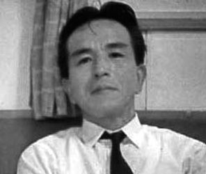

| 1946年日本回想録: （敗戦を乗り越えた人々） | |
| バーナード T. スミス | |
| Sakkam Press (2014) | |
目次
前付献辞
はしがき
パートI
第1章 待ちきれぬ思い
第2章 ボンベイから日本へ
パートII
第3章 日本に到着
第4章 指揮系統
第5章 来日間もない日々
第6章 波脇家―垣間見た日本の家庭生活
第7章 基地の日常業務
第8章 基地女性陣からの感謝の気持ち
第9章 パーティー、そして芸者の話
第10章 波脇家との幸せな日々
第11章 変化の時
第12章 地元警察署長
第13章 米国軍政府連絡担当将校
第14章 市長
第15章 岩国学校長
第16章 ミヤザキ家 ― もう一つの素晴らしい家族
第17章 ジョックとの別れ／ひとつの時代の終わり
第18章 岩国巡り
第19章 岩国文化協会
第20章 ミヤザキ家との交流再開
第21章 わが町のミセス・ヴァンダービルト訪問と初めてのお茶会
第22章 文化協会とユーモア
第23章 文化協会と女性の地位
第24章 一般的な英国の主婦についてのスピーチ
第25章 思いがけぬ東京訪問
第26章 ミヤザキ家と映画へ
第27章 残された日々と心からの別れの数々
パートIII
第28章 加護を受けた日々
第29章 信じがたいこと
第30章 そして次に続くのは？
1946年日本回想録
（敗戦を乗り越えた人々）
バーナード T. スミス
© 2014 Bernard T. Smith
All Rights Reserved
無断複写を禁じます。電子編集、版下、写真複写（コピー）、録画・録音など、どのような形態･方法であっても、あらかじめ書面による著作者からの許諾を得ることなく、本書のいかなる部分も複製、検索システムへの保存、もしくは、転送をすることはできません。
ISBN 978-1-78167-128-3
Translation bySaeculii Y.K.
Published bywww.sakkampress.com

献辞
終戦直後の1946年に日本で出会った人々、そして、本書に登場する素晴らしい同僚や日本の友人すべて全てに、私の思い出を綴った本書をささげます。残念なことに、彼らの多くはこの世を去り、この遅すぎた回想録を読んでいただくことができません。また、私の人生の形成期に手を差し伸べ、指導をしてくださったことへの、当時も今も変わらぬ深い感謝の気持ちを知っていただくこともできません。せめていつの日か、こうしたかけがえのない友たちのご家族や彼らと生前交流のあった人たちにも、悲惨な終戦直後の状況を知っていただけることを、切に願うものです。
さて、少々個人的なことではありますが、私の原稿を根気よく読んでは、さらに読み返し、手を入れて見違えるものに仕上げてくれた私の姪、ジャネット・ワイアット博士（Dr. Janet Wyatt）にも、心から感謝の意を表します。この献身的なジャネットは、第1章の最後の部分に出てくるあのジャネットです。また、私の手元にあった数枚の古びた写真や当時の興味深い新聞の切り抜きを、今日の最新デジタル技術を使って修復し、見事に蘇らせてくれた彼女の夫、コリンワイアット氏（Mr. Colin Wyatt）にもお礼を申し上げます。それらの資料は、本書の正当性を裏付けてくれる貴重な証拠です。
バーナード・スミス
イーリング、ロンドンにて
2012年10月
はしがき
時を超えてよみがえるあの頃
あれから長い歳月が過ぎ、われわれ誰もが歳をとって記憶もおぼつかなくなった今。1946年、終戦直後の日本について、書き残したい気持ちに駆りたてられるとは、なんとも不思議だ。当然、このことについて若干の説明をしたいと思う。
2011年に、私はセシル・バウチャー英国空軍少将（Air Vice Marshal Bouchier）の優れた自叙伝『Spitfires in Japan 』※を再び読む機会に恵まれた。そこでふと、長年見ることもなかった私の昔の記録や文書、写真などに目を通してみたくなった。すると驚いた事に、1946年の３カ月を綴った当時の日記と、大判のノート166ページにわたって書かれた日本滞在の記録を発見したのだ。この記録は同年、故郷に向かう船上で私が書いたものである。
日本での体験を記録した当時、それらは私の心に生き生きと息づいていた。そして2012年の今、確かに長い年月を経てはいたが、その記録を通して当時の出来事を多くの人に知ってもらうことで、まだ私にも何らかの貢献ができると思った。本書は政府の公式な出版物や一般的な報告書とは対照的に、人間の苦悩や個人的体験を中心に描いたものだ。2011年６月に日本大使館で英国ジャパンソサエティ（U.K. Japan Society）の年次総会が開かれ、そこで私はあるディスカッショングループに参加して、こうした私の状況を話す機会を得た。その際、多くの方々から執筆を強く勧められて実現したのが、『1946年日本回想録 （敗戦を乗り越えた人々）』と題した本書である。本書は、1946年初頭に日本人が感じていたひどい動揺とわびしさを伝えるとともに、もうその同じ年には復興へと取り組み始めた彼らの不屈の精神を著そうとしたものである。
本書のほとんどは、私が任務を終え故国へ向かう旅の途中につけた記録を基に書かれている。ただし、第25章には、思いがけぬ、また、不可解な巡り合わせによって、1946年に東京を訪れた時のことが書かれているが、このことは、ほとんど自分の記憶を頼りにせざるを得なかった。私がつけた記録にも、この少々不可解な東京での｢ミッション｣に関する記述はあるが、この件については割愛した。メモした際に誤記したり、誤って覚えてしまったために、本書に出てくる日本語の名前や語句に間違があるかもしれない。その場合は、読者に対し深くおわび申し上げたい。言うまでもないことだが、この貴重な記録が無ければ、本書の執筆はまず不可能だった。結局のところ、わが人生に起こった数々の素晴らしい出来事を忘れ去ってはならぬと不思議な運命の力が働きかけてくれたことに、私は心から感謝したい。
バーナード･スミス
ロンドンにて
* Global Oriental社から出版 (日本語版『英国空軍少将の見た日本占領と朝鮮戦争』は社会評論社から2008年に出版)。
パートI
事の始まり
第1章 待ちきれぬ思い
インド、カシミール
私の23歳の誕生日からわずか２日後の1945年８月15日。第二次世界大戦が終わったその日、私はインドに居た。ついに南アジアの和平が宣言されたのだ。私にとって人生でもっとも思案に暮れ、啓発され、人間として成長した時期の始まりであり、それは同時に実りの多いものだった。
英国空軍の若い空軍大尉（世慣れしているはずもない）として、私はカシミールでの休暇を楽しんでいた。インドとビルマでの約1年半にわたる任務を終えてのことだ。祝賀パーティーがあちこちで開かれており、将校クラブで開催されたダンスパーティーで、私はパールシー（ゾロアスター教徒）の優雅な女性から、人生のパートナーになってくれれば、「巨万の富」を約束する、というプロポーズを受けていた。しかしその時、もっと重要な事が私の心を占めていた。そう、水平線のかなたにある日本だ。
ニューデリーの3カ月
ニューデリーの基地に戻ると、われわれに二つの案が提示された。一つは、本国へ帰還すること。もう一つは、希望すれば、日本に駐留する連合国占領軍と共に任務を遂行するため、日本に短期間赴任できること。私は迷わず後者を選択し、ほとんど即時に許可が出た。おそらく、私が若干日本語の知識を持っていたからだろう。従軍に先立ち、私は1年近くの間、ロンドン大学東洋アフリカ研究学院の短期集中コースで日本語を学んでいた。しかしこの時は、最終的に日本に到着するまで、さらに半年以上もかかるとは、夢にも思わなかった。私はインドも所属部隊も大変気に入っていた。滞在中、誰もがとても親切にしてくれたし、今でも心から感謝している。ある時、他の将校たちと小さなグループで、ダチア州のマハラジャに招かれたことがある。州首相がわれわれのエスコートをしてくれるほどの歓待だった。とはいえ、日本への出発が遅れている理由は何だろう？まったく見当がつかない。単に官僚的な仕事のせいで時間がかかっているのだろう、と皆が思っていた ―実際、われわれの部隊の管理部門は当時多忙を極めていたのだ― だが後に、日本行き志願者の受け入れ体制を整えるのが難航していたのではないないかと気付いた。
インドで受けた親切
インドで私が受けた親切は、その後数ヵ月経っても変わることがなかった。インド側も私の部隊も、有意義な時間を過ごせるよう変わらずに便宜を図ってくれた。日本語の練習にと、ニューデリーのレッド・フォートを定期的に訪れるように勧められた。そこには多くの日本人捕虜がおり、日本への送還を保留されていた。部隊はジープを都合し、日本人捕虜の小さなグループと日本語で会話できるようにと、何度か私を連れて行ってくれた。時に私はその日本人捕虜らをデリー市内やその周辺にある名所へと連れ出した。一日の締めくくりに、ニューデリーのコンノートサーカス地区にあるダビコスまたはウェンガーズといった、格式あるレストランでアフタヌーンティーをしたが、他の客たちに驚きや警戒心を与えることもあった。よく同行した捕虜は、アイザワ少尉と彼の部下の軍曹、その他１、２名の兵士。アイザワ少尉とは、２～３年前に彼が亡くなるまで親交があったが、当時彼は「日本には帰りたくない」と言い張っていた。彼の言い分では、戦争に負けて体面を失ったと言うのだ。何とか彼の考えを変えようと、私はいろいろ試みた。後に彼は、日本郵船株式会社の船長として大きな成功を収めることになる。東洋アフリカ研究学院で日本語の勉強をしていた頃もそうだが、ここでも日本の捕虜と会話をするなどして多くの日本人と知り合った私は、日本人に極めて深い興味を抱いていた。戦争の恐ろしさをひと時忘れ、私は日本でのロマンチックな生活や、連なる丘陵、渓谷、そして美しい瀬戸内海を夢見た。色彩の国、大名や侍、そして赤穂浪士の国、大名の城があちこちにあり、勇敢な行いに満ち、美しい着物を着た女性たちが居る国を思い浮かべた。ある時、レッド・フォートで私が監督していた捕虜のひとりがしみじみ言った。「日本の女性が世界で一番美しく、優しい」と。国際的に有名な１９世紀の作家、ラフカディオ・ハーン（小泉八雲）は、日本に関する多くの著作を残しているが、最後には日本女性と結婚して、その後の生涯を日本で過ごしている。ついに日本に到着した時、これらのことが私に大きく影響していたのは確かである。
レッド･フォートとの別れ
レッド・フォートでは有意義に時間を過ごせたが、時の経過をもどかしく感じるのはどうしようもなかった。われわれは出発を待ちあぐんでいた。既に数名が本国への帰還を選び、日本に行くのは自分一人になってしまったようだった。1946年に入りやっと、マドラスにある海外遠征のための派遣部隊集結地へ配置されることになった。おそらく、マドラスがインドでは日本に一番近い港だからであろう。私はマイケル･ケリー（後の英国財務省事務弁護士サー・マイケル･ケリー）と一緒に、ニューデリーのレッド･フォートまで自転車を走らせた。レッド･フォートのスタッフやマッケイ少佐、スライズ上級曹長、そして言葉を交わしたことのある日本人捕虜たちにも、きちんと別れを告げたいと思ったからだ。最後にニューデリーの姿を目に焼きつけるように見つめると、旅立ちの用意に取り掛かった。マドラスに配置されるのは私だけだったので、ひどく孤独に感じられた。翌日は別れと旅立ちの日。1944年と1945年のビルマでのクリスマス期間を除くと、この２年のほとんどを過ごしたキャンプで皆に別れの挨拶をした。マドラスへは汽車の中で３泊せねばならず、見たところ大勢の乗客と一緒の旅だ。機関車は2,000キロあまりの距離をシュッシュッと絶え間なく音をたてて疾走した。ある時はパッとしない風景、ある時は美しい景色、またある時は月並みな、そして時には心を引くような光景が車窓に流れて行った。「こんなひどい事をするのはインドの鉄道会社くらいなものだ」と言うのは少々言い過ぎかもしれないが、2,000キロの旅路の果て、朝の３時に人気のない駅に乗客を放り出すとはなんたることだ！
中継地マドラス
マドラス初日（1946年１月21日月曜日）、到着したのは正午だった。ここは、街に隣接する大規模な一時滞在キャンプで、将校専用の大きな施設があった。しかし、なんということだろう。ここでもさらに出発を待つ日々を過ごすことになった。時はまたもや、もどかしいほど遅々とし始める。受けなくてはならない予防注射やワクチン接種などに加え、日課となっている朝の訓練もあった。なんとも矛盾しているようだが、われわれの占領下にある人々に良い印象を与えるよう、祖国の大使として、快活かつ小ぎれいにせよと告げられた。
全員が同じ部隊に所属しているのではなく、どこから来たのかや、どこへ派遣されるかによって異なっていた。 ビルマで同僚だった二人は、最初、サイゴンとカンボジアのプノンペンにそれぞれ配属されていたが、ブラマプトラ川の向こう岸から、このキャンプにやって来た。彼らは私と同時期にキャンプに到着したが、私とは別の時期に日本へ派遣された。彼らとは一緒にマドラス探索に出かけたものだ。二人のうち、英国空軍大尉マーク・マクラフリンとは、後に日本で再会する。小説、『風は知らない（The Wind Cannot Read）』を書いたリチャード・メイソンとも一緒になるが、彼と始めて会ったのは３年ほど前、ロンドン大学の東洋アフリカ研究学院だった。私は定期的に管理事務所に立ち寄って、何が起こっているのか探ろうとしたが、うまく行かなかった。ありがたいことに、気候は素晴らしく温暖で文句のつけようがない。宿舎に戻ってくると、隣人達の多くが、ほとんど衣服をまとわないか、時にはまったくの裸のまま日光浴をしており、非番をくつろぎ、楽しんでいた。ところが私ときたら、ここを離れて日本に行くことだけを切望していたのだ。1946年１月28日月曜日、突然、われわれ６名が移動となった。だが、行き先は希望していた日本とは逆方向の中継地、今度はインド亜大陸の反対側にあるボンベイへと向かっていた。２年前、私がインドに初めて降り立った場所だ。マドラスでは海のかなたに昇る朝日を見慣れてきたが、ボンベイに戻ってからは、海のかなたに沈む夕日を眺めたものだ。この経験から得たのは、広大なインド亜大陸を東から西へと横断する太陽の日々の軌跡を感じ取る、奇妙というよりほとんど気味が悪い感覚だ。太陽は毎日ヨーロッパへと向かって移動する。私にとってそれは、故郷の方角でもあった。
中継地、ボンベイ
ボンベイでは英国からの手紙が私を待っていた。とてもうれしい。６カ月になる姪のジャネットの洗礼式のケーキが一切れ入っていたものもある。少々気が早いとは思ったが、私は彼女宛てに小さな可愛らしいドレッシングガウンを送っていた。差出人に「バーナードおじさんより」と初めて書いたのもこの時だ。この少女は、本書の献辞の中で私が謝辞を述べたあのジャネットである（現在はジャネット博士だが）。ここではニューデリー時代の同僚とも再会した。彼らは故国へ戻る途中だった。インド門やタージマハルホテル、そして、インドに到着してすぐ水浴びをして酷い日焼けで苦しんだあの思い出のビーチをもう一度見ることができたのもうれしかった。そしてついに事態は動き出した。とはいえ、ボンベイで過ごす時間は２、３日残っており、思いがけずとても楽しいものになった。1946年２月７日火曜日になって、やっと最終目的地に向かう船に乗り込んだ。出航前、後にわれわれの上官の行政官（ＡＯＡ、Air Officer Administration／上級行政官）となる空軍准将が、私の所属する少人数の空軍派遣部隊を訪ねてきた。彼はまずわれわれの幸運を願い、この６人が英国連邦軍全部隊から終結する15,000人あるいはそれ以上の全空軍部隊の中でも、最初の派遣隊員となること、これから２、３カ月の間、日本に滞在することを伝えた。さらに、従わなければならない非常に重要な指令が一つあった。われわれと共に活動する要員は何人であれ、「野営する」ことを強要されてはならない、というものだ。つまり、部隊にとって必要な宿舎や家財道具は、現地で「接収」しなければならないということである。辛い任務は数々あったが、中でもこの接収が最も心の痛む任務だった。その他の点では、私の人生でも非常に素晴らしい年だったのだが...。
インドにて、アイザワ少尉（左から2番目）、著者(その後ろ)、その他の同僚4人と運転手

第2章 ボンベイから日本へ
ボンベイよ、さらば
1946年２月９日土曜日、いよいよボンベイから日本へと出航した。さまざまな客を乗せた大型船だ。私と同じくインドや英国の軍関係者に加え、故郷へ戻る日本人捕虜・官僚・ジャーナリスト・外交官なども居た。中には戦争中拘留されていた人や、日本へ帰ったら裁判にかけられるであろう人もいた。旅の間、私はそんな乗客たちと種々のテーマで議論を交わした。目下の同僚となった９名は、比較的狭い客室に詰め込まれたが、折り合いをつけて楽しくやっていた。「折り合いをつける」のが、当時のルールだったように思える。ほとんどの時間を、デッキやラウンジ、その他の公共スペースを自由に使って過ごした。そんなわけで、われわれの客室は交代制で使われるようになった。同僚と船の手すりに寄りかかり、特に夕暮れ時に足下に広がる静かな海を覗き込みながら、その日の出来事についてあれこれ思いを馳せるのは、素晴らしい気分だった。気がつくと、日曜が来ていた。賛美歌の歌詞とは裏腹にこれ以上ないほど遠くまで静まりかえった海を眺めながら、「神よ、嵐の海を渡るわれらを導き賜え」を歌い、船上で初めての日曜礼拝を楽しんだ。船はこの世のどこともつなかい大海原を漂う街だ。われわれは、これからの３週間をどのように過ごすかいろいろと話し合った。同室の仲間のうち４人は夜、ブリッジをすることにしたが、すぐに他の人間とも打ち解けた。私は、わが隊の大佐や空軍中佐とよく一緒にブリッジをしたが、彼らの赴任地がどこかは正確には知らなかった。岩国に行く隊員はいても、英国連邦空軍指令部ではなさそうだった。私が知る限り、英国連邦空軍の司令部に配属されるのは私一人だった。自分から申し出た覚えはないが、興味のある人たちに日本語を教えるのは、私の役目と受け取られていた。日曜以外の毎日、午前中１時間のクラスを２つ受け持った。日本に到着してわれわれが姿を見せたら、日本人はどのような反応をするだろうか、とか、どのように振る舞うべきかについて議論した日もある。日本人は当然報復を企んでいる、と言う者もいた。そのような発言をする者は、大げさで独りよがりで、無分別に虚勢を張っているように私には思えた。こうしたあやしげな議論には巻き込まれないようにしていた。全ては仮説に基づいた議論なのだ。どのように行動するかは、遭遇する出来事によって決まるはず。いかにその時点では不可欠な行動と見なされていても、広島で目の当たりにしたように、疑わしい行動をわれわれも取ってきたのだ。聞こえてくるさまざまな惨事や残虐行為にも関わらず、私はぜひ日本の人々と友情を育み、友人として日本を去りたいと切に望んだ。
コロンボからシンガポールへ
２月12日火曜日、当時セイロンという国名で呼ばれていたスリランカのコロンボに入港した。ボンベイを出発後、船上で書いた手紙を投函する良い機会だ。２月17日日曜日、われわれの乗る船はマラッカ海峡を下り、シンガポールの港に到着。私はここでも手紙を出した。シンガポール滞在中、ある英国空軍少佐が訪ねてきた。彼は、日本からやって来た連絡将校で、後に知り合いとなり、ハンクと呼ぶ仲になる。彼はわれら隊員より一足先に、大佐が岩国へ飛ぶ許可が出たと、船まで伝えに来たのだ。この連絡将校にはアメリカ訛りがあったが、英国空軍の階級だったので、東京に駐留している米軍からではなく、英国空軍連絡事務所から派遣されたのだろうと想像した。だが、アメリカ人の可能性はあるなと思った。言うまでもなく、この知らせに、わが隊の大佐は喜んだ。ところが、シンガポール停泊は大変短かったため、残念ながら市内観光はあまりできなかった。少なくともシンガポールの地を踏んだと言えるよう、埠頭辺りをぶらついたり、周囲の通りを覗き見たりして、満足することにした。何ヵ月も先になるだろうが、英国に帰国する際に、今回シンガポールで見逃した場所を回るチャンスもあるだろう。６カ月前まで日本軍が占領していたため、通りには、「禁煙」といった張り紙や、建物に書かれた巨大な日本の文字が溢れていた。日本人捕虜の働く姿もある。日本軍占領時に、ここで苦役を強いられた英国人捕虜に比べたら、楽しそうに働いているのではないかと想像した。
南シナ海
２月19日火曜日の朝、目が覚めると船が動いている。夜が明けるとすぐ、ストリームと呼ばれる潮の流れに乗って出発したのだ。こうして、最後の航海は始まった。船が航路を北に取るにつれ、寒さが増し、波も荒く、高くなった。新しい冒険と、願わくば心踊るような新たな経験への期待を乗せて船は進む。日本語のクラスを、出発から２日後に再開した。すでに生徒の数は減っており、私は続ける意味があるのだろうかと逡巡した。１日に２時間、貴重な時間を教えることに割いていたが、断念することにした。今後の準備にも時間が必要だ。時々、極度の疲労を感じることがあった。とりわけ、南シナ海で、一面暗い空に覆われた嵐に遭遇した時には疲労感が増した。船の中にも重苦しい空気が満ちていた。ボンベイやインドの状況が非常に悪化していると聞いたが、そうした状況に遭遇せずに済んだのは幸運だった。どうもインド全土に反乱が広がっているようだ。ボンベイは相当深刻な混乱に陥っていた。このような時にまだボンベイに居たとしたら、われわれの出発がさらに遅れていたことは、疑いの余地がない。さらに言えば、日本の地を踏むこともなかったかもしれない。船には日本人外交官が乗り合わせていて、私は時折日本語の練習のために彼と会話をした。その彼がインドの軍関係者と話しているのを目撃され、それが原因でキャビンに監禁された。恐らく、船上で混乱が起こるのを避ける措置だったのだろう。そんな訳で、私がこの外交官と話をする機会は二度となかったし、もちろん別れを告げるチャンスさえなかった。私は４人のメンバーで毎夜のようにブリッジを楽しんだ。私のパートナーや対戦相手は、同僚や上官から医者たち、果ては軍の厚生部員にいたるまで幅広くなっていった。気さくで楽しい厚生部の隊員は、食料や飲み物を差し入れてくれた。こうした付き合いで、良い友人関係が作られた。ゲームが終わると、内容を振り返っては議論を交わし、負けた責任を押し付け合ったりしたが、私は常に愛想良く振る舞う事にして、こうした議論を深刻にとらえ過ぎないようにした。そして、100ポイントにつき１アンナ銅貨 ―実際かなりの小額だ― 以上を賭けてのゲームは断ることにしていた。
香港・台湾・そしてその先へ
２月24日に行われた、船上で３度目の日曜礼拝の雰囲気は、その前の２回とは大きく異なっていた。私は一等客用のラウンジの窓から外を眺め、香港、台湾を越えるにつれて変わる景色を見ながら、これまで見てきた風景も思い出していた。まず頭に浮かんだのは、晴れ渡った空に映えるインドの海岸線と穏やかで波のない海。船に居るのを忘れるほどの静かな海だった。次に思い出したのは、船がシンガポールに近づいて行くシーンだ。抜けるように青い空の下、まだ暖かく気持ちの良い天気に恵まれていた。しかしそれ以降は、今にも雨が降りだしそうな、寒くどんよりした朝を迎えるようになった。そして最悪なのが嵐だった。船は上下に揺れ、時には冗談ではないほどのひどい横揺れに見舞われた。食事の時間、船長はぐったりした乗客を哀れみつつ、目に笑みを浮べながら食事をしていたようだ。船は熱帯地方を抜けたばかりだったが、われわれは既に夏の軍服を脱ぎ捨て、空軍の青い上着を身にまとっていた。船員の服装も暖かい物になっていた。誰もが時間ギリギリまで寝床にいて、朝食の時間には狂ったように駆けつけた。２月28日火曜日、船は日本の沖合に到着。この時初めて、魅力的な小さな島々をちらりと目にした。それらの島は、素晴らしい日本の内海（美しき瀬戸内海）に点在している。夜になると冷え込みが厳しくなり、デッキからは、スコットランドに似た暗い霧の向こうに、岩国の街のキラキラ輝く光を見ることができた。しかし、船はそのままゆっくりと呉市へと進んだ。船で過ごす最後の夜、素晴らしい演奏になるだろうと期待されているラスト・コンサートを心待ちにして...。
ハンク(座っている人) アメリカ訛りの英国空軍少佐と著者
パートII
感動の7カ月
第3章 日本に到着
歴史に思いを馳せて
1946年２月28日火曜日、呉市の沖合に到着。その日は一晩船上で過ごした。船上コンサートが終わると、これから待ち受けているであろうことを、私はあれこれ想像した。２月最後の数日間、船は、まるで青い海に真珠をちりばめたように、多数の島々が点在する美しい瀬戸内海を前進し、われわれは美しい日本の海岸線のゴツゴツとした輪郭を眺めながら、それに沿って進んだ。白波が南日本の先端を荒々しく叩くように打ち付ける。遠くの丘陵からたなびくそこかしこに見える煙は、寒い冬の景色に活気を与えていた。あそこに眠るのは、いかなる不思議だろうか。われわれは、歴史を遡る一歩を踏み出そうとしている。目の前にある日本。長い航海の終わりは、なんたる素晴らしさだろう。現代の開発の波にも、人間の技術にも汚されていない、この国の素晴らしい自然、そして過去と神話と伝説、ロマンチックな伝統が息づく国を、私はこの目で見たいと切に願っていた。ここは、「あらゆる気高き子孫の源」とされる太陽の女神・アマテラスの地であり、「大地、太陽、月が風景の輝くような美しさと一つになる」地、そして、勇敢ないにしえの神の子が倒したヤマタノオロチの地だ。大名と忠実な家臣が生き、城や砦、英雄的な行為と名誉、そして武勇と徳を重んじる国。今日聞かれる戦争や残虐行為の話が本当の事とはとても考えられない。それくらい、ここには別の日本がある。私が知ったところでは、日本人の心ととても近い関係にあるのが自然であるという。だからきっとその中に本当の日本を見つけられるだろう。海から見る丘の光景は、どんなときでも暖かく迎えてくれる。それは自然が持つ力だ。松の木が並ぶ遠くの丘陵からは、絶え間なく煙が上り、暖かなメッセージを送ってくれていた。光栄にも私はとうとうやって来た。これらの知識が本当かどうかを確かめるために...。
砕かれた夢
３月１日金曜日、到着以来、私は「夢心地」だった。依然として、うっとりするような経験が続いている。その日、私は書物の上ではなく、実際に日本の漢字を目にし始めた。それらは生き生きとして、突然現実のものとなった。私が学んできた日本語の文章や漢字は、やはり現実の生活や言語の一部で、人生の一部なのだ。｢歩行者は右、車は左｣といった標識を見ると、ワクワクした。漢字が意味を伝え、人々がそれに反応する。うれしくてたまらなかった。私はこの目でしっかりと日本を見ることができる。日本語を知らない者なら、私の半分も日本を理解できないだろう。しかし、どんなに甘い夢にも、唐突な目覚めがやって来ることがあると気づいた。たとえそれが、最高潮の夢の中にあっても、起こり得るということも...。船が港へと進むと、絶大な規模を誇る海軍基地として、戦争中の日本の誇りと喜びであった呉の姿が視界に入ってきた。夢見た妖精の国は突然色あせ、私の心は沈んだ。桟橋に近づくにつれ、現実と向き合うことになったのだ。前方に横たわっていたのは、破壊しつくされた不毛の土地、廃墟、過去の栄光の残骸。巨大な橋げたが、錆びて使い物にならないくらい捻じ曲がり、どんよりとした空に突き出ていた。鋼鉄製の強靭な支柱は闘いに破れ、破壊され、絡み合っていた。戦争をすれば、なれの果てはこうなるのだと、世界中に向かって警告を発しているかのようだった。そんな錆びて凍てついた金属やコンクリートの瓦礫の山を見ると、ざらついた表面を爪で引っ掻いた時のような、歯をきしませるような不快感がした。悪寒がした。私が描いていた光景ではなかった。
空軍の暖かい歓迎
われわれは日本人から暖かく迎えられるとは決して思っていなかったし、実際に歓迎してくれる者などなかった。とはいえ、彼らがわれわれに対し敵意を見せることも特段なく、私の日本滞在中、本当の敵意を向けられたことはなかった。日本人は、現在の状況は運命だ、という見方をしていたのだと思う。彼らは、なぜこんなことになったのかは問わなかった。宿命として受け止め、あらがわず、状況を受け入れようとした。抵抗することなどなかった。代わりに、禁欲的に自らの状況に耐えつつ、穏やかに生活を続けている。これこそが、日本人の傑出した悲劇からの回復力であり、こうした力をその後、私は何度も目にすることになった。さて、ここで話をこの日の出来事に戻そう。岩国に行くメンバーを迎えるため、波止場で待っていたのは、ごく少人数の英国空軍の一団だった。見るからに鋭敏で幸せそうな若者たちで、彼らは寒さに血の気を失っているにもかかわらず、大いにわれわれを歓迎しているように見えた。落ち込んでいた気分が晴れる。デッキからさまざまな質問を投げかけると、彼らは何が起こっているのかを話してくれて、われわれの興奮は高まった。ここでの生活はどのようなものなのか？一般の日本人と会うことがあるのか？友達はできたか？われわれの到着を歓迎してくれる一団のおかげで、安堵し元気が出た。長旅を終え、到着したばかりだが、心からこの地を探索することを熱望している開拓者になった気分だ。しかし、またもや私は気分の浮き沈みに襲われることになる。われわれが居るのは、もはや豊かな国ではなかった。かつての呉のように活況を呈する港や巨大な海軍基地に居るのではない、ということを思い出したのだ。思いがけず、そして瞬く間に、現実と、恐ろしい戦争の残酷な結果に、対峙することになったのである。程なくして、ここよりはるかにひどい、破壊しつくされた光景を目の当たりにした。
呉の悲惨な現実
船に乗っていた外交官たちは、われわれより前に下船してしまった。彼らの誰とも別れの挨拶を交わすチャンスはなかった。出迎えてくれた一団と合流し、呉市の鉄道駅に向かう。市内は眠ったように静まり返り、人気がほとんどなかった。街には動きが一切なく、活力も感じられない。ひどく寒かった。女性たちは何枚もの服を重ねて着込んで、まるで毛糸球に身を包んでいるかのような格好で通り過ぎていった。多くの女性が足首の部分を縛ったゆったり目のズボン、「もんぺ」をはいている。戦時中、女性はこれをはくよう強制されていたらしい。寒さにもかかわらず、彼女たちの履物は鼻緒のついた木の下駄だけで、凍りついたアスファルトの上をカランコロンと音をたてて歩いていた。市場に行くと、道路には行商人が置き去りにしたと思われる、古くなったゴミの山が広がっていた。私は日本語を話してみたが、ささやかな成功しか得られなかった。行商人のしゃべる方言のせいだと思いたい。実を言うと、初めての日本語でのやりとりは、恥ずかしながら闇市においてだった。日本の貨幣を持っておらず、５時間も食べずにいた私は腹がすいていた。そこで、タバコ10本を１キロ少々のミカンと交換した。私と同僚たちは、喜んでそのミカンを食べた。呉の駅にやっとたどり着くと、そこには市内のほとんどがそうだったように、２、３の掘っ立て小屋があるようにしか見えない。線路の様子も奇妙だった。かつてはプラットフォームに沿って走っていたか、車庫あるいは修理倉庫へと引き込まれていたのだろうが、今はどこにも通じていない。爆撃された時のままのようだった。駅の職員は無表情で歩き回っていたが、われわれがさびれた駅で４時間も汽車を待ち続けていることにはまったく無関心だった。笑われても仕方のない状況だったのだが、この日本人は嘲笑する意思も気力もないように見えた。乗り込んだ汽車のことは今でも覚えている。これが、日本での最初の汽車の旅だ。二つの客室には、半分ほどしか乗客がいなかったが、空いたスペースは大量の食料と配給品で埋められた。ついに、そして突然に、軍の配給食料が届き、自分たちに与えられたのだ。われわれはまるで宴の席の飢えた狼のように見えただろう。食べ物を次から次へとガツガツ口へ運んだ。一方、隣り合った日本人用の車両は、すし詰めだった。腹を空かせた子どもたちは、ぽかんと開けた口と小さな鼻を、車両を隔てるドアのガラスに強く押し付けている。氷のように冷たい窓ガラスに、子どもたちの息が白く凝縮し、唯一それが見た目でわかる生命の証だった。私はこの光景にショックを受けたが、自分にあえてできることなどなかった。私はこの新しくも恐ろしい事態において、自分の立場をまだまだ学ぶ必要があった。
広島での悲痛な経験
呉の街ではいろいろと失望を感じたが、その後間もなく経験したショックと恐怖に比べれば、何でもないことだ。岩国へ向かう途中、32キロほど離れた場所にある広島に近づくにつれ経験した衝撃。湿気で曇る列車の窓から見えたのは、荒廃した陰惨な街だ。おぞましい光景だった。市全体が壊滅状態にあり、かつて民家や商店が並んでいた場所は、瓦礫でいっぱいだった。広島が戦争末期に原爆が投下された２都市の一つであることは当然知っていたし、呉と私の目的地、岩国との間に位置することも、事態は深刻であることも知識としては持っていた。だが、このように広大なエリアが無に帰するほどの荒廃は、まったく想像していなかったのである。家屋、住居、会社、工場、ホテル、商店、市役所の建物、公園など、西日本の中でも栄えていた広島市全域が消滅してしまった。痕跡もないほどに破壊されつくされたのだ。5、60センチの高さを超えるもので唯一存在するのは、裸の枝をぶらさげた木だけのようだ。氷と雪の凍てつく野原と空を背景に浮かび上がるシルエットは、全力で生にしがみついていた。灰色の墓石、数え切れないほどの死者の墓標、さらに、あちらこちらに半分崩れかけた石造りのアーチの残骸が火に焼かれ変形して黒ずみ、粉々になった石片の瓦礫の上に横たわっていた。想像を超えるほどの荒れ地、廃墟だった。われわれの乗った汽車が新しく建てられた広島駅のプラットフォームに横付けすると、目に入ったのは驚くほどたくさんの子どもが汽車を待っている姿。子どもたちは学校から帰る途中で、手に帽子を持ち、学生かばんを背負っていた。とくに、女の子たちは血色のよい丸顔で、トマトのような赤い頬をしており、笑くぼがあった。真っ黒な髪で、前髪はおでこで切り揃えられている。何百人もいたが、皆とてもよく似ていた。女子を教える中等教育学校の先生は、生徒を見分けるのに苦労したことだろう。どうりで、子どもたち全員が上着に名前を付けている訳だ。未来の日本を背負って立つ子どもたち。お腹をすかせながら興味津々で列車をのぞいてみたら、無駄に食料をムシャムシャ食べている外国人が居たと、彼らは記憶するだろう。外国人の車輛がガラガラだった一方で、自分たち日本人はギュウギュウ詰めで、車両の上り口にまで立っていた人や、窓から半分体を外に押し出されながら乗っていた人が居た事を思い出すだろう。それは、占領軍のわれわれにとってはうれしくない状況だった。私はそのことを気にかけていた。数人の仲間が子どもたちに話しかけ、たまたま持っていた菓子をやろうとした。チョコレートバーを半分もらった男の子の顔には、見ているこちらもうれしくなるような表情が浮かぶ。彼の赤い頬は紅潮し、きらめく目と真っ白な歯は光を反射して輝いた。こんな陰鬱な日には、非常に価値ある出来事だった。駅員が旗を振っている。私は再び陰気な風景をじっと見た。無味乾燥な廃棄物と不毛な土地。われわれの本部になるはずだった広島。岩国はいくらかましだろうか...。３月の寒くどんよりした午後、暗くなりつつある空の下、広島の街が消えゆくのを眺めながら、そんな恐ろしい考えが頭をよぎった。ピカソの絵をもっと激しくしたような、グロテスクで幻想的な形が私の心に浮かんだ。かつて栄えた都市からゆっくりと遠ざかるにつれ、その心象はかなたへと溶けていった。しかし、先ほど見たあの恐ろしい光景は私の胸に焼き付き、時が経っても消えることはなかった。
広島の消えない傷
広島で感じた衝撃と恐怖を心に刻み、いつまでも忘れないために、岩国到着から２～３日後に再び呉を訪れた時のことを書いてみようと思う。この時は、ジープで陸路を移動し、経理担当スタッフも同行していた。呉を訪問するということは、また広島を通るということ、そして、市街地のひどい荒廃を前回よりも間近に見るということだ。文字通り右往左往しながら、完膚なきまでに破壊された土地を抜けて行く。街は積み上げられた瓦礫の迷路と化し、その中を何とか進む。かつて広島だったこの街には、たくさんの川が横切っていたようだ。破壊され干からびた道路を行くわれわれは、壊されずに残った、あるいは、一時的に架けられた橋という橋、鉄橋という鉄橋を通ったような気がした。同じ川を何度も、別々の方向に渡らなくてはならない。おかげで、片道約65キロに４時間もかかってしまった。時々、石塊や瓦礫の下で轟音がした。不気味だったが、この地には亡霊や精霊さえ棲める場所はなかった。ここは亡霊の街ではなく、見渡す限りの荒れ果てた平野。幽霊が飛び出して脅かすような、形を留めている廃墟や打ち捨てられた建物は一つもない。もののけさえ、ここに居場所を見つけることはできないだろう。しかし、ここで数え切れないほど多くの罪もない男女、子どもが死んだのだ。全ての人が一瞬にして殺された。いわば勝者と呼ばれる、われわれの手によって落とされた、たった一つの原子爆弾のせいで。1945年８月６日、あの運命の月曜日に、そこに居合わせていなければ、その日、人々が受けた苦痛や苦悶を真に理解することなどできない。想像が私の頭を支配した。自分をどうすることもできなかった。20万人以上の人々が身の毛もがよだつような状況の中で、どのように死んでいったか聞いたが、その衝撃的な話は私の脳裏から離れなかった。衣服は体から剥がれ、人間の体の形が岩に焼きつけられた。顔や手足の上皮は剥け、原爆の放射線によって造血細胞を破壊されたために、人々の体は青くなったり、あるいは、赤くなったりした。被害者のほとんどは、悲しくも死んでいったが、一生ひどい障害を負った者たちも大勢いた。髪の毛が抜け始め、完全に坊主になってしまった人をはじめ、皮膚病、感染症、潰瘍や腫瘍も蔓延していた。数年のうちに、放射能はどんな恐ろしい症状を発症させるのだろうか、という問いに誰が答えられるだろう？ひどい惨劇だ。このような恐ろしい軍事行動が本当に必要だったのだろうか？われわれには、改めてそれを問い直す資格があるように思う。いずれにしても、日本での最初の数日間に得た経験は、なぜわれわれがここに居るのかを、容赦なく思い出させるものだった。私が見たあの悲惨な光景は、その後もしばしば頭の中に忍び込んできた。とくに、地域住民の所有物を接収する、それがたとえ彼らが一番大切にしている物でさえ奪うというような、不愉快な任務の実施を命じられたときには、その光景がよみがえった。すでにひどい苦しみを味わってきた多くの罪のない人々に、さらに差し出せと要求するのは残酷なことだ。心の奥で決して忘れることができなかった、「リメンバー・ヒロシマ！」「広島を忘れるな！」。そして私は実際に忘れることはなかった。いや、忘れることができなかった。数カ月が過ぎ、徐々に街から危険な瓦礫が片付けられ、新しい建物が建ち始めた。その後も、何度か広島を訪ねることがあり、時には歩いて回ることもあった。しかし最初の広島の印象が変わることはなかった。
広島のすさまじい原爆の爪痕
第4章 指揮系統
米国軍政府－英国連邦占領軍－英国連邦空軍
1946年３月１日、岩国に到着。戦争が1945年８月１５日に終わってから、半年以上経っていた。戦争終結から４カ月間、日本全土を占領統治していたのは米軍政府だった。しかし、1946年１月に本州の南半分（山口県 広島県、岡山県、島根県、鳥取県）と四国地方４県の管理責任は、英国連邦占領軍に移行され、呉市にその司令部が設置された。英国連邦占領軍要員として最初の任務についたのは、数名のオーストラリア人で、彼らは1946年１月初旬に到着した。英国連邦占領軍の初代最高司令官はオーストラリア人、サー･ジョン･ノースコット大将だった。英国連邦占領軍の空軍組織は、英国連邦空軍として知られる。私が所属していた英国連邦空軍の司令部は、呉から東に約65キロ離れた岩国市に設置されており、辛うじて機能している状況だった。戦前・戦中を通し、市には日本海軍航空隊の名高い訓練基地と司令部が置かれていた。３月１日、私がそこに到着した時には、英国連邦空軍の最高責任者はサー・セシル・バウチャー英国空軍少将だったが、まだ岩国に着任していなかった。彼はノースコット大将の補佐でもある。英国連邦空軍を含む英国連邦占領軍全体は、東京の米国陸軍ダグラス･マッカーサー元帥の統帥権下にあった。残念ながらわれわれは、アメリカ人よりやや下の地位に置かれていると感じることがしばしばあった。部隊では皆そのことを自覚していたが、日本人も同じように感じていたようだ。われわれの立場に共感を覚えたのか、日本人はわれわれが引き継いだ三つの滑走路の一つにあった鉄道駅を「三田尻」 ―たんぼの尻―と呼んだ。そう呼ばれても仕方のない、三つの滑走路は稲田に毛が生えたようなものだったのだ！くしくも同じような調子で、着任早々、部隊の同僚が書いた主の祈りのパロディーを見せられた。
東京にまします我らの元帥よ
み名はダグラス･マッカーサーなり
み国は英国連邦占領軍の部隊に立ち入り禁止なり
我らの日用の指令を今日も与えたまえ
我らの手紙を投げ捨てた者を我らが赦す如く
米軍の管轄地に不法侵入した我らの罪をも赦したまえ
我らを狂気に遭わせず岩国より救い出したまえ
この国と汝の無限の能力は占領期間のみに限って
汝のものなればなり
聖書の１節を模した、この不遜な詩は、怒りや恨みといった感情ではなく、面白がって書かれたのだろう。戦時下の英国連邦軍の努力と親善的な態度は、米軍に劣らぬものだった。米軍が太平洋一帯での戦争に勝利したというなら、少なくとも戦争に負けるのをビルマでわれわれが防いだのも、紛れもない事実である。
岩国到着
われわれは、呉と広島で見たことにショックを受けていた。だが、残念ながら岩国に着いてみると、呉や広島よりましな光景だとはとても思えなかった。岩国市とそこにつながる道は原爆投下を受けていなかったが、あたり一面激しい空爆の痕跡を残していた。壊れかけたビル、窓も屋根も床もない家、線路の横に転がる焼け焦げた汽車、そして仰向けになった車が田園地帯に散乱している。海岸付近はさらに破壊されていたが、それは台風と高波によるものだ。またしても悲劇に襲われるとは、なんたることか。われわれの上官の中には、日本を「災害と危難の地」と呼ぶ者もいたが、もっともだった。しかしそれでも、前途にはやりがいがある任務が待っているという確信を持ち、忍耐強く先へと進んでいった。その任務とは、われわれが打ち負かした人々の尊敬を自らの行動によって得ること、戦争の無用さを彼らに示すこと、そして、世界の国々が平穏を取り戻す助けとなることだ。呉や広島で感じた絶望を、全世界の輝く平和な未来への希望や熱望へと切り替えねばならない。英国連邦軍はこうした任務をしっかりと遂行し、占領期間が終わるころには、日本は国際社会の中であるべき地位を回復する道のりを順調に歩んでいるだろう、と私は確信していた。事実、それから20年ないしは25年後、日本は目覚ましい繁栄を遂げ、国際的地位を回復したのだ。岩国については、ほとんどの人が知らないような小さな漁村だと説明されていたが、前述したように、戦前から戦中にかけ、日本海軍航空隊士官候補生のための名門海軍兵学校を持つ司令部が設置されたことで、重要な拠点へと変わっていった。見た目には、曲がりくねった狭い道が多い古風な小都市のままだ。表通りには、今にも壊れそうな住居や店が立ち並んでいたが、閉まっているか、ボタンや飾り鋲、２、３の無線の部品らしき物以外ほとんど何もなく、もう何年も商売をしていないかのようだった。人々は主に土地を耕したり海で漁をして生計を立てていたが、わずかな副収入を得るために店を持って商売をしている者も居た。彼らはわれわれの到着にまったく無頓着のように見えたが、一、二人が、「英人」と言っているのを聞いた。われわれより前に駐屯したアメリカ人と、もしかするとオーストラリア人とも違う者として区別されているようだ。子どもたちは「ハロー」とか、「グッドバイ」と叫んでいた。アメリカ人から覚えた言葉なのだろうが、その言葉がどんな意味かは知らないように見えた。子どもたちは、飛行場であれ何であれ、われわれが行く所ならどこででも、熱狂的に手を振ってくれた。
またもや沈む心
古風で趣ある小道を車で走ると、控え目だが心のこもった歓迎を受ける。そのことに少々なだめられていたが、基地構内に入ったとたん、悲しいかな、再び衝撃が待ち受けていた。英国連邦空軍の司令部になる予定の大きく立派な建物へと車で近づいて行った。実際、少なくとも半年かそこらの間、私の事務所であり住まいとなる建物だ。前述した日本海軍航空隊の本館だったのだが、なんということか、外見とはまったく違っていたのだ。われわれはすっかり意気消沈した。建物に入るやいなや目にした内部は、足の踏み場もないほど無秩序にちらかっている。建物全体がまるで誰かに荒らされたかのようだ。もしかしたら、以前駐屯していた米軍政府軍がここを発つ直前にしたことかもしれない、さもなければ、土地の無法者が破壊したのだろうか。あるいは、両方の仕業かもしれない。半数の部屋は、窓も、ドアも、天井もなくなっていた。セントラルヒーティングの装置も、給湯設備やまともに手洗いができる設備さえなかった。野営テントの方がましなくらいだ。洗面台、鏡、家具、敷物、マット、電球は、不思議なことに全てなくなっていたが、それらの取り付け金具や壁のコンセントなどはそのまま残り、かつてそういった調度品があったことを示していた。噂によれば、日本海軍が所有していた多数の貴重な最高級落下傘は、われわれに利用されないように燃されてしまったとのことだった。日本到着時に感じていた私の熱い思いは萎んでしまった。一日のうちにたくさんのことが起こり過ぎた。実際、あまりにも多くのことを見過ぎてしまったのだ。ぐっすり寝て、明日新たな気持ちで出直すしかなかった。だがその目標さえも、またもや阻止されてしまう。最初の夜は、ほとんど眠れなかった。われわれは夜具を置いてきてしまい、間に合わせで可能なかぎり対処するしかなかったのだ。私は奇妙なラジエーターを見つけ、古い防水布２～３枚に身を包んでその近くにうずくまる。しかし、夜の11時にはラジエーターの温度が下がり始め、私は冷え切った金属の塊を抱きしめることになった。
第5章 来日間もない日々
行政官
それほど遠くないところでおんどりが鳴いている。それは私にとって新たな一日の幕開けであり、日本での二日目が始まる合図でもあった。起床して散策する以外予定はなかったが、ブラブラ歩いても大して楽しめるとは思えなかった。昨日の事を口にする者は誰もいない。私同様、誰もがこれからのことを考え、少々浮かない気持ちになっていた。その朝早く、私は行政官と面会するよう呼び出しを受けた。英国連邦空軍の次期司令官バウチャー空軍少将が着任するまでの間、彼が基地で最高位の将校だった。行政官は面会中、たいへん心強い言葉をかけてくれたが、少なくとも私の内心はとても不安だった。
「君はこれまで組織的な作業をしたことはあるかね。」
「いいえ」
「フム。まあそういった経験はとくに大きな問題ではない、と私は思うがね。常識だよ、君。何よりも必要なのは常識だ」
それから行政官はとても重要な任務が、われわれを待っているとも言った。
「オーストラリア、ニュージーランド、インド、そしてイギリスの部隊からなる史上初の英国連邦空軍を編成し、駐留させねばならない。彼らは全員、これから到着することになっている。今後４カ月間で、部隊ごとに少しずつ日本にやって来るのだ。ああそれから、君が日本へ発つ直前、ボンベイで君の船を訪ねたときに言ったはずだが、隊員の誰一人として、日本に居る間「野営」などさせてはならん。必要であれば、何でも現地住民から接収することだ。」
行政官は続けた。
「この作業のほとんどは、三等業務調整局（ＯＲＧ. 3、Organization Grade 3／業務調整、三等）が担当することになる。そして、三等業務調整局長が君の公式な階級だ」
私は余計な期待は抱かなかった。解決困難なこともあるだろうし、数々のつらい準備作業をしなければならないだろう。だが、常識を持って事にあたれば何とかなるはずだ。当時、ここでは私が唯一の英国連邦空軍の参謀将校だったが、他にも一人のオーストラリア人の少佐が居た。彼は、１月から岩国に駐留していて、暫定的に私の上官になることになっていた。任務の成果は、われわれ二人がいかに協調して働けるかで決まる。そして、その言葉は正しかった。私は一人きりではないと聞いて、非常に元気づけられた。数分後、行政官がオーストラリア空軍少佐、ジョック・オギルビーを私に紹介してくれた。後に彼のことを「ジョック」と単に名前で呼ぶようになる。彼のことがすぐ気に入った。私にとって彼は思いがけない幸運だ。良き指導者かつ友人になっただけでなく、私の救世主にもなった。彼のスコットランド訛や好感の持てる前向きさ、気さくな態度のおかげで、出会ってたった30分で永遠の友情を結べるほどだった。われわれと英国空軍少将や行政官との階級は大きく隔たっていたが、少なくとも当初は、両者の間に介在する中間将校はいなかった。三等局長として、英国連邦空軍になんらかの関連がある事項については、基地内および基地外で何が起こっているかを、直接少将や行政官に詳しく報告しなければならなかった。この段階で、英国連邦空軍の管理業務関連のほとんどの文書が、私のデスクを通過したが、個人宛になっている書簡を開封することは決してなかった。もしかすると、私は当時、この役目がもたらした権力と影響力の大きさを認識していなかったのかもしれないが、突然私の未来は再び明るいものになった。このような恵まれた環境にありながら、日本について最大限に学ぶチャンスを有効に活用しないなら、私は残念な男になってしまうだろう。このような気持ちで、私は以前のようにやる気を取り戻した。どんよりした朝の刺すような寒さが苦にならなくなる。はるか遠く霧をまとっている山々を窓越しに見ると、未来が私を手招きしているかのように感じた。その未来は自分次第なのだ。肩書きについて言えば、この三等局長というものに愛着を持ち過ぎていたかもしれない。後に、昇進して肩書きが変われば、かなり良い手当てをもらえる可能性があったのに、一度もこの肩書きを変えたいとは思わなかった。このことは、例えば、組織の各部門で業務範囲を明確にしなければならないときなどに起こった。当然ながら、一等局長と二等局長のポストは、権限も、地位も、特権も、三等局長より与えられていたはずだが、なぜか私は三等局長にかたくなに固執した。三等局長でも、これまでと同じように重要な影響力を持ち続けられるだろう、と私は思っていたのだ。しかし、これは大きな間違いだった。バウチャー空軍少将自身も私と同じように三等局長の肩書きを気に入っていたようだ。私の日本での任務が終わると、驚いたことに、少将自らが進んで、私のために好意的な紹介状を書いてくれた。三等局長の職務が英国連邦空軍の増強にとってどれほど重要であったか、そして、少将自身が私を見込んでこの任務に就けたことを強調してくれた。今日まで、私は彼の紹介状を大切に保管している。
英国連邦空軍司令部の改修
岩国に到着して数日の間、まずしなければならない業務は、司令部をきちんと整えることだった。そのために一番良い方法は、地元の人たちを雇うこと。家事や管理業務に関して言えば、さまざまな能力を持ったあらゆる年齢の女性がおり、働き手に困ることはなかった。事務員、タイピスト、配膳係、掃除婦、料理人、秘書など、どんな職種の人材も居た。彼女たちがどのくらい貰っていたのかは知らないが、それ相応の給料だったはずだ。ところが男性の働き手の場合は、軍の雇用形態が異なっていた。このことで当初、私は居心地の悪さを感じた。この件については、われわれの日常業務ということで、後の章に記述する。それは、16歳から60歳の男性を対象にした「日々の労働召集」と呼ばれるものだ。実際に毎日徴収されて、基地やその周辺で命じられた肉体労働あるいは手作業を行う。私がホッとしたのは、懸念していたほど不愉快な業務ではなかったことだ。時には楽しい雰囲気さえ漂い、さらには、徴集された人々の中から大工、配管工、塗装工や内装工など、建物の改装に必要な人手のほとんどが見つかった。彼らにも賃金は払われていたと思うが、もしそうだったとしても、非常に安かったのではないだろうか。そして、これが占領軍に与えられた特権の一つだった。またこの業務は、部屋を人が住めるよう改装し、事務所をこぎれいにして必要な家具を備え付ける上でも、重要な役目を果たした。私が到着する以前は、２階のだだっ広い中央事務室で数人が働き、生活し、寝泊りしていたが、それはそこ以外に暖かい部屋がなかったからだ。しかし、間もなくその部屋が空軍少将の執務室になるため、他の人間に立ち退いてもらうしかなかった。四つの大きなラジエーターが据えられた部屋は、リノリウム張りの床、板張りの壁で、オイルクロスが掛けられた大きなテーブルがあった。部屋には、重大な執務がかもし出す威圧的な雰囲気があり、この部屋で開かれるであろう数々の重要会議を思い描く事ができた。世界各地からやって来る多くの要人や高官は皆、この部屋の敷居をまたぐことになるのだ。ついに、われわれは建物のかつての栄光を取り戻すことに成功した。それから何年も後に、この建物は火災で消失したが、その後再建された。この建物が米軍の管理下に戻ってから、1990年に私は再度ここを訪れた。依然として厳かで堂々とした姿だった。この時、親切にも米国陸軍少佐が修復された建物を案内してくれた。内部を見て回るにつれ、ここで過ごしたあの頃のさまざまな懐かしい思い出が、私の心によみがえる。当時、われわれは建物を改装するにあたり、生活し、仕事をし、寛ぐうえで、できる限りこの場所が快適な施設になるよう努めた。なぜなら、宿舎、事務所、将校用施設、給食施設、ラウンジ、休憩室の他、ダンスにも使われる建物だったからである。
司令部スタッフの受け入れ
私を含む司令部の隊員の多くは、本館に滞在することになった。できるだけ公平に部屋を割り当てた。改装が済んだ部屋は、洗面台を備えた感じの良い部屋に変わっていた。私の部屋は1階にある快適な69号室で、オーストラリア軍の名誉空軍中尉の階級を持つ、戦時特派員のジャック･エバンスと同室することになった。日本に来る前は、個人的な雑事にも、われわれ将校は当番兵の介助を受けていたが、日本では市から若い女性が派遣された。当番兵の女性版あるいはメイドのようなものと私は考えたが、われわれがこうした呼称を使うことはなく、単にルームガールと呼んでいた。私の担当はフサエさんで、とても感じの良い17歳の少女だった（彼女とは長い歳月を経た今でも連絡を取っている）。彼女は部屋を掃除し、日常の雑事をこなし、服の手入れや洗濯など、私たちの世話をしてくれた。建物について言えば、早急に必要だったのは、給湯設備をきちんと機能させることだった。われわれの部屋へ続く長い廊下の突き当たり、広大なスペースには複雑なボイラーと、シャワーやバスタブをいくつも備えた浴場が設けられていた。全室がしっかり配管されると、再び給湯設備は非常に効率良く機能した。その後も、この給湯設備が故障したという記憶はない。私は時間に関係なく、好きな時にシャワーを浴びたものだ。いつも何らかの用事で、たくさんの日本の若い女性アシスタントがこの場所を通り抜けて行くが、それにもすぐ慣れた。われわれが裸で体を洗っていても、彼女たちは、わずかでも気をとられるようなことはなかった。そして私も、いままでは気にしていたはずの人目をすっかり気にしなくなってしまった。改修が終わると、日本での生活は、はるかに心地よく楽しいものになった。何といっても、生活手当てを十分もらっていたのだから、不満など言えないというものだ！当時のレートは、１ポンド960円と非常に良かったのだから、誰が文句を言えようか？
空軍少将の住まい
私が着任してすぐ、バウチャー空軍少将の到着日直前に、岩国での少将の住まいになる豪奢な邸宅まで家具を運んだ。同行したのは連隊付き将校、ビル・ボルスター空軍中尉。彼とは後に、接収の任務でも一緒に働くこととなる。さて、その邸宅には少将の他、３名の将校も住む予定だったが、それらの将校が誰であるか、あるいは実際に住んだのかなどは、知る由もなかった。確かに、バウチャー少将は大切な客人を、そこに宿泊させていた。そして後に、この邸宅に彼を訪ねて来た人は数えきれない。来訪客は皆そうだったと思うが、この日、ビル・ボルスターと私は、美しい着物姿の、すてきな若い日本女性３人の出迎えを受けた。そこで、私はためらいがちに日本語で話してみた。少将の邸宅には感銘を受けた。この屋敷は吉川邸として知られ、高齢の日本の貴族、吉川子爵から接収したものだ。ご夫人は邸内の一角に住んでいたが、夫人の姿を見たことはない。子爵は自分の息子に譲るため爵位を放棄したのだが、終戦間もなく日本の貴族は全て消滅し、一般社会に融合されてしまった。家具を運んでから２、３日後、少将は、以前に整えておいた執務室に姿を見せ、一同がそこに集まり彼を迎えた。われわれが誇るべき偉大な英国連邦軍について、非常に力強い、愛国心に満ちた、感動的なスピーチを頂戴した。われら一人一人が、英連邦国の力を示すための大使である。われわれを奮起させるような話に、皆が楽しんだ。
少将の特別ゲスト
少将宅の家具調達を手伝った三等局への感謝の気持ちなのか、1週間ほど経って、私は晩餐に招かれた。少将宅まで堂々たるリムジンに乗り、到着するとやはり美しい着物姿のすてきな３人の女性に出迎えられた。この時のことについては記録がないのだが、思い出す限り、その夜のゲストは私一人であった。屋敷に必要な家具を調達する上で、私よりずっと活躍したビル･ボルスターが、そこにいなかったのは確かだ。とはいえ、後に少将は歓迎パレードで、ビルの手腕を買い、２階級特進させて空軍少佐にしたのだから、結局彼は十分に報われたのである。少将の忠実なる部下、ホワイト英国軍准尉が、夕食の間ずっと少将の後ろに目立たぬよう控えていた。この夕食で一番印象に残ったのは、温かいトマトスープの深皿にシェリー酒を入れて飲むことで、大変においしかった。とはいえ、その後は一度も試した事はないのだが...。少将の三等局への興味を別として、その夜の会話のやりとりは、私の記憶によれば、ごく一般的だったように思える。歴代の英国の偉人の中で最も偉大なのは、シェークスピアとチャーチルだという少将に、私が心底賛成の意を示したことは覚えている。だから何年も後に、少将の自伝『英国空軍少将の見た日本占領と朝鮮戦争』で、彼がいまだにそう信じていることを知っても、驚くことはなかった。われわれ二人の階級が非常に離れていた（５階級）ことを考えると、あの夜、少将宅に招待されたのは、とても名誉なことだった。実際にどうだったかは分らないが、私は日本を離れるその日まで、保護されているような奇妙な感覚がしていた。この感覚はその後もさまざまな形で現れたが、このことは、この物語の中で徐々に明らかなっていくだろう。
日本刀、悲しき海への投棄
３月１日、司令部の予定地に到着して間もなく、たくさんの貴重な日本軍のパラシュートが廃棄された、という噂を耳にした。以前にも書いたが、どう扱ってよいか分らないためだった。それから２、３日後、またもやそのことを思い出す羽目になる。一時的に施錠されていたある部屋に、パラシュートよりずっと価値のあるものがしまわれていたのだ。それは、おびただしい数の貴重な日本刀と鞘だった。基地には当然、武器愛好者がたくさんいた。そのうちの１本を手に入れ、戦利品として家に持ち帰りたかっただろう。家でそうした刀が自慢げに飾られている様子を容易に想像することができた。しかし、そのようなことは、どんな原則において正当化されるのだろうか？もしそんな選択をしたら、間違いなく多くの反感や論争を引き起こしていたはずだ。われわれは、英国連邦占領軍司令部および米国軍政府に刀の発見を報告した。回答は明確だった。刀と鞘は即時処分、それも、もし可能なら海に投棄すること、というものだ。英国でも、どういう訳か、われわれの問題を耳にしたらしい航空省大臣が、上述の結論に同意を示した。直属の司令官である、空軍少将や行政官にわれわれは談判したが、なんとも残念なことに、彼らも同じような決定を下した。結論は出た。やるしかない！いつもながらに美しい瀬戸内海の晴天の朝、残念な任務を帯びたわが班は、消滅する運命の積み荷と共に、小型のモーターボートで海へ乗り出した。その後、４、５キロ沖に出たところで、一点の曇りもない青空の下、太陽の光で銀色に輝く刀が無造作に甲板に積み上げられた。そして、足元に広がる物欲しげな海へ、一つ、また一つと、刀をばら撒く。刀は海の藻くずとなった。指示通り、海に投棄されたのだ。なんという悲劇だろうか。けれど、結局のところ、あのような貴重な財宝への対処としては、それ以外方法がなかったのではないだろうか。投棄に同行する任務を負って同船したハンクという連絡将校も同じように感じていた。彼はアメリカ訛りで、初めて出会ったのは日本へ来る途中のシンガポールだった。彼が東京の英国連絡事務所所属なのか、それとも米国の事務所に所属しているのか、私には最後まで分からなかったが、信頼できる友人になれるだろうと強く感じていた。彼とはその後数日を共に過ごし、一緒に写真を撮った。岩国の港に戻る途中、ほどなく残念な気持ちは消えていった。辺り一面に広がる美しい海の風景を、一瞬一瞬を味わいながら、すてきなボートでの帰路を皆、楽しんだ。
日本刀を海に投棄した後われわれと共に帰途に就くハンク
来日間もない日々 瀬戸内海の「パトロール」
著者とジャック・エバンスのルームガール、フサエさん
岩国英国連邦空軍司令部で机に向かう著者
英国空軍少将の住まい 岩国のバウチャー空軍少将の住居
第6章 波脇家―垣間見た日本の家庭生活
波脇夫人、静江とその弟
日本到着とほぼ同時に、いくつもの日本の家族と知り合い、交流するという幸運に恵まれた。これらの素晴らしい家族のうち数家族とは一生の付き合いになったが、そうした中で最初に知り合ったのが波脇家である。岩国に着いて間もなく、波脇家は空軍少佐、ジョック・オギルビーによって紹介された。日本滞在の二日目には、ジョックは私の信頼できるガイドであり、友人となった。そればかりか、あらゆる活動において、私と彼はまるで一つの心を共有するかのようだった。さまざまな事に対する考え方や反応の仕方が本当によく似ていた。ジョックはすでに何度も波脇家の人々に会っていた。未亡人の波脇夫人と、19か20歳の娘の静江、そして静江より３歳くらい年下の弟、ユキヨシの３人家族で、ユキヨシはまだ学生だった。一家の父、波脇氏はすでに他界していたが、生存中は東京で強い影響力を持った実力者だったという。気のいい家族だった。ジョックと私にとって、当初の基地の居心地の悪さから救い出してくれるのが波脇家だった。あまりにも快適な場所だったために、許される以上に頼りすぎてしまったかもしれない。日本の状況について、貴重な情報を彼らから得ることができただけではなく、親切で寛大なもてなしに、私は多いに喜び、幸せを感じていた。この頃はまだ、交歓禁止令などは取りざたされていなかったので、この家族と交流することに抵抗を感じることはまったくなかった。ジョックが波脇家と知り合ったのは、この家の娘、静江を通じてだ。彼女は軍の飛行場の通訳として雇われていのだ。
隠れた才能を持つ静江
静江は小柄で少々ぽっちゃりした娘で、完璧な英語を話した。だが、少なくとも当初は、どちらかといえば内気な恥ずかしがり屋で、すぐに怯えて無口になるような性格に見えた。このような性格は、英国連邦軍の通訳をする際、彼女にとって不利になることはほぼ間違いなかった。日本に到着して間もなく出会った多くの通訳は、自信に満ち、時には、自らの能力を示したいという気概が印象深かった。事実、やや偏った見方かもしれないが、例えばわれわれ自身ができない通訳など、「多くのことをしてやることができるのだ」と思い知らせて、ひそかに楽しんでいるのではないか、と感じることもあった。だが、ありがたく、そして何よりも嬉しいことに、２、３週間後に静江に改めて会った時には、彼女の態度や物腰は見違えるほど変わっていた。あんなに短期間に性格が変わるのを、私は見たことがない。以前よりずっと自信に溢れ、生き生きとした彼女は、本当に素晴らしかった。才能が隠されていたことは明らかだ。彼女の変身ぶりについては、さらに違った状況でのことを、後の章で触れたいと思うが、その時彼女は、占領軍のための別のポストに就いており、岩国文化協会の重要なメンバーでもあった。実際、私の経験上、二回目の転身の頃には、協会で私が講演するための手伝いをしてくれており、彼女はかけがえのない存在になっていた。たった２カ月かそこらで、彼女は別人になった。あまりにも劇的な変身ぶりで、とても信じられないほどだ。高い能力を持つ静江のような人が、当初はなんらかのトラブルに遭遇しても、われわれ全員の利益のために良い影響を与えて輝く事ができる、と知って本当にうれしかった。もしかすると、最終的に彼女が自信を身につけたのは、ジョックや私と親交を深め、会話した経験が、わずかながらも助けとなったのかもしれない。いずれにしても、彼女の家族が示してくれた親切に対して、われわれが何らかのお返しができたのならば光栄だ。
波脇家への訪問と川沿いの小旅行
さて、一家と知り合ったばかりの頃に話を戻そう。ジョックと私は、一家と共に楽しい午後を何度も過ごした。私たちが主に一家を訪れたのは、増え続ける一方の事務仕事から逃れられる週末だ。波脇家でお茶を飲みながら気持ちの良い午後を過ごしたり、小さなボートを借りて川の上流へと遡る楽しい小旅行に、静江とユキヨシを連れて出かけることもあった。松に覆われた岩の多い山道の麓を穏やかに流れる川の岸辺に座り、お茶を飲み、ビスケットをかじり、川に小石を投げ入れた。小石が水面に立てたさざなみの数を日本語で数えた。ジョックの日本語は急速に進歩していたが、会話でジョックがのけ者にならないよう気をつけながら、私はできるだけ日本語で話そうとした。波脇家に戻ると、夕食の用意が整う間、音楽を聞いた。ブラームス、ワーグナーをはじめさまざまな西洋のクラシック、ドイツ語のバラード、英語のフォークソングなどの他に、日本人が作曲した音楽もあった。お互いの家族のこと、人生の目的や希望について話したものだ。ユキヨシの話に耳を傾け、日本の10代の若者の考えを直接聞くのはとても面白かった。非常に優秀な若者で、姉とは異なり、物怖じせずに将来について話した。彼は、中等教育学校への受験勉強中で、英語の練習にとても熱心だった。入学試験では英語とそれに関連した地理 ―これらは、日本では戦時中、必然的に無視されてきた教科である― について相当の知識が必要だと心配していた。だから、日本を離れる直前の９月末、彼が試験に見事合格したと聞いて、本当にうれしかった。われわれの会話は夕食の間も続いた。実のところ、私が初めて日本の家で食事をしたのは波脇家だった。目の前に並べられたたくさんの小皿から何を食べようかとワクワクした。いわゆる生の魚である刺身にさえ、すぐに虜になった。非常に残念だったのは、私の箸の使い方が下手だったこと。私にとって、日本の家庭生活の初体験は素晴らしく、誇らしい新たな経験となった。
第7章 基地の日常業務
肩書きは三等局長
時がたつにつれ、われわれの仕事は、より組織化されていった。私は三等局長としてジョックと共に、行政官の直接の指揮の下、管理業務全般と司令部内の諸事を担当していた。特に初期の頃は、バウチャー空軍少将にさえ、私自身が報告を行っていた。ジョックと私は司令部に必要な家具や機材を調達し、スタッフが駐留できるようにした。こうした業務はその後もわれわれの担当だったが、初期に必要だった作業は、ほぼ完了していた。けれども、英国連邦空軍司令部に届く郵便や書類のほとんどは、変わらず私のデスクを通過している。人の財産や所有物の接収という非常に不快な業務を含め、地域住民に関わる活動は何であれ、ジョックと私の担当だ。日本国中のあらゆる所から当地域にやって来る訪問者についても、常に把握しなければならなかった。中には、たとえば地域教育担当将校や連絡担当将校、果ては英連邦や米国からの訪問者も含まれた。もし、少将や行政官が事前に訪問の通知を受けていなかった場合は、どんな人がやって来そうかを、前もって彼らに知らせるのもわれわれの義務だった。さらには、わが軍の隊員や将校などが当地を訪れる際に、部隊から離れて個別に到着することに異存はないか、などという問い合わせを三等局が受けることさえあった。例えば、私が着任して間もなく、コルタッツィ英国空軍大尉という人物とその部下の到着について、問い合わせがあった件は、鮮明に覚えている。コルタッツィ大尉は、日本についての本や記事を書いて大変有名になった人物で、英国と日本の良好な関係のために多大な貢献をした方だ。彼は1980年から84年まで駐日英国大使を、また1985年から95年までは、英国のジャパンソサエティの会長を務めている。驚いたことに、コルタッツィ大尉が日本にいる間、当時彼は岩国市の憲兵･治安課のメンバーだったにもかかわらず、私は一度もお目にかからなかった。ところが、運命というのは不思議なもので、彼は後に、私が前章で触れた波脇静江とは会っているのだ。静江は彼の部署で通訳兼翻訳者として働いていたことがあり、その後も、何年にもわたり連絡を保っていたようである。その他の業務として、三等局は、米国軍政府や英国連邦占領軍の公式な方針を理解して、部隊に説明し、伝達することを担当していた。時には、英国空軍省、ロンドンのブリティッシュカウンシル、英国連邦の各国から、指令や指針が直接届くこともあった。さらには、東京にあるマッカーサー元帥の司令部から命令が降りてくることもあった。三等局の事務室は、建物正面1階にあるとても広くて居心地のよい部屋だった。部屋にはスペースがたっぷりあり、今後、同僚たちが赴任して来るのを待ち構えていた。私の机には全面を覆うガラス製の素晴らしいテーブルトップが乗っており、脇には隣室の行政官の執務室に直接続くドアがあった。バウチャー空軍少将とも、わずかドア一枚を隔て隣りあっていた。ジョックや私にかかればどんな仕事も、大き過ぎたり、小さ過ぎたり、単調過ぎたりすることなく、適切に処理された。呉や空軍飛行場のある防府と三保からも、また東京やその他あらゆる場所からも電話がかかってきて、ベルの音が鳴り止むことはなかった。大量の指示書やさまざまな書類が毎日届く。誰もがまず三等局と相談をしたがり、他部署に用が出てくるのは、その後、かなりたってからだった。ジョックと私は「情報センター」のようだった。われわれは事態を把握し、回りで起こっていることは「全て知って」いた。やがて、この業務に携わる他の将校たちが着任し、業務の一部を引き継ぎ始めた時でさえ、われわれはできる限り多くの業務を手放さないようにした。これだけ働いていたにも関わらず、日本を探索して楽しむ方法をさらにいろいろと見つけることができたのだが、それらのために仕事を犠牲にすることは決してなかった。私は夕方、お茶と夕食の時間の間に自室に戻り、インドの暑さでやられた時のように、精神的にも肉体的にも疲れきってベッドに横になることがよくあった。だがここ日本には、疲労の原因となるような暑さは存在しない。疲れは全て仕事の重圧によるものだ。もしかすると、私は後に、交歓禁止令の規程を少しばかり破ったかもしれないが、私より忠実に一生懸命働いた将校はいなかったのではないかと思う。
連邦軍の段階的構築
行政官を含め誰一人として、「連邦軍の段階的な、部隊ごとの増強」というのが、実際には何を意味するのか説明してくれなかった。自分自身でこの課題の本質を解き明かさなくてはならないのだろう。「本国」にこの件について真面目に考えた人間がいたのかさえ、確信が持てない。政策的に、本当に関心を持っている人など居たのだろうか？世界の反対側に居る占領軍を組織するという、余計な仕事がなくても、戦後の英国は自国内に嫌になるほど多くの問題を抱えていた。だが着任したばかりのわれわれにとって、状況はまったく違うのだ。段階的な占領軍の構築、徐々に増強、というのは極めて現実の課題であり、非常に重要で、大変な任務だった。当てに出来るような基礎インフラは整備されておらず、最も生活に必要な物資の供給基盤さえ時にはなかった。呉に着くまでは、人を世界中に移動させることに習熟している英国軍とインド軍が、旅とそれに関連するあらゆることを見事に運営し、管理してきた。旅中心配することは何もなかった。必要なもの全てに十分な配慮がなされていた。休暇でクルーズに行くと言ってもおかしくないかもしれないほどだ。しかし呉到着以降、状況は一変してしまった。２カ月前、米国軍は、英国連邦占領軍が管轄するこの地域から退去し、オーストラリア軍にその責任を引き渡した。それまでこの地域に駐留していた米軍部隊は、自給可能な充実した装備を持ち、隊の面倒を十分見ることができた。ところが対照的に、英国連邦占領軍も英国連邦空軍も、そもそも進駐を予定して結集された部隊ではない。われわれには自給能力もなく、米軍とは違い、海外で少しずつ編成されたのだ。当初は少数の隊員とわずかな資源しかなかった。私が1946年３月１日に岩国に到着したとき、オーストラリア軍の部隊が、いくらかの食糧、薬品、資金などの資源に加え、呉と岩国に交通手段などを構築していた。それらは、英連邦軍として進駐した最初の２カ月間に彼らが整備したものだ。われわれはこれらの物資に頼れることや、必要な時にはいつでも彼らの親切なサービスを利用できることを大いに感謝した。一方、そうした支援を期待できるような英国連邦空軍や空軍司令部などはまったく存在していなかった。３月１日をもって突然、英国連邦空軍と空軍司令部はできたが、それはあくまでもモデルでしかなく、機能するように徐々に整備しなければならなかった。私のように、他より早くこの司令部に着任した要員は、行政官の発言にあったような、「英国連邦空軍部隊のために準備し、部隊を駐留させ、部隊の強化をする」という任務に加え、自分自身の面倒も見なければならない。前述の指令、つまり、「わが隊員のなんびとたりとも野営してはならない」という指令以外には、従うべき青写真も詳細な指示もなかったのだ。
日々の労働召集
16歳から60歳までの日本人男性は全員（医者、事務員、店員、歯医者、技能者、肉屋、銀行員をはじめ、熟練、未熟練の別なく、あらゆる労働者を含む）、司令部の建物の裏に毎日集合せねばならなかった。そこで労働者は、何らかの仕事をするために強制的に雇われるのだ。ありがたいことに、この召集は私が恐れていたように、その言葉の響きほど不快なものにも、非人道的なものにもならなかった。毎朝、われわれの前を整列して行き過ぎる多様な人々を描写するのは難しい。事務所から見ると、数人の日に焼けた土木作業員らしき男たちや、薄っぺらなふんどしをつけた、衣装にはまったく無頓着な受刑者のように見みえる者たちが、つるはし、すき、ハンマーを手にして行進し、指定された堅い土地の一角で、汗水たらして働くのが見えた。一団の中には、つばが下に向いた埃まみれのカーキ色の帽子を被った、ずんぐりとして浅黒い配管工が常にいた。配管工の需要は絶えずあったのだ。勤勉そうに見える人たちもいたが熟練工ではなかったし、口論をする者もいた。しかし、本当に機嫌が悪いわけではなかった。労働にふさわしくない服装の者は本職ではなく、日々の仕事に徴集されたこの土地の一般人だった。彼らは、頻繁に重い机、椅子、戸棚を建物のある場所から別の場所に運ぶように指示された。「いったいなんのために？」といぶかり、「司令部にいるやつらは、正気じゃないな」と思ったに違いない。こうした強制労働者は、毎朝規則正しく無蓋のトラックに乗ってやってきたが、彼らはさまざまな形で大いに役に立ってくれた。作業中も休憩中も昼食用の昔ながらの弁当をぶらさげた彼らの姿が否応なく目に入った。親方や監督の厳しい監視下では、いつものように自然にも無邪気にも振舞えないのは明らかだった。急かされて不満そうな表情を見せることはよくあったが、彼らは世間話をしてくれたり、「特別なお願い」にも応じてくれ、たちの悪さはないことがわかった。兵士たちからは、ちょっとした頼みごとをされる一方で、現場の監督からは時間を無駄にしていると注意を受け、作業員たちはどうしたらよいのかと、途方にくれることもあった。何人かの将校、中でも私が、その主犯格だ。われわれは、テーブルにランプを固定してもらったり、ベッドに電灯をつけるために電気工を捕まえたり、しなくても済んだはずの家具を修理するために大工を呼んだりした。彼らには断る権利はあったが、断わることは決してなく、いつも喜んで手を貸してくれた。こうした仕事を頼んだ人たちは皆、熱心に雑用に取り組んでくれた。彼らが仕事をしている間、われわれとの会話にも応じてくれた。その親方は、ほとんど不可能なことに挑戦しなくてはならなかった。すなわち、作業仲間の機嫌も、われわれの機嫌も取らねばならぬということだ。これが毎日繰り広げられるおなじみの光景だった。
接収
疑いの余地なく、占領軍が実施しなければならない任務で、もっとも気分が悪いのは接収だった。接収とは、部隊を駐留させるために、地域住民の財産や所有物を取り上げることだ。和平合意の一部として、敗戦国は、勝利国の賠償要求を受け入れ、占領軍の戦力を定められた水準に保ち、軍の恒常的なニーズに対応することを保証せねばならない。よって敗戦国は、占領軍の宿泊設備に関するあらゆる要求を満たすことを求められるのだ。つまり、占領軍用の兵舎、洗面所、事務所、将校用施設を提供し、家具を調えること。そしてそのために必要な労働力を提供することである。接収の対象となるのは全ての建物だ。図書館、工場、会社、倉庫、地方議会の建物、その他を含め公有・私有を問わない。これに対する対価は払われても、取るに足らない額だったし、不服申し立てが認められないこともしばしばだ。ゆえに、財産を奪われた人々と良い関係を維持しながら接収を実施できたということは、まず信じられないことだった。接収を友好的に実行できたのは、紛れもなく采配を振るった人物の努力の賜物で、多くの場合において、われわれは円満に遂行できた。そして、それほどうまく行ったのは、オーストラリア軍空軍少佐、ジョック・オギルビーが基礎を作ってくれたおかげである。彼から私は指導を受け、非常に多くのことを学んだ。ジョックは1946年１月岩国に着いた。一人だったようだ。彼は現地を調査し、地域社会の構造をできる限り理解するために、ほぼ制限なしの権限を与えられていた。現地の社会はどのように機能し、占領軍はそうした社会とどのように関わればよいかを知るためだ。ジョックの行いやそのやり方で、彼は岩国の住民から絶対的な尊敬を得ていた。彼の言葉に逆らう者は誰もいなかった。時には悲惨な出来事が発生したが、ジョックは誰からも好かれたし、敵もいなかった。彼が担当した多数の案件には、勝者と敗者の関係についての独特な理解や、問題解決への指針と常識的なアプローチがあり、われわれが行ったあらゆることの中に行き渡っていた。私はいつも熱心に見習おうとしたが、調達担当者が地域の日本人に対して示す態度のほうが、最終的に接収される物全体の価値よりもずっと重要である、とジョックは信じていた。自分の財産を喜んで差し出すなど誰にもできないことだが、もし調達担当者が思いやりと共に、穏やかに、デリカシーを持って任務をこなせば、少なくとも人間的に、少しは快い形で接収できるかもしれないと教えてくれた。当初、ジョックと私が全ての接収を担当していたが、最終的に別の者たちが引き継いだ。その後、米国軍政府により調達への制限事項が適用されたが、私にはしばしば接収が乱用されているように思えた。また、数名の調達者気取りの兵隊が示す態度や、時に情け容赦のない言葉を浴びせることを、非常に遺憾に思った。できれば、こうした言葉を聞かれないように、あるいは、聞こえたとしても、少なくともそこに居た日本人たちには絶対に知られないようにと願った。
悲惨な経験
駐留部隊のために兵舎用の土地を探すという課題が、いくぶん楽にできることがあった。なぜなら、岩国一帯では、会社や工場が敷地内に社宅を用意する習慣があったためだ。いくつかの物件では、宿泊施設と生活スペースがあり、施設はそのまま兵舎へと転換することができた。それでも、工場主、居住者、その他の利害関係者に会って話をし、われわれの計画に従ってもらうという仕事は残っている。つらいプロセスだったが、工場を半分だけ差し出してくれと頼み、まぁいずれにしても、工場はもとから通常の半分しか操業していないのだが、その他の点でいくつか譲歩をすれば、最終的に解決することができた。けれども、多くの人が退去を迫られ、職を失うことになった。それだけではなく、中には唯一の住まいを奪われる人たちもいた。私の両親がもし仕事の半分を取り上げられたとしたらどう感じるだろうかとか、誰かから、それも、その人たちにとって極めて大切な物を取り上げて自分の所有物にした人はどんな気持ちになるのだろうか、とあれこれ考えた。しかし、軍のシステムの中では、私は意思を持たない道具の一つにすぎない。法律に関する限り、私は無力で、状況を良くすることなどほとんどできなかった。だが、さらに私の心を乱すような出来事が起こった。「いったいなんだって、こんな場所が必要なんだ？」建物を接収しようとしていた調達担当者気取りの兵隊に向かって、ある者が怒りに駆られて叫んだ。その建物は、住む家のない老人たちのために使われていたのだ。われわれの目には老朽化し、荒れ果てた状態に見えるその場所で言われたことで、言葉はいっそう痛ましく響いた。いずれにせよ、この建物をわれわれが使うことはなかっただろう。それなのに、その兵隊は建物を取り上げる気満々で、用途を思いつくまで使わずに放置しておくつもりだった。「取り上げるなんてあんまりだ...」泣き出しそうな声で、哀れな小男が叫んだ。私は気分が悪くなった。ここの住人が言うことの方に理があるのだ！米国軍政府は最終的に接収要請を却下した。英連邦部隊にとって最初の敗北だったが、私にとってこれほどうれしいことはなかった。なぜなら常識とフェアプレイが勝利したのだから。それから１カ月ほどして、私は直接の「接収」業務からほぼ引退したが、ジョックは引き続きこの任務に携わっていた。そして、彼が去ると別の者たちが引き継いだ。私にとって接収は常につらい経験だった。それは情熱を持ってできるような任務では決してなかった。
第8章 基地女性陣からの感謝の気持ち
多国籍部隊へのかけがえのない支援
われわれは、特に駐屯して間もなくは、全てのことに不慣れだった。だが、天が与えた驚くべき幸運は、現地で雇った日本人女性がわれわれをよく助け、支えてくれたことだ。彼女たちがいるだけで雰囲気が明るくなった。献身的な姿勢と忠誠心、われわれのために行ってくれた仕事は、言葉に尽くせないほど貴重なものだ。彼女たちの多くにとって、国内でキャリアを求めて働いてみようと思ったことが一瞬でもあったとは思えないが、それ以上に、国を占領した軍隊で働くことなど考えたこともなかったはずだと、私は想像する。だが、戦争は多くの変化をもたらし、女性たちは「革新的な」生き方を楽しんでいた。いまや彼女たちは、「小金」、つまり小遣いを稼いでいた。そして、一緒に働く人たちに軍が提供する食料品に魅かれていることも疑いの余地がなかった。こうした食料品は、戦前と比べるとまったく不釣合いなほど、価格が上昇していたのである。基地で雇っている人々に食料品を分け与えることをわれわれは習慣にしていた。というのも、第一に、基地ではいつも食料余りが発生し、それを捨ててしまうのは道徳的に好ましくないからだ。そして第二に、女性たちに仕事を引き受けてもらうのに効果があったからだ。この申し出がなければ、彼女たちは仕事を断ったかもしれない。とはいっても、仕事は早朝から夜遅くまで長時間にわたったし、プロパガンダを吹聴する政府が教えた事以外、外国人への知識を持ち合わせないまま、彼らの相手をしなければならなかった。当初、たまたまなのかもしれないが、いかがわしいうわさが立った女性が何人か居て、彼女たちは証拠が明らかになった時点で解雇された。基地で働く多くの女性が、「売国奴」とかそれ以上のひどいレッテルを同胞から貼られて、中傷や罵りに苦しんだのは想像に難くない。もちろんそうした揶揄は、軍の情報保安機関が気づいて報復するかもしれないという恐れから、表立って言われるとは限らない。私は時折そういった侮辱的な振る舞いを、実際に目にしたし、耳にもした。だが、こうしたことでいっそう強まったのは、一緒に働いてくれる女性たちへの感謝や称賛だけだった。彼女らの献身的な態度と素朴な魅力には誰も勝つことができなかった。彼女たちがうなずいたり、こちらをちらっと見たり、口元に笑みを浮かべただけで、われわれは良い気分になった。人を惹きつける力、自然な優雅さ、慎み深さ、飾り気のない美しさ、上品さ、そして優しさ ― それらにあらがうのは難しかった。われわれが彼女たちに親愛の情を抱くのは無理からぬことだ。彼女たちには、どんな賛辞を捧げても十分ではない。私が第1章で触れたラフカディオ･ハーンは、こう書いている。「10万年はこのようなタイプの女性が再度現れることはないであろう」
去り行く飛行隊への特別な催し
女性陣のそうした献身と心遣いがよく現れたのは、共に基地に配属されていたオーストラリア軍飛行隊とその司令部が、日本の本州西部の海岸沿い、岩国から64キロあまりの防府基地に移転することになった時だ。多数のルームガール、ウェイトレス、将校用施設で働いている若い女性たちが「催し」をさせてくれと、われわれに「心の底から」懇願してきた。彼女らによると、去り行くオーストラリア軍将校たちに親善の気持ちを表したいとのことだった。彼女たちの願いは、感謝の印として歌や踊りを披露し、本当の日本を味わってもらうことだった。職務権限で舞台裏を訪ねた私は、鮮やかな着物に身を包んだ女性たちの言いつくせぬ美しさやかわいらしさ、ドキドキしている様子に心を打たれた。私が初めてミヤザキエミコに会ったのもこの時だった。彼女はひときわ目立っていたが、エミコと私がその後、あれほど親しくなるとはまさか思わなかった。皆、素晴らしかったし、大変元気だった。どんよりとした夕方ではあったが、彼女たちの鮮やかで明るい着物は、私の心を楽しませてくれた。着物には、それぞれの物語があることを、私は間もなく知ることになる。着る物がそれを着る人の年齢を暴く国など他にはないだろう。着ている着物で、年齢をまさに判断できるのだと感じた。着物の色が派手であれば派手なほど、年齢は若くなる。この日、この習慣は厳格に守られているように見えた。長い間、これほど鮮やかで明るい色を見たことがない。呉や広島への旅、そして、これまでの岩国での滞在で私が目にしたのは、悲しみの暗い影に染まり、黒と表現されるような色だった。仕事場では、女性が着る服もくすんでいて、興味を引くようなものではなかった。多くの女性は、洋風のセーターと日本式の女性用ズボンを身に付けていた。私は色の感覚を失いつつあったのだ。だが、ここにきてやっと、生命とエネルギーに出合えた。日本はこれまでずっと、われわれから姿を隠していたのだ。そして今、オーストラリア軍の親切さを見てきた彼女たちは、感謝を表してベールを脱いだのだ。われわれの心にもっとも響いたのは、彼女たちには偽りも、世慣れたところも、うわべを取り繕うところもまったくなかったことだ。とても美しい子も居たし、素朴な子もいた。小さくかわいらしい姿の子も、地味でどちらかといえば月並みな子も居た。だが、そんなことは少しも気にならなかった。その光景は一つの完璧なものになっていった。美しく愛らしい、また愛らしくも美しい。誰もこれ以上のことは望めないだろう。
彼女たちからのメッセージとわれわれの反応
彼女たちのメッセージは明確で、言うまでもなく心のこもったものだった。そのことに対して私たちは有頂天だった。なんとも言えないほどありがたいことだ。私は、歌やダンスの題名、そして開会や閉会の短いあいさつを訳すよう頼まれた。「今夜、私たちは日本の歌と踊りを皆さまにご披露いたします。そして演じながら、美しい心を持った皆さまの思い出を胸に刻み、真に誠実で平和な日本を再建したいと思います。皆さまのご健康とご多幸をお祈りするとともに、お別れの言葉をのべさせていただきます」・・・などだ。さらに、興奮してほとんど支離滅裂な観客からの感謝の言葉を、素早く正確に通訳せねばならなかった。ある将校が長々と自分の気持ちを述べたのに、私が短い言葉で日本語に訳したことに対して、戸惑った表情を見せたことを覚えている。私はプロの通訳ではないのだから仕方ないことだ。披露してくれた舞踊の中には、一昔前の武勇伝、真っ盛りの青春を詠った物語、領主と腰元の恋愛物語、ロマンチックなドラマ、そして、「悲惨な旅と悲劇の話」と題する物語などがあった。舞台には、演技の助けとなるような気の利いた舞台効果はなく、彼女たちの美しい着物と扇子の他は何もなかったが、その扇子は、われわれの想像の中で、時には刀や傘、杖や横笛、その他さまざまな道具へと、次々と変わっていった。この日のことは、私の日本滞在初期で最も輝かしい出来事である。後に何度かこの時のことについて、ミヤザキエミコと話をしたが、彼女は決して演技への称賛を受け入れなかった。あの夜、通訳をしたのが私だということを、彼女は覚えていないのではと時々いぶかしく思った。なぜなら、エミコと私が実際に知り合ったのはそれから何週間か経ってからだったのだ。もちろん基地の辺りで彼女を見かけることはよくあった。彼女の美しさに魅了されない者はない。しかし、彼女がジョックの下で働いているということ以外は、ほとんど何も知らなかった。催しの最後にわれわれは、素晴らしき女優たちにステージに上るよう促した。彼女たちのすてきな演技に感謝するため、私はママさんと呼ばれる古参の女性と一緒にステージに立った。おそらく彼女が今回のプロデューサーだろう。片側には、女性たちの美しい着物が発する色彩のきらめき、反対側にはオーストラリア軍の深いロイヤルブルーの海。その間に私とママさんは居た。客は夢にも思わぬほど楽しんだ。その場にいたオーストラリア人の隊員たちは、非常に感動してはしゃいでいた。英国人将校は、国民性を反映してもう少し控え目だったかもしれないが、全員が最高に楽しい催しに酔いしれていたのは、疑いもない。それから何カ月かの間に、こうした日本の楽しい音楽を聴く機会や、たくさんの踊りを見る機会にも恵まれたが、美しい娘たちが、それも、あのように手、足、体の動きを完全に調和させて演じた踊りを最初に見た時のような感銘を、再び感じることはなかった。さらに何週間かして、交歓禁止令が、デスクに届けられた時（このことについては後に触れる）、とにもかくにも、あんなに素晴らしいショーを見ることができて、なんと運が良かったのだろうと思った。新たに施行された交歓禁止体制下の基地では、あのように率直な交友は完全にタブーとされていたことだろう。しかし実際のところ、あの日のことは個人としての相互交流であり、そうした心の交流は業務を遂行する上で必要だった。だからこそわれわれは、これほどまでに成功を収めることができたのだ...と自分自身につぶやいた。つらい思いをしながら人々の財産を接収した時も、日本が民主主義への復帰の道を見つけて再び誇りある国になるようにと行った支援においても、人々との交流は必要であった。
第9章 パーティー、そして芸者の話
フクガワ旅館
フクガワ旅館は、便利で素晴らしい家族経営の日本の宿で、錦川から２本ほど離れた道に面していた。ここには、岩国では有名な５連の見事なアーチを持つ錦帯橋もあり、美しく、流れの速い錦川に架かる橋の姿は、満潮時には絵のようである。われわれはしばしばこの旅館で、町の役人と会ったり、仕事の打ち合わせの後に、引きこもってリラックスすることもあった。交歓禁止令が出される前、私が着任して間もない頃は、とくに多忙をきわめた週、疲れの溜まった土曜日に、基地の若い女性たち、とりわけ通訳やタイピストの女性たちと連れ立って夕方をくつろいで過ごすにも、フクガワ旅館は大変居心地のよい場所だった。私はこの旅館で開かれるパーティーに参加したり、中心になってそれらの企画をしたりもした。1990年に私が休暇で来日して、再びフクガワ旅館を訪ねると、あれから44年も経っていたのに、フクガワ夫人はまだ私のことを覚えていてくれた。私が岩国に居た頃には多分まだ生まれていなかった彼女の息子を私に紹介してくれた。現在彼は、錦帯橋のたもとの川岸に建つ立派な国際ホテル（岩国国際観光ホテル）の共同所有者であり、取締役になっている。国際ホテルでフクガワ夫人の息子と一緒に昼食をとった際、「夜はこのホテルに泊まるように」と招待してくれた。しかし、私は岩国にいられるのがあと一晩だけだったため、当時の幸せな日々を思い起こすためにも、できれば旅館の方に泊まりたいと言った。言うまでもなく、それまで私はこの旅館に泊まったことは一度もなかったのだ。1946年に話を戻すと、私は小さなパーティーに何度か出席したことがある。それらは、音楽とダンスが盛りだくさんの楽しいパーティーだったが、その後、何らかの理由で、突如パーティーが開かれなくなった。少し経ってから、パーティーが再開されたと聞いたが、私は招かれなかった。空軍連隊付き将校、ボルスター中尉が主催者の一人だった。そしてとある理由で（その理由は後に明らかになるのだが）、彼は私を招待することに消極的だった。最終的に彼は折れ、私もパーティーに加わることになったが、残念なことにそれは、私が想像していたものとは、まったく違うパーティーだった（この件については次の話で述べる）。それは、私たちが行っていたようなささやかな土曜の夜のパーティーではなかったのだ。後になって、あのことが起こらなかったら、そして、あそこに居なかったらどんなによかっただろう、と私は心の底から思った。私の友人であり指導者でもある空軍少佐、ジョック・オギルビーはパーティーにはまったく興味がなかった。彼はいつも人と人との深い交流を好んだので、覚えている限り、あの時のことやその顛末について彼と話したことはないと思う。
異なる雰囲気、異なる参加者
以前何度か楽しい時を過ごしたおなじみの部屋に入ったとたん、それまでとはまったく違った状況だと気づいた。そこには私の上官にあたる大勢の将校が居た。目にした限り、英連邦空軍司令部の女性たちは誰も居なかった。そこに居た女性たちは、基地の女性たちより全体的に年上で、より地味な着物を着ていた。私はその時、踵を返して逃げるべきだったのだろうが、そんなことをしたら失礼なヤツだと思われただろうし、そもそも帰るための交通手段がないのだから、そうするのは難しかった。何が起こるのかはうすうす感じたが、最後まで持ちこたえ、いつものように、あてがわれた車で基地に戻る決心をした。私だって、まったくうぶだった訳ではない。社会において婚外の性行為に携わるコールガール、エスコートなどの女性の役割について知っていたし、とくに家族から長期間離れ、遠くの地で任務に就いている部隊にとって、この種の行為が持つ誘引力についても理解していた。司令官のバウチャー空軍少将は、激励演説の中で、頻繁にこれらの危険について注意を喚起していた。彼は、しばしばこのテーマを「われらの国旗に恥じぬように」と呼び掛ける卓越したスピーチで、極めて上手に持ち出した。私はいつでも、その演説を聞くのが好きだった。日本ではもちろん、興味をかきたてるような芸者の話をたくさん聞いていた。真の芸者は、数年にわたるつらく厳しい訓練を受け、音楽にも芸にも精通した、知的で才能ある若い女性である。日本では芸者を買うことは、必ずしも道徳的善悪を分ける行為ではなかったようで、日本の社会では長い間、許容される範囲だったように思える。もちろん、教養のある芸者と未熟な芸者との区別は確かにあったろうが...。だがたとえそうだとしても、私にとって大切な二つの家族、波脇家とミヤザキ家のどちらの家族とも、この問題について話をする気にはなれなかった。とくに、その後にとても親しくなったミヤザキ家とはなおさらである。
形式的な挨拶
ごく普通の集まりでするような、通常の挨拶と社交辞令をわれわれは交わした。その後、音楽や笑い、酒の時間が少々あって、今夜の明らかな目的へと移っていった。それは想像するに、この度は1２のカップルに分かれ、誰にも何も言わずに、それぞれが次第にどこかへ消えて行くのだ。そして、私はある女性と二人きりで取り残された。ここで私は彼女の名をA子と呼ぶことにする。彼女の名前を聞いたことは確かに覚えているのだが、名前をメモしなかったので、思い出すことができない。次に覚えているのは、私は彼女と小さな部屋に居て、これ以上ことを進めるつもりはないと主張したことだ。私の拒絶は、彼女にとってまったくの驚きで、まるで機関銃から弾丸を発射するかのように彼女は私をこきおろした。はじめ、激しく頭を後ろに跳ね上げたので、このかわいそうな女性はヒステリーを起こしたのだと思ったが、徐々に落ち着きを取り戻すと、見知らぬ幸福な妻たちについて何やら低くつぶやいていた。私がそうした妻を故国に残してきているのだと考えたに違いない。彼女は自分が敷いた掛け布団や寝具を片隅に押しやった。突然、話をしたい気分になったようだ。私は、どこかに消え去り、当初から意図していたことを今頃間違いなくやっているであろう者たちのことは、すっかり忘れてしまった。私の心にやましいところは何もない。二人分のお茶を頼み、私はただ聞き役に徹した。何も言わなかった。
幼少からの悲運
A子は、幼い年齢でどのようにして自分が家庭から引き離されたか、そして、家族の経済的困窮を和らげるために、どんな風に芸者の置屋に文字通り「売られた」かについて、痛ましい話を語った。身売りされる数年前に、彼女は自分を待つ運命について両親から知らされた。しかし、だからと言って、自分が家を離れる日の衝撃が軽くなったということはなかった。家を去るということは、親戚、友達、自分をとりまく環境との永遠の別れ、そして、知らない世界へ突き落とされることを意味した。しかし、彼女は厳しい試練を覚悟し、自分の宿命を受け入れた。彼女は、教養ある優雅さと作法を身につけるために、つまり、どこにでもいるコールガールではなく、洗練された芸者になるように、歌、踊り、お座敷遊びに加え、正しい話し方の訓練を受けた。一人前の芸者になれば、恥ずべきことなどないのかもしれない、惨めな人生も厳しい生活もせずにすむかもしれない、と彼女は期待した。彼女をこの束縛から解き放ってくれる、優しく裕福でハンサムな夫が現れるかもしれない。過去にそうした幸せが訪れた人の例があったのだから、もう一度起こるかもしれない。いずれにしても、思い悩み、後悔しても得るものは何もない。彼女には今の状況を精一杯生きていくしか道はなかった。そうやって、自分はやってきたのだ、と彼女は主張した。私は、彼女の言葉に疑いを持たなかった。
現実と虚構
日本における芸者の役割について多くの話を聞いてきたが、多分そのうちのいくつかは真実で、いくつかは明らかに誇張されたものか、あるいはまったくのデタラメだった。A子の話はもちろん虚構ではない。彼女は、人生の過酷な試練に対して強くなり、演じることを余儀なくされた役割において十分な経験も積んだ。当初は訓練の厳格さに、そして後には、「上品な社会」の一員になれないことへの失望に苦しんだが、彼女によれば、自らの美貌と魅力、そして、才能によって、この世界の一員として頭角を現した。彼女はもはや、10年近く前に両親に捨てられた、無力な孤児ではなかった。その当時の方が今よりもっと哀れむべき状態に居たはずだが、彼女が自分の過去を語るにつれて、あまりにも率直な彼女の姿に、私は同情に近い感情を覚えずにはいられなかった。今の自分、そして、これからの自分は環境によって作られる。中には、困窮や誘惑、人生の試練に直面する者が居る一方、安楽や満足に加え、危険をかわす能力を身に付けているような者もある。A子は、相当の財力を持ったある若い男やもめが彼女との結婚の意志を示した時、ひょっとしたらこの運命から逃げられたのかもしれない、と語った。そうすれば、彼女の抱え主の束縛から自由になれたかも知れない。彼との出会いは、当時の若いA子の奔放な夢を膨らませた。私は彼女の一言一句を集中して聞き、「まあ、そうなんですか」「なんて可哀そうに」「本当に残念ですね」といった儀礼的な相づちを打つ以外は完全に黙り込んだ。
戦争の影響
不幸なことに、戦争が始まり、A子の夫になるはずだった若い男やもめを奪っていった。彼の妻になるというのが、A子の人生で一番幸運に近づいた時だが、「皮肉な運命だ」と彼女は言った。戦争中の彼女の生活は時代の混乱に翻弄された。彼女は、「慰安婦」になった。連合軍の日本占領によって、抱え主とその隷属から彼女は解放された。連合軍は、彼女を自由にした一方、同時に誘惑も運んできた。芸者の世界にとって、占領軍は、命の恩人、新たな希望、そして成功のチャンスだった、と彼女は言う。彼女ももちろんこの絶好の機会を逃すつもりはなかった。自分の魅力と才能には需要があることを知っていた。彼女は使命を果たすことにした。それは販売員がカウンターに縛られているような、あるいはレンガ職人がレンガに縛られているようなものではないの？彼女は私の返答を期待してはいなかった。ホッとした。その時、彼女は多分私の沈黙を承認と、そして私の興味を共感と誤解したのだろう。彼女の話が現在のことに及ぶと、彼女のなんとも悲しい話に待ったをかける必要性を感じた。彼女の飾らぬ告白をいくぶん唐突に終わらせて、ぶしつけなヤツだと思われたことだろう。しかし、それはもちろん私の意図するところではなかった。事実私は、彼女の飾り気のない率直な語り口と、話しをするときの自分を抑えた控え目な態度をたたえたい気分だった。それは大いに彼女の才能によるものだと思う。このことからも、別れの際、彼女の頼みをためらう理由はなかった。それは、その夜、何があったかを誰にも話さないということ。もし口外したら、彼女にとって一番影響があるこの狭い世界で、彼女の評判は大きく傷つくことになるだろう、と私は気づいた。私のいかなる行為もその原因となってはならない、と決心した。約束を守るのになんの問題もなかった。私は誰にも話さなかった。
不徳の致すところ
これでその晩の出来事は終わり、基地へ戻って一人静かに、あの驚くべき事件についてじっくり考えようと思っていたのだが、悲しいかな、それでは終わらなかった。フクガワ旅館までわれわれを運んできたバスに乗り込み、他の者たちを待っていると、憲兵の一団が突然襲い掛かるようにやって来て、名前、階級、部隊を記録した。まだフクガワ旅館に居た者たちは、そこで何をしていたかを質問された。彼らが何と答えたのか、私には皆目見当もつかない。憲兵隊が去った後、当初予定していた通りバスに乗り、自分たちの身に何が起こるのだろうと、自問しながら、基地へと帰った。あのような怪しいパーティに参加するなんて、一体何が私に取りついていたのだろうかと逡巡しながら、落ち着かない日曜日を過ごした。月曜の朝、私が一番にしたことは、司令部近くの憲兵隊事務所に居る、上官の空軍中佐を訪ねることだった。そして、その夜の情けない話を彼に全部話した。幸運だったのは、交歓禁止令はまだ全面的に施行されていなかったことだ。もし施行されていたら、結果はまったく違ったものになっただろう。われわれは移動中の車両の中で、日本人女性と一緒に居るところを目撃されなかったので（ここで本当に重要なのは「移動中の車両」という言葉だったようだ）、なんらかの不法行為を犯したとは言えないだろうと友人の空軍中佐は述べた。とりあえずその後、この件についてはなんの連絡もなかった。だが、もしこれが２、３カ月遅かったとしたら、どんなことになっていただろう、と考えるとぞっとする。この事件の重大さについて考えるのは耐え難かった。日本滞在中、守護天使に見守られているような感じがしていたが、それはこの時が初めてではない。
有名な岩国の錦帯橋 橋の絵はがき、1946年撮影

第10章 波脇家との幸せな日々
何事にも終わりがある
この間も相変わらず私とジョックは、波脇家の人々と楽しいひと時を過ごしていた。日本人の家族生活に対する私たちの社会的関心を、彼らは完全に満たしてくれた。そしてわれわれもまた、波脇家を訪問することで、つらい任務を忘れ、束の間の安らぎを得ていたのである。しかし、私たちが浅はかだったとすれば、この幸運をごく当たり前に考えていた点だ。予期せぬ形で不幸は突然訪れる。静江が職を失ったのだ。私たちが駐屯する基地の第一通訳のポストから解任されてしまったのである。怒りっぽい連邦軍将校と、時に頑なまでの独善さをみせる日本の行政官との間で、頻繁にとり交わされる怒鳴り合いを、最近の彼女は「一語一句、忠実に」通訳することができなくなっていた、と言う者もいた。もしかすると、静江はそのまま通訳することに、嫌気がさしてしまったのかもしれない。彼女は双方の感情に対してとても敏感であり、友好的な関係を保つことに熱心でありすぎた。彼女にとって、あまりにも逐語的に訳することは無礼であり、配慮に欠けることだったのだ。ただ、原因が何であったにせよ、依然として静江はジョックのお気に入りであったのだから、もし彼がこの件に介入していたら、当然、彼女をポストに留まらせることはできたはずだ。しかし、そんなことをすれば、彼女と同僚の女性たちとの関係はより一層悪くなり、彼女の立場はますます耐え難いものになることを、ジョックは分っていた。私もまた、静江がすでに一部の女性たちにうとまれていたこと、そして、自分を守ることが簡単にできたはずなのに、敢えてそうしなかったことを知っていた。
静江が厨房で働くことを申し出たのは、これからもジョックを手伝い、彼と連絡を取り合えるようにと考えてのことで、善良な彼女らしい選択だった。しかし厨房の仕事は、これまでの英語の仕事とはあまりにも違う世界で、彼女はさらなる窮地に追い込まれた。おそらく、彼女には洗面器とボールの区別さえつかなかったに違いない。要するに、彼女は場違いな存在だった。事務室で通訳部門のライバルから嫌味を言われたり、意地悪な一瞥を投げかけられたりする代わりに、今度は冷たい厨房のスタッフたちの中傷の的になっていた。屈辱を覚え、とうとう静江は厨房から逃げ出した。身も心も疲れ果てたようだった。静江は、書物の世界へ戻り、母が待つ家で、慣れ親しんだ読書と勉強の日々へと身を落ち着けた。当時は知る由もなかったが、私は一カ月かそこらのうちにまったく異なる状況で、静江と再開することになる。しかしその時の私は、私たちの生活から波脇一家が永遠に消え去ってしまったかのように思われ、再び彼らに会える日が来るとは思ってもみなかったのである。
突然の日曜訪問
あの衝撃的な事件からほどなくして、静江に残りの給料を渡そうと、ジョックは波脇家に連絡をとった。私は、波脇家の人々が、この唐突な申し出に気分を害するのではないかと心配した。だが、ジョックの説明によると、たとえ十分な財産を持っていたにしても現在は凍結されている上、父親が亡くなっていれば、一家が引き出せる不労所得は一カ月わずか500円程度とのこと。500円といえば微々たるもので、この金額で賄える米の配給は、生きるのに必要な量の三分の二に過ぎない。足りない分は闇市で買うほかないのだ。何よりも重要なのは、静江が仕事を見つけることだと、ジョックも考えていた。ついに静江から手紙が届いた。静江がジョックに好意を抱いているのは明白で、彼を父親代わりに思っていた。もし彼女が返事をよこさなかったとしたら、それこそ驚きだ。ジョックも彼女のことを父親のように気遣っていた。彼女が市の気象観測所で働き始めたと知って、私たちは大いに喜んだ。直接会いに行くことを決めたジョックは、次の日曜の午後一緒に行こう、と私を誘った。私たちは海に出かける計画を立てた。それは一家と過ごした時間の中でも思い出深いものとなった。
瀬戸内海を満喫する
その日曜日、初めてコートを置いて出かけた。しかし、私はジョックの提案に従ったことを早々に後悔した。それでも、ジョック、静江、ユキヨシと私を含めた四名は、太陽が輝く青空の下、貸し切りの古ぼけた小型船に乗った。二人の乗組員は、私たち同様、笑みを浮かべて待機している。静江とその弟は夏と言っても良い装いをしていた。彼女はウエストにベルトを巻いたゆったりしたドレス、弟のユキヨシはフランネルのズボンに白いシャツ。二人ともつばのある麦わら帽子を被っていた。私以上に寒かったに違いない。とはいえ、素晴らしく晴れた気持ちの良い日で、皆すぐに寒さを忘れてしまった。瀬戸内海を進む小さな船の上では、全員が生き生きと陽気な気分になっていた。長い間に浸食されて岩がむき出しになった海岸線を持つ小さな島々。近づいたり離れたりしながら、島の間を縫うように駆け巡り、沖合10キロほどにある、銀色の海に浮かび上がる象牙の城のような灯台 ―純白の真珠― に向かって進む。灯台の胸壁が、沈みつつある夕日で金色に染まっていた。それからやっと向きを変え、辺りに漂う帆船の方へと疾走した。「夕空に浮かぶ白い帆」は、夕日に赤く染められている。素晴らしいひと時だった。
大漁を楽しむ
私たちは帆船に横付けしては、外洋を荒らす海賊のように甲板に上り、引き上げられたばかりの網にかかった魚の半分を頂戴した。なかには私が見たこともないような奇妙な魚もたくさん居た。魚の代金は、もちろん支払った。その場で残りの網が引き上げられるのを、もっと眺めていたかったが、私たちの司令官、あるいはその部下の行政官が、それほど遠くないエリアで私有の小型船に乗って釣りをしているという情報を耳にした。こんなところで上官と出会うのは気持ちの良いものではない。ジョックは認めたがらなかったが、私たちが恐れていたのは、本日の同伴者の前で上司である指揮官二人と挨拶を交わすことだった。魚はもちろん、一切合財を積み、自分たちのジープで波脇家へと戻る。波脇家の人々に買った魚をプレゼントしたかった。それまでの数週間、彼らが私たちに示してくれた親切に対するささやかな感謝の気持ちだ。しかし、波脇家の人々が、客からもらった魚を賞味もさせずに帰す訳がない。案の定、私たちは強引に引き止められて、その日もまた素敵な宵を過ごすこととなった。
波脇家での団らん
すぐに夕食の支度が始まった。ジョックは静江とその母親が魚をおろすのを忙しく手伝った。本当にただの魚を調理しているのかと疑うくらい大変な作業だ。食卓に着くと目の前に現れたのは、美しく盛り付けられた料理。魚に加え野菜が数種類、白いご飯、おにぎり、その他たくさんのごちそうが並べられた。忘れることのできない晩餐だ。食後には、干し柿と緑茶が供された。その時、タケノコを初めて味わったことも覚えている。木みたいな味がして、「食べるのはきつい」とジョックは言ったが、私は美味しいと思った。タケノコの堅さは、魚や他の軽く繊細な料理とコントラストを成していて好ましかった。夜が美しく更けていった。食事が片づけられると、曲げていた脚を伸ばしてくつろぎ、お茶を飲み、おしゃべりを楽しんだ。ジョックを尊重して、というより本心を言えばそのほうが楽だったからなのだが、私は日本語を断念して英語で話すことにした。
波脇夫人は、自分が生けた花を私たちに披露しようと張り切っていた。たくさんの写真、書籍、夫人が書いた記事や彼女が取り上げられた記事などを、楽しそうに見せてくれる。生け花についての裏話や、生け花の持つ純粋な美しさについての説明も、私にはとても有難かった。花や葉をほんの少し動かすだけで、生け花が見違えるようになるのは驚きだ。このような神経の行き届いた生け方と、ぱっぱと花を花瓶に挿すだけで良しとするイギリスの家庭でよく見かけるやり方とを比べて、ちょっとした恥ずかしさを覚えずにはいられなかった。生け花や生け花の技法の話から、日本の書道へと話題が移っていったのは当然の流れである。日本の家庭では、常にあらゆる物が丁寧に扱われるが、花を生けるのに使った籠、花器、特殊な花台を、夫人が細心の注意を払って片づける。すると、今度は筆と墨、紙が登場した。こうした寛容で居心地の良いもてなしをされると、一晩中でも日本の文字を教えてもらって過ごすことができるだろう。
日本の家庭の安らかで静かな思索のなかに存在するもの全てを、私は知るたびに好きになった。なんという素晴らしい一日だったろう。心からの感謝の気持ちを述べ、一家全員に別れの挨拶をした時は、ジョックも私もどんなに立ち去り難く感じたことか。波脇家の人々も同様に、いくつもの感謝の言葉やお辞儀、愛情のこもった別れの挨拶で応えてくれた。
第11章 変化の時
ジープで帰る
その時の私には分からなかったが、あのすてきな波脇家への訪問は、これが最後になった。だが幸運にも、静江とはまったく別の状況で再会することになる。ひんやりとした夜の中、ジョックのジープに乗って基地に向かった。われわれは口を開かなかった。同じことを考えているのを、お互いなんとなく知っていて、黙ったまま一緒に居ても、多くの場合楽しかった。そして実際に、同じことを考えていたと知っては、二人とも大いに満足したものだ。日本の家庭生活にじかに触れることができて、私は幸せだった。日本の家庭にもっと招待されたいと思った。日本の生活を学び、彼らには英国の生活を話して聞かせ、双方の文化から最善のものを得たいと思った。私は何カ月か先のことを考えた。以前に比べ、なんと恵まれていることか。われわれは前と変わらずに、よく静江に会った。毎日のように静江は仕事の用事で飛行場にやって来ては、ジョックと会う機会をわざわざつくった。彼女はまた、私が日本語でするスピーチを２、３準備するのも手伝ってくれたが、その件は後で触れることにする。ジョックは依然として静江の家を訪れていたかもしれないが、実際どうだったかは私には分からない。ただ、同僚たちは施行が間近に迫った交歓禁止政策を話題にし始めていた。この政策については、何もかもが漠然としていたし、当時の指導もどちらかといえば中途半端だった。しかし、この件に関する正式な指令が出されることには、疑問の余地はないと私は感じていた。私が知る限り、ジョックは、その頃姿を見せるようになっていた複数の高級将校から、日本人に対する言動が不適切であると警告を受けていた。英国に忠誠を示さずに、必要以上に現地の人々と交流していると思われたのだ。その後間もなくして、突然彼が転属させられたのは、間違いなく、そのことが原因だ。ジョックは当時彼の部隊が実際に駐留していた防府飛行場に異動した。もしジョックが波脇家に行くことがあったとしても、決して私に一緒に来いとは言わなかった。そしてそれ以降、私も連れて行って欲しいとは頼まなかった。それは、私が脅威を増す交歓関連の指令を単純に考慮したと同時に、自分の道義心と仕事に対して忠実でいたいという気持ちからだった。とにかく当面は、日本の家庭での至極くつろいだ体験を得ようとするのはやめて、以前にも増して、仕事に精を出すことにした。
増え続ける三等局の仕事
この時にはもう、われわれの仕事は急速な増加の一途をたどっていた。定期的な、そして時には不規則な部隊の到着に応じるのが、格段に難しくなってきた。ジョックと私は夕食を終えた後、夜な夜な事務所で一緒に働いた。ほんの短期間とはいえ、一度だけ力が及ばず、「部隊を決して野営させてはならない」という重要指令を守ることができなかったことがある。わずか２、３日とはいえ、その２、３日の間、わずか２、３の部隊ではあったが 最善の努力にもかかわらず、失態を演じてしまったのだ。しかしそれはほんの短い間で、後にも先にもこの時一度しかない。こうした状況を改善するために、私は多数の日本の役人たちと会い、必要な宿を見つけるために奔走した。一日中、こうした業務を担当することで、日本語の良い練習にもなった。そして幸運にもこの業務は、日本の家庭を訪ねたいという私の低下した欲求を一時的に満たしてくれた。言うまでもないが、日本の家族の生活に対する私の興味が遠のいてしまったことは一度もなく、たびたびその気持ちは強くなり、日本滞在を終える頃には、抑えきれない渇望が募って、ほとんど制御不能になっていた。だが、一言弁明させていただくなら、事務所での仕事を一度たりともサボったことはない。私には任務が一番重要で、他人に負けないほど誠実に働いた。日本を離れる直前に私は体調を崩してしまったが、主な原因は働きすぎによるものだ。前述したように、私が1946年９月に日本を離れたときは、非常に忙しい時期だったのだが、バウチャー空軍少将は、決して私が依頼したからではなく、驚いたことに自発的に、私が応募していた就職先に、素晴らしい紹介状を書いてくれた。その中で彼は、三等局長としての私の仕事ぶりに対して、熱い賛辞を述べてくれた。なお、少将自身が私をこのポストに選んだのだと、紹介状に書いてくれている。彼はまた、心のこもったはなむけの言葉を手書きで２、３添えてくれた。
重要人物たちの訪問
時が経つにつれて、西洋諸国からの重要人物の訪問が日ごとに増えていった。その多くが、階級の非常に高い軍当局者、外交官、政治家、官僚であった。全員でないにしてもほとんどが、厳かな歓迎をバウチャー空軍少将から受けた。客人はまた、少将の自邸、吉川邸で１、２日を彼と共に過ごした。われわれが少将のために用意したこの見事な家に、さらに長く滞在する人も時には居た。少将はこれら要人の訪問を非常に重んじていた。彼は、これらの訪問客は常に小規模の閲兵式と儀じょう兵により出迎えること、また、歓迎の儀礼は細部に至るまできっちり計画されること、を決めていた。私はたいてい、少将が主催する来訪客のための準備会合に出席し、アイデアを出すよう求められた。しかしながら、実際ほとんどの場合、出席者の多くが私などよりはるかにその場にふさわしい人たちだった。歓迎手順の立案を支援するために指名された者の中でも最も重要な人物の一人が、英国空軍連隊のわれらが小隊長、ボルスター空軍中尉だった。どんな客人の場合でも、部隊の歓迎は、常に極めて感動的かつ統制のとれたもので、見るのが楽しみだった。この歓迎式典には格調があり、その後行われる数々の視察が最終的に成功する決め手となった。少将はこのことを自覚しており、彼はボルスター空軍中尉への感謝を示すため、あるいはそれと同時に、われわれに対して圧倒的な権限を示すために、中尉をただちに２階級昇進させて空軍少佐代理に任じた。当時は私も含まれていたかもしれないが、われわれの中には、少将は訪問者に気を配りすぎる一方、占領に関わるもっと差し迫った課題に対して十分な関心を持っていないのではないか、と考える者も居た。だが、少将は常に国威の発揚を重んじており、われわれの目標を遂行するために必要な力を持つ人々の心を掴んでいた。おそらくわが英国政府が日本よりも自国のもっと身近な問題に関心を向けていた時期にこそ、少将の手腕が評価されるべきだった。そして、その手腕は疑いなく、多くの目には見えない恩恵をわれわれ全員にもたらした。つまり、何が最善策かを知っている優れた指導者を、われわれは得ていたということだ。
人と人とのつながりの重要性
地元というずっとささやかなレベルではあるが、賢明にもジョックは、岩国周辺の要人たちとつながりを作り、その家族とも親交を深めていた。ジョックは、労働力の召集や人々の財産の接収といった極めて慎重に扱うべき行動において、なんらかの成功を収めたいのなら、人とのつながりが不可欠だと信じていた。ジョックは私を少しずつ岩国の重要人物に紹介してくれた。そのおかげで、われわれは大きな影響力や権限を得たのである。それ以降、われられが必要なものを入手する上で、地元に影響力があり、頼りにできる人物を、常に少なくとも一人は知っていることになった。日本人との折衝で成功と認められたのは、多くの場合、われわれが確立してきた人間関係のおかげだと思う。結果的に、地元の状況をはじめ、市はどのように運営されているのかとか、どういうことなら達成可能で、どういうことは無理かとか、ジョックと私よりも詳しく知っている者は誰もいないという状況になったのである。そんなわけで、問い合わせは他の部署ではなく、全てわれわれの所に届いた。それからしばらくすると、交歓禁止政策のせいで、われわれと日本の人々とのつきあいに支障が出ることが多くなった。とはいえ、たいていの場合、この政策の最悪な側面を回避する方法を見つけ出すことができたのだが、これについては後に触れようと思う。われわれとつながりを持つ小さなグループは、単に岩国市内かごく周辺地域の人々によって構成されていたが、それにも関わらず、彼らはこの国の典型的な国民性を示していた。全国の他の地域、市、町、村の占領軍関係者も、驚くべき度合いで、岩国でわれわれが見たのと同じような状況、同じような人々、そして同じような態度や考え方に遭遇した。今こうして当時の地元有力者とのさまざまな出会いについて書いていると、多くの相反する、そして、心の底から湧き上がる感情があらわになってくる。それは当時われわれが感じていたものだ。極めて苦痛に満ちた仕事を、できるだけ苦痛を感じさせることなく行う方法を見つけなければならなかった。
1946年、戦後初めての英国政府代表、サー アルバリー・ガスコインに挨拶をするバウチャー空軍少将
第12章 地元警察署長
初めての出会い
岩国市警察署長のカミスギ署長は、眼鏡をかけた黒い髪の機敏で小柄な人物だった。顎には無精ひげ、顔は黄ばんでいて、西欧人の目からみるといくぶんだらしない格好に見えるが、よじれたネクタイをしめて、カビの生えたベルトをウエストに締めていた。初めて出会ったときは、あまり気が合わないと感じた。当時ジョックと私は、翌週に到着予定の部隊を収容するため、住民を退去させるという、あの不快な任務に携わっていた。われわれは警察署長に支援を要請した。しぶしぶ協力していたのかもしれないが、われわれが要請したいかなることに対しても、気の抜けたような無関心さと絶対服従を装ってこなしているように見えた。飛びぬけた気配りの才能と忍耐強さで知られた彼を、われわれは大いに頼りにした。この時の接収では、戦時中に使われていた老朽化した工場の所有者に対して、そこを立ち退き、これからやって来るわれわれの部隊のために備えるよう通知が出されていた。工場労働者とその家族が、長く住み慣れた建物から立ち退く際の監督を、警察署長に要請したのだ。日本側の助けを借りずに立ち退きを執行できたとはいえ、この手続に法的正当性があるという雰囲気を与えることと、真に英国スタイルで行われること、つまり、立ち退きがとにかく静かに、可能な限り文明的に行われることを私たちは望んだ。もっと親しくなってから、署長のことを「チーフィ（上官）」と呼ぶようになったのだが、その彼は見るからに不安げだった。誰に対して忠誠を尽くしているのだろう― 税金を払って彼の職を支えている同胞たちにだろうか、それともわれわれ、つまり、彼を軍の仕事に引き込もうとしている新参者にだろうか？彼が助言を求められるような上司はいなかったし、責任を擦りつけることのできる裁判所の命令も、米軍政府の調達に関する特別な規則もなかった。こうした規則は最高司令官からまだ発行されていなかった。それにも関わらず、チーフィはこうしたさまざまな困難を乗り越える術を知っていた。自分の良心に従うと同時に、同胞市民たちにはあくまでも忠実に、さらにわれわれとの友情をも保ちながらである。それは生易しいものではなく、称賛されるべき彼の特質だった。
難しい決定
大規模な立ち退きに立会う際、接収する側という逆の立場に居るわれわれにとって、一文もなく飢えかけて、精神的にも肉体的にも打ちのめされた人々が、「この世で最後の持ち物を取り上げないでくれ」と懇願するのを聞くのは、どんなに強い心臓の持ち主でも胃が痛くなる仕事だった。われわれの良心は大きな試練に直面する。当初、チーフィとわれわれとの間に信頼関係などはなく、居心地の悪い状況だった。しかし、彼が仕事を辞めずにわれわれに抵抗するのは不可能だったからなのか、あるいは、日本語特有の表現である「運命の受容」をしたからなのか、とにかく何が彼に動機を与えたのかは分らないが、最終的に彼は、冷静に効率よく、そしていくらかの尊厳をもって、われわれが要請したことを全てやってのけた。私は時々、もし立場が逆になり自分たちが征服者の抑圧下に置かれたとしたら、私自身や英国の同胞たちは、彼がしているような支援を、どこまで占領軍のためにするだろうかと考えた。チーフィが果たした職務は、日本全国で当時役人が覚悟していたわれわれへの支援の典型的なものだった。要求の中には、法外なものや正当化できないものもあることを彼は知っていた。自分の同胞に不利になるような不快な任務、たとえば時には、差し出せるようなものを持たない人々から生活必需品さえも取り上げるといったことを遂行するために、自分は招集されるのだということを分かっていた。とはいえ、３人の子どもに加え、妊娠中の妻がいるのも事実だ。失業して、消極的で無駄な抵抗をするよりは、安定した職にしがみつこうとすることで、彼の腹は決まったのだろう。ところで、少なくともジョックと私に関して言えば、物事が過度に行き過ぎてしまった際に、そのことに気づけるだけの優れた判断力を持っていた。多くの場合において、それが役に立ち、われわれは良心に従って、時には仲裁に入った。何にもまして注意を払ったのは、どんな物を接収する場合でも、決してジョックや私の個人的な利益のために取り上げるのではない、ということを見せることだった。また、こうした悲惨な状況において、人々に可能な限りの親切心を示したことが、非常に大きな助けとなった。時たま、接収に赴くジョックと私に若い英国空軍連隊付き将校、ビル･ボルスター空軍中尉が同行することがあった。彼については、英国空軍少将宅の家具や調度品を準備した話や、週末のパーティー、そして要人訪問時の式典パレードの件で、すでに触れている。彼は誰に対しても率直で打ち解けた態度で接し、これが彼の魅力だった。地元の病院を対象に、私たちは例の無謀な家具調達を行っている最中だったが、２、３人の高齢で弱々しい医療助手に対して、軍司令部の正面で行われる労働召集を欠席してよいと、ボルスター中尉が許可した。このニュースはすぐに広まり、言うまでもなく地域社会で大いに評価された。
警察署のチーフィ
その後のチーフィとの面会が最初に比べたらずっと友好的になっていったのは、大変喜ばしいことだ。時が経つと、われわれの間には折り合いの良い関係、相互協力や信頼の精神が築かれた。半分は日本風、半分は西洋風のチーフィの涼しく感じの良い執務室に座っているのは、とても心地良い。整理整頓され、掃除が行き届いたこぎれいな部屋だ。ところが、部屋の中を見渡すと、チーフィが所有していた家具や備品の数が極端に少なくなっていることに嫌でも気づいた。部屋のあちこちに隙間が目立つ。それは、前回われわれが訪問した時にはなかったものだ。われらの連隊付き将校は、誰から財産を調達するかにおいて、非常に公平だったのだ。われわれは、まずその日の業務について打合せをして、さらに、酒を飲みながら話を続けることもあったと思う。要請を承諾したとチーフィが低いしわがれ声で言うと、それは酒をもう一杯飲む合図となった。私に日本のジャンケンポンという遊びを教えてくれたのもチーフィだった。負けると、もう一杯飲み干さなくてはならない。彼は明らかに、自分の縄張りにわれわれを迎え入れることを楽しんでおり、時にはきらびやかな階級章などを付けた最上の制服に正装して私たちを喜ばせた。そんな彼は、自分の部下や町の人たちに対して、決してもったいぶったり、過度に権威的な態度を取ったりすることはなかった。もし彼がもっとふてぶてしく、いかめしい態度で振る舞ったら、人々からさらに尊敬されるのに、と私はよく思った。だがそうなれば、彼はわれわれのチーフィではなくなってしまう。チーフィの部下に対する態度と、私が市内で時々見かけた部下である警察官の一部の振る舞いはまったく正反対だ。たとえば、警察官が、部下をだらしないという理由で、顔を何度も平手打ちすることは珍しいことではなかった。ところで、チーフィがわれわれを助けてくれたお礼として、時々彼と仲間の警官隊の力になれることがあった。日本国内にあるわれわれの全ての基地の誰とであれ、大きな権力を持つ憲兵司令官や憲兵隊とであれ、仲を取り持ってあげたり、必要な時にはチーフィが上層部と会えるよう手配した。しかし、ジョックや私に対して彼が最終的に敬意を払うようになったのは、決して、われわれが見返りとして何かをしたからではない。任期が終わりに近づき私の力が衰え始めたときに、私のためにチーフィが力を貸してくれて、彼を頼りにすることが増えたことを、私はためらうことなくここに証言する。ある夏の週末、私は泊まったホテルに大事な小さいシガレットケースを置き忘れてしまったことがある。彼はそれを取り戻すために骨を折ってくれた。私の日本での任期が終わる頃、以前に比べたら、彼の仕事に与える影響力などなくなっているにも関わらず、親切にも私のために労を執ってくれたのだ。このささやかなエピソードについては、後で触れたいと思う。
チーフィの地区通訳
チーフィと一緒に働いていたのは、中年に差しかかった女性で、ミッキーという名前だった。彼女は岩国地区の警察署で第一通訳として働いていた。彼女は驚くべきバイタリティーを持ち、人柄が良かった。同時に、いくぶん尊大なところがあって、そのため「ミッキー将軍」というあだ名を付けられていた。彼女は英語と日本語、アメリカの口語を完全に使いこなし、それに加えて、フランス語とスペイン語に関しても誰もが認める知識を持っていた。岩国地区で英語を話すほとんどの女性たちのように、ハワイ語もいくらか話すことができたかもしれない。彼女は９歳くらいの男の子を持つ未亡人で、とてもロマンチックな過去を持っていた。彼女は女性実業家として非常に成功し、ハリウッドの某映画スターの個人秘書をして世界中を回った後、戦争の始まる直前に日本に戻ってきた。彼女はチーフィの訪問先にはほとんど同行し、米軍政府との会合全てに立ち会った。そのため、日本におけるわれわれの軍統括区域について、誰よりも多くの知識を有していた。彼女の力と必要不可欠だった才能への需要は少なくなっていったのだが、それは、「連合軍」専属の通訳や日本人通訳がたくさん現れ始め、また、当局者たちがたった一人の人物がそれほど大量の知識や秘密を握っていることへの危険性を認識し始めたからだ。彼女は一方の秘密をもう一方が有利になるように流して、取引しているという疑惑をかけられた。とはいえ、彼女が起訴されたことは一度もなかったと思う。そして、私が日本を離れるときも、依然として彼女は在職していた。多分、彼女にとって機密の取引より大きな問題だったのは、時には頭にくるほど無礼な内容であっても控え目に通訳することだった。静江と違って、彼女はそういうことに長けていたが、当然の結果、彼女の通訳は時折素っ気ない要約調になることがあった。彼女は、日本語から美辞麗句を取り払い、英語の乱暴で侮辱的な表現は無視した。なお、こうした無作法な表現は、残念ながら、われわれの側からよく発せられたものだった。一方、わが軍側の女性通訳たちも不愉快な表現は避けたいと願うあまり、われわれが強く警告したいと思っている相手に対して、丁寧すぎる表現を使うことがたびたびあった。女性たちはもちろん、ただ単に自分たちの生活や言葉遣いの習慣や行動規範に従っていたに過ぎない。私もそのことには同意せざるを得ない。チーフィもミッキーも、自分たちの敗戦による痛みを越えて、われわれの目的に対し誠意ある態度を示してくれた。私は彼らのことが好きだった。でもそれは、彼らが無意識のうちに自国の人々に対して、この逆境を受け入れる一番良い見本となっていたからではなく、彼らが彼らであるがゆえに好きだったのだ。埃まみれでだらしない服装をしていても、チーフィはいつでもチーフィだったし、仕事では地味な薄茶色の似合わない洋服を着ていても、時々着る美しい着物に身を包んでいても、ミッキーはいつでもミッキーだった。私の任務が終了し、彼らと別れ日本を後にしたあの時が、私の「夢の日本」、そして私の桃源郷での滞在の幕引きだった。1990年に日本を改めて訪れたとき、私は岩国の中心街から遠くない小さな文房具屋にチーフィがいることを突き止めた。そこは彼の店で、娘さんと一緒に住んでいた。残念なことに、娘さんの話では、私と会えるほど父親はしっかりしておらず、44年前に一緒に働いたことを思い出せるとは思えない、とのことだった。80歳を過ぎている父親にとって、面会は負担になり過ぎてしまうだろう、と彼女は言った。私は非常に悲しかった。
第13章 米国軍政府連絡担当将校
カワムラ氏
警察本部から1キロも離れていないところに、米国軍政府と日本人との「連絡」業務を担当する別の役人が居た。彼の名前はカワムラだったが、われわれはよくミスター・リバータウンと英語に訳して呼んでいた。彼は岩国市の市政になんらかの影響力を持ってはいたが、正確な役割は最後まで不明だった。シンガポールで初めて出会い、岩国の海で一緒に日本刀を破棄したこともある私のお気に入りのハンクは、東京にいる連絡将校だが、彼の仕事と比べてみても、カワムラ氏の任務がどんなものなのか、私には分からなかった。ハンクはあちこち飛び回り連絡を取り合っているようだったが、明らかにカワムラさんは常に岩国に腰を据えている。日本人であることからも、直接地域の住民と連携をとる役割を担っているように見えた。だが、われわれに与える影響に限って言えば、この取り合わせは必ずしも期待したようには役立たなかった。われわれの立場としては、カワムラ氏に直接アプローチすることはできなかった。まして業務を依頼することや、業務の進捗について意見をを述べることなど出来る訳がない。われわれになんらかの不満があるなら、米軍政府に伝えるよう指示されており、米軍政府はそれを受けて検討し、適宜それを連絡担当各機関、そして最終的にはカワムラ氏に伝えることになっていた。カワムラ氏は部下からとても丁重に扱われていたが、部下たちのこうした態度が時にウソっぽくわざとらしく見えた。彼に対して一般職員が示す礼儀正しい態度、おじぎ、強制された敬意は、チーフィが一般職員から受けた扱いと比べてずっと仰々しかった。そのため、彼の部下が指示を待っているところに居合わせるのは、私には苦痛だった。ところが、こうした態度とは裏腹に、彼の見た目は威厳があるとは言い難い。彼はいつもボサボサの黒髪に、丸みを帯びた女学生のようなフェルト帽を被っていた。くすんだ薄灰色のスーツと同じ色の帽子、くたびれたネクタイ、汚れた茶色の靴は、人々に影響を与える者のいでたちではなかった。
仕事上、社交上
カワムラ氏は、「連合軍による家具や備品の『合法的剥奪』を残念に思う。連合軍は執務室を、ワタシの階級と職位なら当然与えられて然るべき居心地の良さも豪華さもない部屋にしてしまった」といつも言っていた。それ故、仕事の際に彼がわれわれに対して無意識に見せる態度は、親切だったとは言いない。だが個人的には、極めて礼儀正しく、１、２回の難しい接収の件を除いては、いつも好意的だった。カワムラ氏についてもう少し公平に語れば、時として厳密に同じではないことがある米軍政府と英国連邦軍の要求の間で、板ばさみになっていると感じていたのかもしれない。だが、仕事を忘れたつき合いでは、カワムラ氏はまったくの別人だった。とても友好的で、幾度となく私に自分の車を、それも運転手付きで使わせてくれた。ある日驚いたことに、彼の執務室の窓から大相撲の試合を観戦しないかと誘ってくれた。窓からは土俵全体が素晴らしくよく見えた。私が相撲の試合を見たのは、その時が初めてだ。そして、このスポーツの素晴らしさや複雑さを、私に説明する機会が持てたことに、明らかにとても喜んでいた。また、彼は日本で私が頼み事をした唯一の役人だった。基地の私の部屋にカーテンと椅子が欲しいというものだったが、彼は快く引き受けてくれた。
第14章 市長
公的な関係
67歳になる市長の第一印象は、小柄で太った、やや太鼓腹の紳士で、白髪に白い口ひげをたくわえ、身なりも良く、要職に就いた者に必要な十分な威厳と、腰の低さを持ち合わせている、というものだった。特定の主義に対する彼のためらいや抵抗感は、見る者によって、頑固さや魅力、あるいは、無力、政治的陰謀と誤解されることもあったろう。市長と私の仕事上の関係が始まったのは、市内で計画されているあらゆる行事、特に、岩国市外からやって来る要人の訪問について、三等局を通じて岩国の連合軍に知らせることを義務づけたのが発端だった。警察署長のチーフィが当然担当すべき警視総監などの高級幹部を除き、市長は訪ねてくる日本人の役人全員に会うことになっていた。そこで、市長は訪問者が挨拶する際、われわれに紹介する義務と、訪問者の階級や職位が相応な場合は、わが軍司令官、バウチャー空軍少佐に市長自らが同行して会いに来るという義務を負うことになったのだ。ジョックと私はこの件を、行政官や司令官（AOC、Air Officer Commanding／上級空軍将校）と共に適切に対処した。市長は気弱で内気な人だったので、これらの訪問からなんら喜びを得ることはなく、それどころか極度に彼を怯えさせる連合軍当局の雰囲気から逃がれられるように、できるだけ短く切り上げて欲しいと、常に頼んできた。これらの調整をしたことで、彼は私を市役所の執務室や自宅に招いてくれたのかもしれない。
怪しいご招待
とても暖かな夏の夜、市長宅を訪ねたことを思い出す。その時、もうジョックは岩国には居なかった。ある英国警察官と共に、私は通訳として市長の自宅に招かれていた。この警察官の車で市長を訪ねたのだが、彼は闇市の活動について質問したがっていた。少々落ち着かない気持ちになったとはいえ、それがどんな深刻な問題に発展することになるかなど、私にはまったく予想もつかなかった。とにかく、日本の知人と同席し、この夜を楽しもうと心に決めた。市長の出迎えを受けた後、お決まりのごとく使用人に帽子と履物を預けると、広く涼しいベランダへと案内された。すでに知ってはいたが、ベランダから望む素晴らしい景色は、実際には、ミニチュア模型のように小さな庭だった。この庭は日本ではちょうど平均的な広さで、わずか数メートル先には、線路の盛り土が見え、庭との境界になっていた。日本の土地は狭くて貴重なのだ。裕福な人でもほんの小さな一角しか持つことができない。丁寧に勧められた欧風のデッキチェアにわれわれが腰掛ける前に、市長よりはかなり若いが、明らかに彼の妻だと分かる魅力的な女性がやって来て、よくある挨拶を交わした。そして彼女は言われたとおりすぐ姿を消した。私は女性が同席していてくれた方がずっと良かったのだが、私たちはこれから深刻な話をしようとしていた。そのことを市長がちゃんと分かってさえいたら...と思う。二人は私を会話に引き込もうとしたが、できるだけ長く抵抗し続けた。周囲にある緑の安らかな景色は、日本の夏の蒸し暑さに耐えながら励む、うんざりするような日々の仕事とはまったく対象的だった。ここは私にとって、別世界の天国、古きよき日本が残る場所だった。私は、くだらない世俗的なたくらみなど聞こうとしなかった。この庭を味わい、それだけを覚えていようと思った。まぁ、招待された理由があるのだから、いずれ会話に参加しなければならないが、まずは基地から遠く離れ、安らぎと静けさを吸い込んで、楽しみたかったのだ。この夢の庭園では、ときたま竹の間をヒューと吹きぬける風や木の葉をカサカサと鳴らすそよ風の他は、全てが静寂に包まれていた。ここには庭に活気を与える、生き生きとした鳥の声も虫の音さえもなかった。
市長宅の晩餐
私は心地良い物思いに長く浸っていたようだ。突然、せっかちに鋭く手を叩く音がして、私の夢想はかき消された。するとすぐに、白い服を着た使用人が、飲み物やおつまみなどを持って現れた。話題が選挙や候補者の不適格性や無節操さへと移ると、私も会話に加わらなければならなかった。市長は時が経つにつれ、いっそう饒舌になっていった。夜のとばりが瞬く間に下りる。すでに頭上には星がきらめいていた。外の空気は冷たくなり、温かい食卓を囲みながら家の中で話を続けようと促されたときはホッとした。広い部屋に入るとそこは、居心地が良いと言うには広すぎる感じがしたが、それでもなお魅力的だった。美しい柱が、その家の格式を示す伝統的な床の間を支えていた。部屋のあちこちに、興味深い高価な壷の数々が、丁寧に飾られていた。黒味がかった大きなマホガニーのテーブルが、ピカピカに磨き立てられて部屋の中央に据えられている。その上には、夕食の始まりとなる料理の数々が並べられていた。市長の倹約と節約を旨とする生活スタイルを噂に聞いていたが、ここにはその片鱗もなかった。日本酒、ビール、茶とともに出されたのは、岩国名物「殿様寿司」、さまざまなスープや野菜など。おいしそうな料理が並ぶ豪華な食卓が目の前にあった。相棒の英国警察官は、見たところ、訪問の本来の目的を忘れて、１時間にわたる日本のおもてなしを楽むことにしたようだ。市長夫人はわれわれが食事をしている間は姿を現さなかった。食後のお茶を飲む段階になり、市長が手を叩いて理解できない言葉を二言三言口にすると、彼女は姿を現してわれわれの仲間に加わった。使用人はすでに下げられていたので、夫人の役割は引き続き私たちに飲み物などを給仕することのようだ。とはいえ、時折われわれからの質問に言葉少なに答えることもあった。残念なことだが、彼女は妻というよりは、信頼のおける使用人としての役割を担っているようだった。
闇市について―さまざまな見解
われわれの会話はテンポよく進み、徐々に政治や選挙から、ある話題へと移っていった。市長はそのことを理解して、自分の発言にもっと気をつけるべきだった。その話題とは、食糧や物資が不足しているときに立つ闇市のことだ。この時の会話が後の市長失脚の引き金になった可能性は十分にある。市長とこの警官兼刑事は、「闇市の活動は時には社会の利益になる！」ということで意見が一致したようだった。私は、時折訳を手伝ったが、この話題では完全なる傍観者としての立場を守った。この件に関して意見はまったく述べず、彼らが結論を導きだす過程に、私は決して参加しなかった。その後、市長宅から続くデコボコ路面の狭く曲がりくねった道を通って帰途につく間、市長と警察官とは実際どの程度意見が一致したのだろうかとか、警察官が市長の隠された本音を探ろうとしただけなのかもしれない、とか考えた。私個人としては、その夜を心から楽しんだので、そんな心配はどうでもよかった。疑いなく、市長の別れ際の挨拶と、「どうぞまたお越しください」と何度も熱心に誘ってくれたのは、本心からだったように思われる。さらに、彼は夕食時の自分の演技に大変満足している様子だった。われわれは、就寝時間をかなり過ぎて基地の外をふらついている空軍兵を見つけたのだが、その哀れな空軍兵を叱責したことで、ひょっとすると、この警官もその夜を負けず劣らず楽しんだことが、バレてしまったかもしれない。空軍兵を訓告する彼の声には、正義感に酔いしれる気持ちが表れていたように思える。あの夜のことが、後の市長の失脚に一役買ったかどうかについては、皆目見当が付かない。われわれの車が基地に入り、暗く静かな星の瞬く空を頭上に見上げたとき、この夜空だけがその答えを知っているのだろう、と私は心の中で思った。市長はその後、闇市の活動に関与したとして有罪判決を受け、私が日本を離れる前に、実際に刑務所に送られた。そして、ほんのわずかでも彼の失脚劇と私が関係してしまったことを、ある意味とても残念に思った。
第15章 岩国学校長
学校カリキュラムの大転換
岩国の中等教育学校長は、さまざまな専門技術を持つ教師をたくさん抱えた重要な大規模校の校長だった。彼と良く会ったのは、岩国中等教育学校や彼が委員を務めていた岩国文化協会でだ。私はいつも彼のことをセンセイと呼び、それは文字通り教師あるいは学者を指すとともに、彼と彼の学問的業績に対する私の高い評価と尊敬を表す敬称でもあった。上背があり、体格がよく、背筋がまっすぐ伸びた人で、歳は40代半ば、体はもちろん意思も強靭だった。洞察力に満ちた眼差しと、険しいとはいえ常に笑みを浮かべている彼のそうした様子は、まだ変動が激しく不安定で落ち着かないこの国にもたらされた、歓迎されるべき安定の証だった。会うたびに彼のことを知り、好きになった。この極めて困難な時期に彼が採った教育手法を、私はとりわけ気に入っていた。戦時中には欺かれ、だまされていたということを認識し、同じ過ちは二度と繰り返さないという強い決心の下、まるで危険な落とし穴だらけの世界にいるかのように、注意深く行動していた。連合軍が進駐して以来180度変わってしまった学校の授業計画や、それ以前の日本の全学校を対象に行われていた非常に直接的な管理教育は、彼のような気質がない人間にとっては、ひどく気が動転する出来事だったろう。しかし、彼は苦労しながら問題を検討し、過去の過ちを認め、より健全で正直な未来のために、全力で取り組んでいる。これまでは、教育に対する責任は全面的に国家と各大臣にあった。戦時中、英語や特定の教科は禁止されていて、学校が教えられることなどほとんどなかった。当時は、内容のゆがめられた地理や歴史の指定教科書の信憑性に異議を唱えることはできなかった。それは、彼が天皇の神性、あるいは、天皇の名で出されたあのような法令や勧告を否定できなかったのと同様だ。しかし、少なくとも今は、官僚が命じるようにではなく、彼自身が見たまま自由に真実を教えることができる。思想の自由はある意味で回復されたのだ。彼や同僚たちが、いかに変革を成し遂げるかという姿勢とその能力に、未来はかかっていた。その後の日本の成功の大部分が、「センセイ」のような教師たちの傑出した努力に根ざしていることは否定できない。
岩国の学校
私は通常、連合軍教育将校の視察が予定されているときに合わせて、岩国の学校を訪ねた。いかなる時でも、視察する人が誰であっても、私にとって常に印象に残る素晴らしい訪問だった。校舎はほぼ木造だが、それ以外は、欧米の大規模学校に極めて似ていた。毎日当番で雑務にあたる生徒たちが入念に手入れをしているので、見事に清掃が行き届き、床は鏡のように磨かれていた。生徒たちの家に椅子は一つもなかったかもしれないが、学校にはそれぞれの教室に少なくとも50の机と50を優に超える椅子があった。一つの机を二人で使う事はあったが、少なくとも床にしゃがみこむ必要はなく、授業を書き留めるための用具も、なんとか確保できていた。各教室は、実用性から見ると少々大きかったが、広々としていて衛生的だった。天井の高さは少なくとも７メートル以上はあった。快適なコンクリートの遊び場と、広い校庭がそれに隣接している。要するに、児童の数がもう少し少なかったなら、学習の場所としてこの学校は、西欧の一流校に比べても高い評価が得られたのではないだろうか。センセイが自慢をするのも十分うなずける。
困惑
深刻な戦後の状況を考えると、子どもたちはそれなりに幸せだった。だが、当時教えられているカリキュラムが突然変更になったり、新しい指導が導入されたりして、彼らが困惑したことについては大目に見るべきだろう。学習環境は非常につらいもので、食生活では栄養不足の上、時には二人の児童が一つの机を使うといった超過密状態を何とかする必要もあった。また、クラスの半分が午前中働き、残りの半分が午後働くという状況だった。こうした状況は疑いもなく、彼らに犠牲を強いていた。その多くは欠食児童で、粗末な身なりをし、学校の後は闇市で働くつもりの子どもたちだ。彼らが教師の教えることに、集中して注意を向けられるとは思えなかった。ところが、感心なことに、センセイは決して生徒たちを責めなかった。彼は、許容できるところは大目に見て、結果はだめであっても彼らが努力していることを褒めた。私はおせっかいで当惑させるような質問をするのは遠慮していたが、例えば、教師たちは男女とも藁のサンダルを履いているのに、なぜ児童たちは、必要があってというよりは習慣として、硬い木の床の上を裸足または靴下を履いただけで歩くのだろうと疑問に思った。学校の床は西洋風で、生徒たちの家にあるような、畳あるいはゴザが敷かれたものではない。さらにもう一つ、ときどき気詰まりに思ったのは、教師と生徒の関係だった。概して言えば、日本の学校の秩序正しく、静かに勉強する雰囲気を、私は大いに尊重していた。それは、西洋の学校で度々見られる騒々しさとは、ひどく対照的だった。しかし、センセイの生徒たちは教師に対して、卑屈なほど過度な服従を示すように、私には見えたのだ。この学校で一番若い先生は、多分まだ18か19歳の若い女性だったが、彼女よりほんの少し年下の生徒に対して、まるで大将が軍隊に有しているのと同じくらい強大な権力と支配力を持っているように見えることがあった。敬意や尊敬は当然払うべきもので、生徒には必要なことだが、自分の考えを持ち、質問をし、既存の概念に対してさまざまな反対意見を表明することもまた、当然奨励されるべきだ。もちろんそれは、どのようにして行うかやバランスの問題ではあるが...。
連合軍の興味
センセイの素晴らしいリーダーシップの下でも、こうした新しい状況を「前向きにとらえよ」と、全ての教員に期待するのは難しかった。教員はもはや、政治的メッセージを伝達する偉大な権威の象徴でも国家の手先でもない。彼らは一人の教師として、子どもたちの能力を最大限に引き出し、勉強するよう励まし、質問し、時には定説への疑問を投げかけることさえ、今や率先して取り組まなければならなかった。どんな教育をするかが、子どもたちの人生と国の将来に大きな影響を与える。センセイはこのことを認識していた。彼は欧米の政策に信頼を寄せ、また日本の未来は彼自身を含め教師たちの手にかかっていると信じていた。センセイの指導なくしては、教員たちの多くが混乱し、戸惑ったことだろう。部下の中には依然として旧体制を好み、国家の代表として彼らがかつて行使していた権力意識や権威を放棄したくない教師も居たかもしれない。この点については、アメリカ軍もわれわれ英連邦軍も、センセイを助けるためにもっと多くのことができたはずだ。だがその一方で、被占領国の教育制度を再構築することは、もちろん占領軍の主要任務ではなかった。
裏目に出た善意
時々センセイは、彼が教えている授業に参加するよう、われわれを招いてくれた。ある時、私の同僚である連合軍政府の教育将校が、英語の授業を代わりにしてもらえないかと頼まれた。最近まで禁止されていたが今は奨励されている風変わりな言語の使い方を、直に練習できる２匹の英国産「モルモット」を迎えて、クラスは大喜びだった。だが残念ながら、生徒たちの喜びはすぐに失望へと変わってしまった。同僚は、教科書の一節を、スコットランド訛り丸出しの英語で読み始めた。私でさえ理解しづらいと感じたほどだ。生徒たちは落ち着きを失ってそわそわし、センセイはそれ以上に困惑の表情を見せた。センセイは授業を引き継ごうとして立ち上がった。われわれが若干決まり悪そうに教室を後にすると、その直後に、おどけたピジン英語で、「ゼ バイズ ネイム イズ ア ジャク。 ジャク ハズ ア ブルサ(その少年の名前はジャックです。ジャックには弟がいます)」と言う声を聞いた。ところが、センセイは肯定するようにうなずいていた。そして、われわれが視界から消えるまで手を振ってくれた。不幸なことに、英語の授業で、スコットラン特有のアクセントと発音で話すのは無理があるのではないかということを、誰一人考えていなかったのだ。
連合軍の助けにならない助け
多分、この時の授業よりもっと有害だったのが、扇動的な教育の有無を調べる突然の「教育視察」と、行き過ぎた体罰（まだこの時期においても）を防止するという名目で、将校らがコソコソ嗅ぎまわることだった。「視察」は、教育的、学究的環境を適切に確保するためとされていたが、実際には、悪事を見つけようとする監視役のように見えることもあった。できれば、政治色のない連合軍各国の信用できるアドバイザーか、国連の代表者であったなら、警察官のような振る舞いをする将校よりも、ずっと役に立っただろう。彼らの行為は、助けにならないどころか、憤慨するようなものだった。過去にそうだったように、学校は依然として政治的主義を伝えるのに利用できると、多分、軍の一部は信じていたのではないだろうか。だが、これを阻止するには、もっと良い方法が確実にあった。現代の日本では、いかなる教師も誰かの政治的手先ではないということを、自覚する必要があった。このような形で利用されることは、常に避けなくてはならないのだ。日本のどこへ行っても、私が授業を見るのが好きな科目がある。それは習字、つまり日本の文字の書き方を教える科目だ。日本の学識者のほとんどは習字が極めて得意で習熟しており、美しい文字を丁寧に優雅に書いた。私はよくそうした習字の手本を貰い、今日まで大切に持っている。日本の書道は文化的遺産だ。しかし、習字でも説得調のスローガン「民主主義―日本再建」というような文言がよく選ばれた。おかげで、常に公平である配慮が必要だと考えさせられた。日が変わり、まったく状況が変われば、その時の流れによって、習字の手本にも簡単に違う文言が使われるかもしれなかった。さて、人々、とくに子どもたちとの良い関係を構築する上で役に立たなかったもう一つの措置が、連合軍の「人々との友好的な交流」に対する遺憾な姿勢だった。それは私の日本駐在がほぼ半分過ぎたころに施行されたが、この件については後ほど触れたいと思う。こうした問題にもかかわらず、また、時には視点が異なるにもかかわらず、センセイと私は常に親しい友人だった。彼はいつも私に会うのを大変喜び、学校に行くと歓迎してくれた。私たちの間に通い合った偽りのない温かな感情もまた、私の日本滞在中に常に味方してくれた驚くべき幸運の一部であると、信じて疑わない。
第16章 ミヤザキ家 ― もう一つの素晴らしい家族
エミコ
ジョックは私に良い事をたくさんしてくれたが、その中でも一番は、エミコを紹介してくれたことと、その少し後に彼女の家族、ミヤザキ家を紹介してくれたことだった。エミコは20か21歳のとてもチャーミングな女性で、色白、美しい艶のある黒髪、完璧で魅力的な体型、とてもかわいらしい顔をしていた。占領が開始されて以来、彼女は飛行場で家事労働をしており、ジョックは彼女を「優秀」な人材と見なしていた。結果的に彼女はほとんどの時間をジョックのために費やすことになる。前にも触れたように、ジョックはここ岩国では力があり、市民から高い評価を得ていた。そんな訳で、エミコは自分が彼の守護天使ならぬ「守護侍」であることを、少なからず誇りに思っていたことだろう。彼女のジョックへの献身は、日本の中世の物語『忠臣蔵』のそれにも劣らなかったと思う。同じく言えるのは、基地で働く全ての女性がわれわれに示してくれた忠誠と献身も、疑いの余地はないということだ。この国では教育が高く評価され、親は子どもの教育のためなら相当な苦労も耐えるつもりでいる。そんな中、エミコは立派な教育を受けてきた。彼女は地元の女子高等学校を卒業したわずかな女性の一人で、教育によってのみ得る事ができる自信を身に付けていた。試験のレベルは非常に高く、時には、８人中７人が「優」の評価を取れなかった。エミコはまた、お琴や三味線をはじめ日本の楽器に生まれついての才能を持っていて、後に私はこうした楽器の演奏を大いに楽しむことになる。以後、日本での任期の間、岩国で過ごし、日本を愛する気持ちが続いたのは、何にも増してこの家族との親睦と彼らの人間的な温かさのおかげだ。彼らは心に残る思い出をいくつか残してくれた。波脇家もミヤザキ家も、私が切望していた日本の家庭生活について、深い知識を与えてくれたのだ。
思いがけない訪問
ジョックが、「一緒に防府に異動する友人と共に、ミヤザキ家でとても楽しい夜を過ごした」と私に話してくれたのは、彼が防府へ発つわずか２週間前のことだった。そしてその晩、再びミヤザキ家に招かれたのだが、友人の都合がつかないというのだ。私はこの誘いを受けて、その友人の代わりに行くべきだろうか？当初は、招待を受けた人の代理にはなりたくない、というのが本音だった。ジョックの友達がやって来るのを楽しみにして、もてなす準備を間違いなくしているミヤザキ家に対して申し訳ないと思った。そんな状況では、正当な扱いはされないだろうし、初っ端から私は彼らを落胆させる原因になってしまうだろう。私は、客人としてではなく、見ず知らずの招かれざる人物、さらには迷惑な人物に映るかもしれない。だが、２週間以上静江を訪ねていなかったし、日本の家庭生活や習慣をもっと深く探求したいという私の欲望と熱望は、それまでにないほど強くなっていた。断るなんてできないと思った。他の人が真似できないジョックの説得術と相まって、どこへでも行ってやれと思うほどになった。それにも関わらず、「あちらに着いたら、どんなにぎこちない思いをするだろう」と、私はまだくよくよ考えていた。日本語で自己紹介することができるだろうかとか、不完全な日本語で自分のことを説明しようとして失敗したら、どんなに間抜けに見えるだろうかと心配した。ジョックがすでに必要なことは全部、ミヤザキ家にうまく説明していたとは、思ってもみなかった。彼らの家の敷居をまたぎ、招かれてもいないのに無理やり押し入ってきた、若くてうぬぼれた迷惑な将校と見られるだろう。夕食会をしらけさせる人間となってしまうだろう。そして恐らく何に対しても不平を言う意地の悪い男だと思われてしまうだろう・・・と思った。それは幸先の良い始まりではなかった。
心奪われる「調和」
幸いなことに、私は完全に落ち着きを取り戻した。それは、私がこれまで日本の家族生活について学んだことのおかげだった。もし、私が日本の家を訪問するつもりでいるなら、それも特に、日本人との交流に反対した法律が策定されようとしている最中に訪問するのなら、その場しのぎはできないことに気づいたのだ。完全な友人として行くか、まったく行かないかしかなかった。私は、ジョックがいつもしていたように、その時の気分に素直に従おうと努めた。ミヤザキ家の歓迎を受けるにあたり、私はできるだけ行儀良く、だが決して堅苦しくならないようにしようと心に決めた。そうすれば、ミヤザキ家の人々は普通の日本の家庭がしてくれるような対応を取ってくれるだろう。日本人の親切な気配り、和を保とうとする思い、心のこもった挨拶を思うと、心が落ち着いた。楽しい人々の輪にすぐ入れるだろう。こうした考え方のおかげで、私は徐々に快活さを取り戻していった。これこそが、他人の痛みや心配事を和らげる、日本人特有の自制的な態度なのだが、同時に時として自分自身の悲しみや苦しみを封じ込めることにもなっていた。これは、ある種のストイシズム（禁欲的態度）で、私はそれを高く評価している。アメリカ人、そして彼らほどではないが、ヨーロッパ人は、一般的に言って、コミュニケーションをとる場合、日本人よりもっと遠慮なく率直に発言する。そして、そのようなものの言い方は、そうするつもりはなくても、時には人を傷つけることもある。ところが、日本人は反対に、あまりにも遠慮のない発言は思いやりに欠ける野蛮な行為で、後で後悔することが多いと認識しているのだ。日本の人々は、家庭内では特に「和、平和、和合（つまり調和や平和、結束）」という価値観に従うことを好む。このような徳を表す言葉は、素晴らしい日本語だが、場合によって、その意味を英語で伝えるのは難しい。けれども、日本人は大切さをよく理解していて、それらの言葉を表す漢字を丁寧に毛筆でしたためて、家の中に掛けていることがよくある。訪問者も家族の者もこれらの漢字を見て、その意味の大切さを改めて感じるのだ。私が聞いたところによると、これらの漢字を掲げている家庭では、大家族の場合は特にであるが、年齢に関係なく家族全員が出席する、家族会議を定期的に開くのが一般的とのことだった。多目的に使われる大きなテーブルの周りに座布団を敷いて座り、お互いに影響し合う問題や計画について全員で話し合うのだ。このような家族の集まりは、家族の結束力の素晴らしさが表れており、想像するだけで本当に嬉しくなるものだ（何年も後に、そうした家族の様子が映画やテレビドラマになったり、その他の流行のメディアで取り上げられていることに気づいた。私はすでに知っているので想像する必要はなかったが、それらは極めて現実に近く真の姿を伝えていた）。突然、ジョックが運転を止め、乗っていたジープを駐車した。ミヤザキ家がやっている自転車屋が、すぐ先にあった。もうたそがれ時で、夕闇が私たちを包み始めていた。近くの建物や、そのすぐ先にあるいつもと変わらず交通の激しい橋の姿や形も、ほとんど見分けがつかなかった。しかし、その時私の心を占めていたのは岩国の騒音や喧騒ではなく、日本の家庭の魅力的で優しい調和だった。
魔法の入口
ジョックと私は、格子が魅力的だが、だいぶ古びた門扉がしつらえてある独特の編笠門をくぐって、静かにミヤザキ家の庭に入って行った。かわいらしい庭の小径を辿るとすぐに、母屋に向かっていることに気づいた。この小径は後に私にとってなじみの深いものとなる。私は何週間、何カ月にもわたり、この日と同じようにこの小径を歩くことになった。私の心は急き、ドキドキして、さらに高鳴り始めた。その後の訪問では、それが余計にひどくなっていった。その夜、どんな出来事が待ち構えているかを考えると、強烈でとても言い表せない感情に襲われた。私のこの気持ちを知ったら、きっとミヤザキ家の人々は興味をそそられただろう。われわれは小さな中庭に入り、縁側へと近づいた。そして、そのよく磨かれた一段高くなった床に腰を掛けた。そこは家から張り出しており、地面から60～70センチの高さになっている。その上に座って靴を脱ぐのだ。到着を知らせるために呼び鈴を鳴らし、家人が出てくるのを待った。エミコは美しい絹の着物を着ていて、私は息を呑んだ。彼女の母親も同じように上品な着物を着ていたが、ずっと落ち着いた色だった。挨拶の言葉を交わした後、ジョックと私は玄関から二部屋ほど奥まった居心地の良さそうな小さな部屋へと案内された。こうして、われわれは腰を落ち着けた。
典型的な和室
部屋の中は、西洋の人間が期待するほど暖かくはなかった。その当時、冬や初春でも欧米並に暖かい部屋は、日本ではほとんどなかったのだ。ぬくぬくと座れるような布張りの肘掛け椅子も、暖かさを逃さないカーペットや厚手のカーテンもない。それにもかかわらず、この部屋はとても魅力的で、私が切望していた日本の一部だった。言うなれば、人形の部屋、あるいは、パーツを組み合わせて作るメカーノ社の玩具のようであり、どの部分にも興味深い逸話がありそうだ。部屋の奥、右手の隅には、良く磨かれた立派な仏壇が鎮座し、部屋全体を見渡していた。これはその家の祭壇で、花瓶に丁寧に生けられた花や手入れの行き届いた状態から判断すると、家族全員が何にも増して熱心かつ忠実に敬意を払っているものだと想像できた。仏壇の左側にはあの有名な「床の間」が、反対側の壁まで広がっていた。今となっては床の間は昔の生活の名残となってしまったが、はるか昔には例外なく、日本のどの家庭にも存在していた。「床の間」とは、逐語的に言うと、寝床のためのスペースという意味だ。この60センチほどくぼんでいる見た目の良い空間は、家の構造にはめ込まれている。床の間の土台は木製で、「畳」から15センチ程度高くなっている。畳とは、非常に均一に織られた滑らかな藁が素材で、かつては日本家屋の床は全てこれを用いて作られていた。さらに昔、土のままの床が多かった頃、床の間は寝るスペースを提供するとともに、土に棲む小さな生物から多少なりとも保護する役割を果たした。床の間はいまだに象徴的な意味で、非常に大切な場所だ。客人は背を床の間に向けて座るように勧められるが、それは上座と言って栄誉なことだ。ミヤザキ家の床の間には二つのくぼみがあった。床の間の右側にある一つ目は、装飾的だった。現在は「掛け軸」と呼ばれ、当時は「掛け物」と呼ばれていた美しい巻物が飾られている。この掛け軸には、家族お気に入りの美しい風景が描かれていたが、時には、有名人の格言や、鳥や花の絵などに変わることもあった。掛け軸の下には小さな台があり、芸術的な装飾品が一つ置かれていた。それは鉛のような金属で鋳造されたもので、初めて見たときは、象と恐竜のグロテスクな組み合わせに思えた。それはぎょっとするような代物だったが、ホッとしたことに、その後訪ねた時には、はるかに感じの良い生け花に置き換えられていた。左手の床の間は、上部に小さな戸棚が二つ、下に一つ、さらにHを横にしたような形のよく手入れされた棚で構成されていた。Hの下の部分は、右側の壁に完全には届いておらず、Hの上の部分は左側の壁に届いてはいなかった。床の間の二つのくぼみの真ん中には、床柱といわれる柱が二つを分つように真っすぐに立っていた。この柱にはとても高価な木材が使われており、木の節が出ていたり、美しく曲がったものもある。そうでなければ、ミヤザキ家の柱がそうだったように、飾り気がないシンプルな柱で、いつもよく磨かれていた。
新しい世界
私は新しい世界に居た。ジョックは床の間の前の上座に座っていた。後にジョックと一緒ではなく、一人で一家を訪れると、その場所に座るよういつも勧められたものだ。ジョックの前には磨かれたマホガニーのきれいな座卓があり、その上には灰皿、マッチ、タバコなどが載っていた。彼と私の隣には火鉢と呼ばれる物が一つずつ置いてあった。火のついた炭が入ったこの丸い鉢で、暖をとるのだ。時には、こうした火鉢を布団が掛けられた木枠で囲み、家族がその周りに座って温まることもあった。布団で自分の膝から下を覆うことが許されており、周りの同意があれば、手を中に入れることもできた。その日は、このような暖のとり方をすることはなかった。こうした方法は、今の時代にはいかにも原始的に聞こえるかもしれない。しかし、当時の日本ではこれが一般的だったのだ。日本の人々は、祖先伝来の古いやり方を大切にして、こうしして温まるのがとても好きだった。著しい変化を遂げるこの国において、このような保守性は、時には不可解に見える日本人の気質を表す良い例だ。部屋には他に何も家具がなかった。われわれは椅子の代わりに、床に敷かれた茶色のとても柔らかいクッションの上に座った。二つの火鉢の熱を外に逃がさないよう、ふすまが閉められていた。われわれに熱いお茶が出され、我慢できるほどには体が暖まり饒舌になった。私は文字通り別世界にいた。日本の家と言えば、以前にも静江とその家族の家に行ったことはあったが、この新しい家族と一緒に居ると、私はすでに自宅に居るようなくつろいだ気持ちになっていた。それは、初対面でぎこちない私に対して、ミヤザキ家の人々が態度を変えることなく親切にしてくれたせいでもある。特に覚えているのは、肘に体をもたせかけ、脚を延ばしてリラックスし、ミヤザキ家に愛着を感じたことである。それは、どんな力でも抵抗できない感覚だった。ジョックは、私の態度や表情の変化から、私の気持ちを察したようだった。社会的には、多分ミヤザキ家は静江の家族ほど家の格は高くはなかった。とはいえ、エミコの父親は農業と商売で成功を収めた人物で、自転車修理店と地元の映画館も経営していた。彼はエミコが小さかった頃ハワイを出て世界で自分の道を切り開いてきた人だった。そして、多分日本の平均的家族が望む程度に快適な暮らしを、当時彼はしていたと思う。一方波脇家は、取り巻く環境がすっかり変わってしまい、時として生活の不安をいくらか感じているように見えた。波脇家の父親は戦前、大手鉄道会社の取締役であり実業家だったが、戦争中に亡くなった。彼はお金も資産も残したものの、占領軍が定めた条件は厳しく、不労所得の１カ月の引き出しは、ほんの小額に制限されていた。それまで馴染んでいた生活より、はるかに低い水準で、一家は生活をしていたのである。生活がつらいとは思っていなくても、明らかにこうした生活にはなじめないと思っていたのは間違いない。私がもう少し落ち着いた家族に興味を持ったのは、当然かもしれない。もちろん波脇家は常に完璧なホストで、客人をもてなすために細かい配慮を怠らなかった。もし、交歓禁止令が導入されていなかったら、そしてもし、波脇家に行くことがあれほど大変でなかったら、私は日本滞在の最後まで彼らを訪ねていたことだろう。私が興味を持っていたのは、彼らの家というよりも彼らの魅力的で素晴らしい人柄で、そこにとても惹かれていたのだ。
その夜の余興
エミコの家で楽しい団欒の輪に加わり、私は日本の家族生活についてもっと知りたいという渇望が満たされていくのを感じた。エミコには、当時静江に見られたような気後れした様子や自信のなさは無かった。エミコは他の日本女性と同様の魅力と優しさを持っており、同時に自分の意見をはっきり述べる勇気も持ち合わせていた。彼女の話はとても論理的で面白かった。私に当時の日本について本音を語ってくれたが、その時代の状況には捉われていなかったし、異性と話すことでぎこちなくなるということも決してなかった。もちろん、彼女の家で私が初めて過ごしたこの夜は、政治や経済について議論したわけでも、日本の社会生活の歴史という興味ある話題について話したわけでもなかった。私は主賓ではなかったし、すでにお膳立てされていたことを、好き勝手にするなどできるはずもなかった。多少私に失礼があったとしても、それを乗り越えて、ミヤザキ家の人々は私をもっと知りたいと思ってくれた。彼らは私に話す機会を作ってくれて、私が落ち着きと本来の自分を取り戻す余裕を与えてくれた。そして、話題の中心はまたジョックへと戻っていった。ジョックに促されて、エミコがある物を取るために彼の後ろに回る。それは、飛行船のように見えた。淡く明るい花柄のカバーに包まれ、床の間の美しい掛け軸が飾られた壁に立て掛けられていたが、それは飛行船でも武器でもなく、もっとずっと繊細なものだった。
琴の鑑賞入門
その謎の大きな物体は、カバーを取ると私のお気に入りの楽器の一つだということが判明した。長さは180センチを超え、しっかりした木製の土台を持ち、木目が浮かぶ磨かれた表面には13本の弦が張られていた。それぞれの弦は、ピンと張った状態になるように小さな橋で支えられていた。それは、以前からいろいろ話に聞いていた「琴」だった。エミコは部屋の右端に琴を斜めに置いて、床の間を背に座るジョックと私と向かい合った。彼女の母親は娘がこれからしようとしていることに、明らかに満足した様子で、ジョックの方を向き、娘の横に座った。エミコは、琴の弦をつま弾くために象牙のリングを丁寧に指にはめると、琴の前に設置された台に、複雑な記号と象形文字のようなものが書かれた譜面を置いた。彼女は優雅に座って楽器を２、３分調音した後、曲のタイトルを説明して演奏を始めた。その曲は、「千鳥の曲」というもので、完全に理解したとは言いがたいが、私は心から魅了された。なによりもまずあのように素敵な環境で、素晴らしい演奏を楽しむことができるなんて、本当に恵まれていると感じた。私が熱狂的に拍手すると、それに応えてエミコはもう一曲弾いてくれた。今度は、優しい澄んだ声で美しい歌を付けてくれた。今や、私は音楽の枠を超えてしまった。すべてが穏やかで、滑らかで、優しかった。夢の領域に迷い込んでしまった。その世界は、それまで書物でしか知らなかった簡素な美しさに満ちていた。このような場面は、昔々、ビクトリア時代の英国でならあり得たかもしれないと、想像したが、そうだとしても、われわれはそれらを喪失してしまったのだ。ここには、美しく落ち着いた部屋があり、優しく明かりが灯っている。簡素なしつらえ、きれいな着物を着た若く美しい女性、楽器と音楽、深い思索と完全な幸福感、感謝の気持ちでいっぱいの二人の客人、そしてとりわけ、誇らしさを隠そうとはしているが隠しきれずにいる幸せそうな母親。そう、誇らしいのはもっともなことだ。外の騒々しい世界が私たちに提示するあらゆる物にも勝る美しい光景だった。家庭にこそ見つけられる、非常に大切な何かが、ここにはあった。ところが、私のように夢と青くさい人生観を持つ年齢はとうに過ぎてしまったジョックは、そわそわして私ほど感動していなかったようだ。彼がタバコに火をつけると、エミコはしぶしぶ楽器を片付けるようなそぶりをした。ジョックは彼独特のいつものやり方で、素早くこの状況を収拾した。彼はエミコに最後に２曲弾くことを提案したのだ。一曲目は、スコットランド民謡「オールド・ラング・サイン」が原曲の「蛍の光」と、もう一つは有名な西洋の曲「Coming Through the Rye（日本では『故郷の空』）」だった。エミコはすぐに再開した。琴の弦を持ち上げ琴柱を調整し、洋楽に合うよう調音する。それでも東洋風の音色が残っていて、それが琴の演奏をいっそう魅惑的にした。みんな一緒になって曲を口ずさんだ。われわれの顔は輝き、心が暖かくなった。何度も何度も繰り返して歌い、曲の間では笑い転げた。そしてエミコが本当に琴の達人だと認定されると、そこで彼女は琴を片付けた― なんてうれしそうな娘だろう。
時間よ、止まれ
もう一杯お茶が振る舞われ、隣の部屋の時計は陽気に時を刻んだが、悲しいかな、時の流れは無慈悲であるということも思いしらされた。時間は本当に貴重だ。時を止めることができたらいいが、それは無理なことだった。父と弟（ミヤザキさんと彼の息子）が挨拶に姿を見せ、われわれに紹介された。友好的に冗談を言い合って、それから軽い話をしたが、彼らはあまり長居はしなかった。すぐにまた、ミヤザキ夫人、エミコ、ジョック、そして私の４人に戻った。入れたての温かいお茶を飲むと、血の巡りがさらに速くなり、いろいろな考えが湧いてきた。そしてわれわれは饒舌になった。どういうわけか、西洋の結婚式の話題になり、程なく、ジョックがエミコの隣にひざまずき、腕を組んでワーグナーの結婚行進曲を口ずさんだ。彼は、「君は花婿介添人だから、花嫁にキスをしなければならない」と言った。キスなどという日本では慎重に扱うべき微妙な話題を持ち出すほど、ジョックは軽率だったのか、と私は驚いた。けれども、この家の人々は、明らかに彼のことを私よりよく知っていたようだ。陽気な騒ぎが続いたが、キスはなかった。隣の部屋の時計が１１時を打った時、雨が強く降っていた。われわれは別れの挨拶を交わし始めた。母親と娘は大きな傘を持って私たちに付き添い、３時間くらい前から家の外に駐車してあるジープまで一緒に来てくれた。状況が変化して、交歓禁止令の導入が図られているにも関わらず、夜の訪問にジープを使い、それを岩国の目抜き通りにある家の外に駐車するような大胆さが、ジョックにはいまだにあった。後々、私はずっと用心深くなった。ジープは発進するのにずいぶん手間取り、われわれはずぶぬれになってしまった。けれども、私はエミコと母親が親しみを込めて手を振っているのを見ていて、ジョックの隣、自分が座った助手席が雨で水浸しになっていたことには気づかなかった。「どうぞ、またお越しください」、「本当にまた来てくださいね」と、二人は甘く優しい声で叫んでいた。
ジョックとの個人的な会話
ジョックは基地へと急いで車を走らせた。大通りを抜けて、基地に向かう舗装されていないデコボコ道に入って行った。先日われわれが接収に失敗した例の救護会の建物の前を通り、水浸しになった水田を横切って、入り口の守衛の前を抜けると、将校用施設裏の真っ暗闇の中で車は止まった。彼は「飲みに来いよ」と叫んだ。私は帽子とレインコートを自室に置いてから、彼の部屋へ行った。われわれは飲みながら、これまでのことを振り返った―私自身は、それまでの信じられないような５週間を、そして彼は、１月初旬からの７週間を振り返る。遅かれ早かれ、ジョックが防府に駐屯している彼の部隊に戻ることを、二人ともしばらく前から知っていたとは思うが、ついに、その現実が突きつけられた。
「さて、すべては君次第だ。私が知っていることは君に全部教えたし、何軒か、すばらしい家族にも紹介しただろ。君にはもう、そうしたつながりがあるのさ。これからはそれを十分活用してくれたまえ！」
私はため息をついて、頭を後ろにのけぞらせた。ジョックと一緒にではなく、自分一人であのような訪問ができるとは、私にはとても思えなかった。結局のところ、私はジョックの単なる連れだったのだ。どこに行っても、敬意をもって迎えられるのは彼だった。私は、おこぼれを貰うために参加していたに過ぎない。彼は私が物悲しそうに否定的に肩をすくめるのを見て、「大丈夫だとも、君ならできるよ」と言った。
「だけど、あなたはどうなのさ、ジョック。こんなことは全くの大打撃じゃないか」
「そうだな」、彼は答えた。
「ここに居られればどんなにいいかと思うよ。エミコに会えなくなるのは寂しいな。エミコは私の守護天使だったから。それも疲れ知らずの賢い天使さ」
本心から出た言葉だろう。私は本当に彼のことを気の毒に思った。私自身もみじめだったが、それ以上に彼のことをかわいそうだと思った。それでもなお、ジョックが居なくなることが、自分にとってどんな意味を持つのかということも考えていた。私は自分がすでにエミコに好意以上の感情を持っていることに気づいていた。エミコはジョックが基地からいなくなったらすぐにでも、何人かの女友達と一緒に基地を辞めようとするだろう。だが、ジョックが彼女との連絡を保つ唯一の手段だということも分っていた。私はため息をつき、思い惑い、待つこと以外何もできなかった。
三味線を演奏するミヤザキ エミコ
琴を演奏するミヤザキ エミコ
第17章 ジョックとの別れ／ひとつの時代の終わり
英国連邦空軍初の最も価値ある財産
ジョックと私は日々一緒に働き、基本的な管理業務をはじめ、部隊の世話、そして部隊の構築やスタッフのさまざまな要求への対応と、着実に業務を遂行してきた。呉の英国連邦占領軍司令部、もしくはわが英連邦軍を構成する、英国、オーストラリア、ニュージーランド、インド本国の４つの空軍からくる要請にも迅速に対応した。そして４月最初の週末、私にとって不幸な出来事がとうとう起こった。若い女性も男性も含めた日本人全職員のアイドルであり、われわれ部隊のみんなの父であるジョックに、解職の通達が届いたのだ。厳密に言えば、彼が英国連邦空軍司令部の職員であったことはない。だから、防府にある自分の部隊の本拠地へと、最終的に異動になっただけの話だ。しかし、彼が居ない岩国が今まで通りということは決してないだろう。空軍少佐ジョック･オギルビーは、わが部隊の司令部で最も価値ある財産だった。岩国にオーストラリア人の軍関係者が少数しかおらず、英国からはまだ誰も着任していなかった1946年初頭から、彼は英国連邦空軍の基礎を築いてきたのだ。われわれを待ちうけていた非常に重要な任務の遂行にあたり、ジョックは誠実にそして常識をもって、地元住民と極めて健全な関係を築いてきた。もし、解決すべき難題があるなら、ジョックこそ、そうしたもつれを解く術を知っている人間の一人だ。だてに、岩国城主とか岩国市の騎士とか呼ばれていたわけではない。言うまでもなく、なにか実行困難なことがあっても、ジョックなら常に妥当な結論にたどり着くことができた。ジョックが惜しまず助けてくれたおかげで、私は多くのことを彼のやり方から学び、その方法はたいてい直感的に正しいと感じた。ジョックと私は一緒に、岩国や英連邦空軍での出来事に大きな影響を与えてきたが、自分たちのアイディアを売り込むというよりは、ほとんどの場合、上層部の意向を代弁していたに過ぎない。仕事でも遊びでも、ジョックと私はいつも一緒に居た。毎晩６時頃、一緒に将校用施設から姿を消すので、それが原因でからかわれた。「あいつら、また出かけたのか ― お二人さん、昨日の夜はどこに行ってたの？」これが、同僚たちのお気に入りのヤジだ。ジョックは私を乗せて市内どこにでも行き、あちこちでいろいろな人に紹介してくれた。私が有名になることを保証してくれる通行証のようなジョック。私は彼の友人であり、後継者と見なされていたが、惨めな二代目になるのではないかと恐れた。仕事はもちろん仕事以外でも、彼が手がけたことは非常に多い。私は、日本での滞在を最大限楽しく、冒険に満ちた経験とするために、できるかぎり努力するつもりだったが、それでもジョックがついに基地を発った日は、とても悲しくなったものだ。
送別会はなし
われわれが夕方よく出歩いていたからなのか、ジョックが自分の出発についてあまり語らなかったからなのか、正式な送別パーティーや壮行会は催されなかった。送別会は盛大にするべきだと私は思ったが、彼が自ら提案するなどあり得なかった。そして、彼は予告もせずに、ほとんど誰にも気づかれることなく去っていった。翌日、「ジョックはどこ？ 二日酔いかい？」と何度も聞かれた。今になって思えば、ジョックにとってわれわれを残して去って行くのには、ちょうど良いタイミングだったのかもしれない。彼は「慈悲深い領主」としての地位を、あれ以上維持することはできなかっただろうし、階級が示す以上の者ではなくなってしまったかもしれない。彼の無謀で開けっぴろげな地元の人々との交流のせいで、彼の出発が早まったのではなかったにしても、ゆくゆくは厄介なことに巻き込まれただろう。そう思いながらも、彼が去った後には、私の大切な一部を失ってしまったかのような気持ちになった。彼と知り合って、たかだか７週間とはいえ、仕事や共通の興味や信条のおかげで、われわれの友情は強固なものになっていた。それからしばらくして、ありがたいことに、私は彼と毎日電話で話ができるようになり、地元の話題を彼に聞かせることができた。時々、彼がわれわれの所に訪ねてくるよう取り計らったが、徐々に交流は少なくなっていった。そして、彼は話題に上る程度の遠い友人になり、やがて、懐かしい記憶に変わっていった。私にとって彼は初めて親しくなったオーストラリア人だ。スコットランドで生まれ（奇遇にもバウチャー空軍将校と同じ1895年）ではあるが、私の心の中では、彼の第２の祖国、オーストラリアをまさに完璧に象徴する人物だった。
交歓―友好的な交流
ジョックが日本の地を踏んだ1946年１月、そして私がその約２ヵ月後に着いた時、日本人との友好的な交流を、政策的に禁止するといった話は聞いたこともなかった。事実、われわれ二人は、まさにそうした交流を自然と行っていた。行政官がわれわれとの面談で、交歓に関する政策に言及したことなど一度もなかったし、われわれは気にもかけなかった。もし、交歓の禁止を人々に課す理由が、あの恐ろしい戦争のせいだと言うのなら、それは国際裁判所で扱われるべき問題だし、広い意味で考えれば、歴史が裁くべき問題だ。紛争において、どの国が最悪の残虐行為を行ったかとか、人々に苦しみを負わせたかなどということには、簡単に答えは出せないし、いずれにしても私たち個人の問題ではない。ある特定の国やその国の人々だけに罪を負わせることは決してできないのだ。われわれの目の前にあるのは、日本が現在深刻な状況にあり、人々はひどい困難に苦しんでいるという明白な事実。戦争がもたらした全ての衝撃を、日本人は勇敢に受け止めた。自分たちの生活をできるだけ普通に送り、伝統や習慣を失わず、そこから慰めと活力を得ていたのだ。さらに幸運だったのは、人々が占領軍に対して抵抗する意思を持っていなかったこと。われわれが当面事態を任されている間、この国がまた自立できるよう、そして再び立派に尊敬される国家になるよう手助けすることは、純粋な人道的行為にすぎない。そうした任務をわれわれは実施しようとしていたのだ。これは大変難しい任務だったし、日本の人々の協力が必要だった。彼らと話すこと、彼らと意見を交換すること、そしてある程度彼らと交流することさえ禁止するような法令は、任務をほぼ不可能、あるいはそうでなくても、いっそう困難にした。
噂から事実へ
はじめは、交換禁止令が検討され、呉で法案を作成中だという噂が流れた。その方向性の見解が英国、オーストラリア、ニュージーランド、インドの各当局からも表明されつつあった。だがいずれの見解も、確かなものにも具体的なものにも見えなかったため、われわれはほとんどの場合、それを無視していた。しかしついに、暫定的な、そして後には恒常的な指令が私のデスクに届くようになり、当然ながら私はそれを伝えなければならなかった。それでもまだ、これらの通達がどちらかというと中途半端なものに見えることがあった― そうでなければ、私の希望的観測だったのだろうか？後に私が東京を訪問した時に判明したが、マッカーサー元帥（第25章）でさえ、この件について「自然の成り行きに任せるのが良かろう」と言ったと伝えられている。私が日本を離れる頃は、交歓を禁ずる指令が効力を持っていたが、その頃でも、多くの場合、政策違反を大目に見ていたのは間違いない。何年も経ってから軍法務局のメンバーと話をすると、当の法務局自体が連合軍の交歓禁止政策はおおむね見当違いと考えていたらしい。あの政策は、純粋な親睦を取り締まるというよりはむしろ、特に巨大に膨らみつつある闇市の取引を取り締まるためだったと言われている。さらには、軍隊に広がっていた「赤線現象」と言われる売春、不法性行為、それらが引き起こす全ての悪影響を減らすためのものだった。公務で人々と話をすることは、一般的な挨拶や会話と同じく、当然、禁止令の対象から除外されたが、懇親会や個人宅への訪問などは明らかにタブーだった。将校の中には、軍法務局のように通常の業務を行っている者もいたが、その他の私のような将校は、時々ブリティッシュカウンシルから依頼を受けて、英国の生活様式についての講演に出席し、講義をするよう依頼された。そうした場合は、日本人と交流するにあたり、特別な許可が出た。私の場合、禁止令が施行されるずっと前から友人として交流のある家族を訪ねることができなくなったら、ひどくつらいと感じたことだろう。私はこうした家庭への訪問を慎重に、そして細心の注意を払ってなんとか続けていた。この点で私は、いかなる調査の対象にもならなかった。そして幸運なことに、多くの家族と今日まで連絡を取り続けることができたのである。秘訣はどんなことがあっても、この禁止令をこれ見よがしにないがしろにしていると、当局から思われないようにしたことだ。私よりジョックには難しいことだったかもしれない。
第18章 岩国巡り
逆境にも負けない精神
ジョックがわれわれの部隊に居た頃、私が外出するのは通常仕事絡みだった。夜、個人的に外出する場合は、波脇家やミヤザキ家、その他まだ本書では触れていない、興味深い人たちを訪ねるためだった。ジョックが去ってから、私は岩国市内やその周辺を夜に散策し始めた。散発的とはいえ、これは私が日本を離れる９月末まで続いた。一人で出かけることもあったし、友人と一緒のこともあった。目抜き通りへと下り、裏通りに足を踏み入れ、市中を歩き回る。周辺に溢れる東洋の暮らしの風情を感じ取り、永遠に心の中に刻みたいという気持ちからだ。異国情緒に満ちた場所や景色だけでなく、人々や彼らの物の見方など、 それらを再び感じる機会を得ることはないだろう、と漠然と思った。私は、戦後の間もない光景や、つらく厳しい状況を、ほんのつかの間だが垣間見ることができた。間違いなく将来日本には、われわれのような軍隊ではなく、旅行者が訪れてくれるようになるだろう。しかし、日本が現在のように衰退して、絶望的な状態で無意識にその全貌を見せることは、二度とないように思える。国民は無防備で自らの運命に甘んじていた。そこには、日本がかつて持っていた侍の武士道の精神はなく、見栄を張ることも、面目を失う恐れもなかった。今、日本の人々は、置かれた状況の中で自分本来の姿となっていた。率直に、親切に、ありのままに振る舞い、われわれの部隊の多くの者が驚いたように、温かく迎えてくれた。時が経ち、ある顕著な国民性が表れてきたことに気がついたが、その国民性は彼らの名声をより一層高めた。彼らは絶望を払いのけ、徐々に回復していったのだ。日本の精神は決して破壊されていない。彼らは伝統や習慣、そして自分たちの生活の仕方を頑なに守っていた。自らを奮い立たせ、本当の意志の力、気力、勤勉によって、成功しようと固く決意するようになった。夏が近づくと、売ったり物々交換したりするための商品を、家や庭の隅にある物置小屋で、夜遅くまで作っている人々の姿や音を見聞きするようになった。われわれは、こうした働き者の人たちを「働きバチ」と呼んだ。戦争という大きな衝撃の後、人々は敗戦を乗り越えた。彼らが仕事に没頭することで、後に経済の黄金時代（経済の最盛期）がもたらされ、世界中の賞賛と羨望を受けることになった。
現実への橋
私が一人で岩国市内を歩き回るのも、時に友人と一緒に散策するのも、夕食を済ませてからがほとんどだった。岩国のキャンプから、雨でぬかるみだらけになった道を歩く。暑い夏の夜などは、水たまりや道にあいた穴をよけ、左右に広がる水田の耳をつんざくようなカエルの鳴き声を聞きながら歩いた。今ここにいる幸運を考えると、日中のどんな心配ごとをも払いのけて、夜の目的地まで速度を上げてキビキビ歩くことができた。毎度、高く盛り土された荒れた道に沿って歩き、お気に入り「私の街」にたどり着いた。私の行く先には橋があった。５連のアーチを持つ岩国の有名な錦帯橋は、街の向こう側の緑の丘へと延びており、絵のように美しい姿をきれいな錦川の上で見せているが、私が言うのはその橋ではない。それはもっとありふれた実用的な橋で、日中は基地からの軍の大型車両が通り、夜は闇の中に姿を消す橋だった。今渡っているこの橋は、私にとって二つの生活をつなぐ橋だ。一方の生活では、事務所で働き、その業務に心から満足している。あのように心引かれる課題に取り組むことができるなんて、私は確かに恵まれていた。でもそれは依然として、非常に安定した社会に基づいて作られたルールや慣例に従う組織的な仕事だった。もう一方の生活は、私がもっと知りたいと強く望んでいたものだ。それは、日本人の生きがい、そして、日本人がどのようにして大変につらい時代を切り抜けるかを垣間見ることだった。橋のすぐ手前の右手には、ミヤザキ家の住まいでもある小さな自転車屋があった。そのすぐ近くで、ある日の夕方、事務所で働いている若い女性が自宅の外で母親と一緒に座っていることに気づいた。その時のことはよく覚えている。彼女は少女らしくクスクスと笑いながら、コクリとうなずいて私に手を振った。その様子は、ごく自然なことのように思えた。
橋を越えて
いったん橋を渡ると、土手の上を歩いて川沿いに海まで行くことができた。あるいは、川の向こう岸を左に曲がれば、大通りや商店街、油屋旅館へとたどり着く。日中、油屋旅館では、地元の役人と時々会合を持った。その道を真っ直ぐ進むと、郊外の住宅地になり、ずらりと並ぶ家の間を際限なくぶらぶら歩くことができた。「橋向こうの私の街」が天国でも楽園でもないことや、そこが今日の現代的な街ですらないことは分かっていたが、とにかく別世界だった。東洋独特の街で、一見の価値がある。それは単に西洋と対比した時の東洋の魅惑のせいだろうか？いや、私はそうは思わない。他のどんな街にもあるように、ここにも美徳や悪徳、喜びや悲しみがある。悲しみはどこでも同じだが、この街が異なっているのは、私が知っている英国の村や街と、はるかにかけ離れていたからだ。もちろん、私が異なる人や文化に対して、常に興味を持っていたせいもある。さらに歩き続けてしばらくすると、特に夜はよく声を掛けられた。たいていは、「甘いものありますか。オフィサーさん？」と言ってくるか、もう忘れてしまったが、闇市をほのめかす短いメロディーの口笛だった。その口笛は、少々怪しげな取引をするための、一種の合言葉のようなものだ。小さな男の子が個人的に闇取引を持ちかけてくるかと思えば、本職の客引きなどが怪しげな商品を売ろうとすることもあった。少なくとも外見上は、肯定も否定もせず、彼らの誘いを黙って無視した。議論したり興味を示しても意味がないし、場合によっては危険かもしれない。思い出すと気恥ずかしいが、数カ月前、ボンベイに若き準大尉として滞在していた頃、害のない勧誘であるにも関わらずそれを避けて、大急ぎで基地に退却した。日本人の国民性について、あるいは全体としての人間の本質に関して空想的な思い違いを抱くのではなく、今は落ち着いて実際の周囲の状況に気付けるようになろうとしている。目の前にあるのは必然的な結果であり、それは敗戦や飢え、苦しみ、敗北の虚さ、長年抱いてきた信念の崩壊、そして人生と生活のおぼつかなさだ。日本の苦痛に満ちた悲しい現状を単に研究するのではない。そこには、万人の関心事である学ぶべき教訓がある。
大通り、油屋旅館、商店
着任した当初は、昼間大通りに行って数軒の雑貨屋の前を通り過ぎても、残念なことに、商品で溢れている様子はなかった。商売をしているようにはとても見えない。汚れた窓ガラス、粗末な店構え、ほこりをかぶった看板は、この国のように、疲れ切って「もうどうでもよい」と言っているかのようだった。もう少し行くと、閉店してしまった店や、商品がほとんどなく買う気が起きない店などもあった。塩とか何か他の製品の張り紙だけがぽつんと貼ってあるだけで、いったい何を売っているのか皆目見当がつかない。そうは言っても、いつも全てが陰気という意味では決してない。喫茶店が１軒、そして今でも堂々とした風格のある将校御用達の油屋旅館があった。誰かと話をしたい気分の時には、この宿屋のオーナーのママさんとその双子の妹が、いつでも喜んで迎えてくれる。実際、日本の洗練された宿屋として、油屋は良い見本だった。時とともに蔦が絡み、数階建ての建物には、美しくて心地の良い、閑静な趣があった。黄昏時には、川と海を見下ろすバルコニーから漏れる明かりが揺らめき、美しい山の側面にある「休息の楽園」のようだ。今となっては、この姉妹が大宴会場を開放したり、居心地の良い部屋をお客に貸すことは、あまりなくなっていた。経営が難しくなっていたのだ。時折、パーティーやダンスの夕べ ― 合法的な時もあり、そうでない時もあったが― を計画し、ちょっとした儲け話を持って行った。彼女たちにとって私はいつでも、「スミスさん」だった。涼しい夏の夕方にホテルの裏手で、一緒に高い腰掛けに座りながら、彼女たちの温かい歓迎を受けたものだ。私が９月末に日本を去る時には、「スミスさん、なんで行ってしまうの？すぐ帰って来てくださいね。」と言われたが、心からの言葉だと確信している。油屋からそれほど遠くない場所に、にぎやかな地域があった。特に床屋の周辺やその店の中は、時間に関係なくにぎわっていた。床屋では、そうしたければ、経営者とおしゃべりすることもできる。というのも、彼はそれ以外にほとんどすることがないようなのだ。急いでいるなら、自分で髭を剃ることもできたし、そのことを誰も全く気にしなかった。私はそこで、一度ならず若くてかわいい女性の助手に髪を切ってもらったが、実を言うと、それは当時の私にはまったく新しい経験だった。私が静かに座って髪を切ってもらっている間、店員と客がいちゃついて交わすおしゃべりを聞いていたのを覚えている。別の時には、店員に気付いて欲しそうな内気な若い警官が立っており、自分で髭をそっていた。正直言って、彼のすべすべの黄ばんだ顏を見ると、剃る必要のあるものなどないように思えた。日本滞在も終盤となった頃、油屋の近くの某店が積極的に商売し始め、故郷に持って帰る土産物を探す隊員たちで繁盛した。私の買った小さな宝物の中に、地元作家の作品がある。岩国の貴重な昔の風景を描いた美しい掛け軸（当時は掛け物と呼ばれていたが）で、錦川の早瀬の脇の小道を散歩している、着物に身を包んだ二人の乙女を描写した物だ。小道と川の間には、葉の生い茂った灌木と見事な大木が１本あり、その枝は水面を横切り向こう岸まで延びていた。これらの枝は思わせぶりに、岩国の有名な黄金の橋、錦帯橋の一部を隠している。川面には２、３艘の手漕ぎ舟が漂い、さらに、最後の仕上げとして、背景全体に、高くそびえる緑の丘が描かれていた。私は英国に戻ると掛け軸を額に入れ、以来その絵はわが家の居間に堂々と飾られている。
夜の散歩
仕事で非常に忙しかったため、昼出歩くのは夜間の散歩ほど頻繁ではなかった。さらに、昼の散歩と夜のそれとはまったく違うものだった。夜が更け寝静まった街を歩くと、眠りの喘ぎや溜息が聞こえる気がして、どこか恐ろしい気がした。そうした自分の行動も、やや不適切に思えた。だが同時に私は、規則正しい睡眠が必要な疲れた常人よりは、自分がいくぶん超人的で、認定を受けた査察官のような気分になった。今こそ探索のチャンスだ。街の中を歩くと、累々と積み重なって見える家の数に驚かされた。だが、そこには無秩序や混沌とした感じはない。どこもかしこも密集していたが、すべてが整然とし、きちんと分配されていた。図々しいが、大きな蚊帳の中で一家全員が、不自然な恰好でぎゅうぎゅう詰になって寝ている姿をたまたま見かけた時に初めて、厳しい状況で生活している家族も居るのだということを実感させられた。日本はその魂までをさらけだしていたが、非常に勇敢に平然として、痛みを受け入れている。そのように暑い夏の夜には、人の姿を見かけることは珍しくない。家の中で不健康に休むより、外で涼む方が良いと、家族全員が外で腰をかけ、行き過ぎる人々をじっと見たり、ぼーっと宙を眺めていたりしていた。ある時、友人と散歩していると、そうした家族に偶然出会った。われわれが何者なのかを注意深く吟味すると、ベンチに腰をかけないかと勧められた。私は父親と息子の間に、友人はもう一方のベンチの母親と娘の間に座った。われわれが、パパさんにはタバコを、そして、ママさんと二人の子どもにはキャンディーを勧めると、彼らとの友好関係が出来上がった。さぁ、おしゃべりの準備は整った。
地元での典型的な意見交換
パパ（タカダさん）は、「私がまだ若かった頃の日本を、君たちは見るべきだったね」と言った。その頃の生活は豊かで幸せだった。日本は非常に魅力的で、訪ねて来た人には、何でもしてやれた。しかも、日本と英国は同盟を結んでいた。タカダさんは自分自身は依然として、あの頃と同じだと言う。かつて生活はとても快適で、世界は平和だった。だが、お上のやることはうまくいかなかった。記憶が呼び覚まされると、彼は生き生きと語った。日本の精神はどんなにつつましい農夫の血にも変わらずに流れている、とタカダさんは言った。けれども、道端で泥遊びをしている二人の子どもをちらっと見ると、「将来については、それほど確信が持てないな」と言った。彼は自分の国が負けたことを残念に思っていなかったし、征服者による不当な扱いも懸念していなかった。しかし、彼の生活に起こる絶え間ない混乱や不安定な状況については心配していた。四つの大国が合意に至らなかったという噂がすでに流れていた。ロシアの占領軍あるいは中国占領軍がここに居ないのはなぜか？もしさらなる紛争があった場合、日本の立場はどうなるのか？少々居心地の悪い話題になりつつあったので、われわれはその話を打ち切り、すぐに暇を告げた。しかし、タカダ氏の話には、多くのことを考えさせられた。それは、とても気持ちの良い出会いだった。ここに着いてすぐ、くつろげるように脱いでいた官帽をかぶり直し、包み込むような闇の中へいささか未練がましく、とぼとぼと歩いて行った。タカダ家の子どもたちが叫んでいる。「あの人たち"アフィサー"だよ、お父さん、"アフィサー"だったって知っていた？」と。名残惜しい気持ちでふり返り、彼ら４人の影がぼんやり遠ざかっていくのを見つめた。とんでもない真夜中、質素で小さな漁村に簡素な暮らしする人々を目の当たりにした。世界中の数えきれない人々がそうであるように、彼らも自分自身の見解を持ち、世界情勢について意見するという明白な権利があるのだ。目の前に差し迫った不安を抱えてはいなかったが、タカダさんが恐れたのは、国としての行為やそれによってもたらされる結末、さらには、自分では何の影響も与えることができないと感じている世界中の冷酷な主導者である。まったく無言ではあるが、完全に同じ気分で、友人と私は夜間の放浪を続けた。ここは、世界を恐れさせたあの日本には見えなかった。ポツリ、ポツリと灯る電燈の下では、年老いた未亡人が夜遅くまで縫い物をしている。工場の守衛が、守衛室で居眠りしている姿もあった。それ以外は、鉄道職員の一団を除き、皆しーんと寝静まっていた。土手に沿って戻ると、われわれが通り過ぎる時に、年老いた漁師があくびをし、２、３挨拶の言葉を掛けてくれた。目の前の岸には小舟が繋がれていた。友人も私も知識を得たいとあまりにも強く思っていたので、今が何時なのかまるで気にしなかったし、実のところ、天災に見舞われても気にしなかっただろう。今しがた見たもの、そして意見のやりとりの中で感じたことについて、われわれは深く考え込んでいた。さらに発せられた友人の意見や説明が、私を一瞬その場に立ち止まらせた。彼の意見には含蓄があり、細かな配慮と心がこもっていたため、なぜ作家にならないのかと聞かずにはいられなかった。彼の返答は非常にオーストラリア人ジャーナリストらしかった。「書くことで唯一興味があるのは、１日当たり１０００語だけ。それも新聞社から給料をもらうためだ」と彼は言った。この友人とは、もちろんジャック・エヴァンスのことである。彼については、以前触れたとおり、オーストラリア軍戦時特派員で、私のルームメイトでもあった。われわれは、この日のような岩国散歩を続けた。そして、広島市を昼間の明るい光の中で歩き回ったこともあった。広島の土地からは、極めて危険な瓦礫類はすでにきれいに取り除かれ、新しいビルが建ち始めていた。しかし、状況は依然として厳しく近寄り難い雰囲気だった。それは、決して愉快な訪問ではなく、広島の傷が癒えるのはとても難しかった。
有名な岩国の錦帯橋
原画の掛け軸から撮影 今も著者の家を堂々と飾る掛け軸（1946年)
豊富な土産物がある岩国大通りの店
第19章 岩国文化協会
岩国新文化同盟
岩国に着いて間もなく、市内の実力者数人が、新しい環境で日本文化を議論するための協会を設立したいと考えていることを知った。ジョックが防府へと発つ２、３週間前、私はそのような協会の主催者と目される人物から正式に打診を受けた。連合国の異なった意見、習慣、伝統はもちろん、それらが日本の文化に与える影響や、そうした影響が望ましいものである場合、どのようにして日本の社会に組み込めるかについて、研究し議論するのが会の目的だ。協会にはすでに「岩国新文化同盟」という、大げさな名前が付けられていた。主催者たちは、単に協会の設立を承認して欲しいというだけでなく、連合軍にまで会員を広げたいと希望していた。私はほとんど本能的に、連合軍がこの誘いに応じるかどうか懐疑的になったが、このことも、日本の人々が不幸に対していかに前向きに取り組んでいるかを示すもう一つの例だと思った。広島と長崎のあの衝撃と恐怖の後、絶望の底から立ち上がり、もう一度敬意を払われるような国になろうと模索している。彼らの心が打ち砕かれることもなかったし、復興のために奮闘するのをやめることもなかった。しかし、運命の皮肉とでも言おうか、問い合わせを受けたちょうどその時、私の手元に連合軍の交歓禁止令の第一歩となる新規定の概要が届いた。ジョックは残念そうに頭を振り、協会の依頼を上層部に伝えはしたが、二人とも却下されることは初めから分かっていた。案の定、その申し出は却下された。連合軍の目下の回答は曖昧で、そうでなくても失礼なものだった。そうした協会の設立が可能かどうか、はっきりしたことは分からないと伝えた。この件に関しては、米国軍政府が管轄であり、米軍連絡将校、カワムラ氏が主催者に対して助言することができると思われた。しかし、いかなる回答でも、岩国に駐留中の連合軍が、そうした活動への参加を許可される可能性はなかった。その理由は日刊新聞の記事に掲載されていたので、大阪新聞の記事の一部を抜粋して引用する。「日本とわれわれの生活様式との間には多数の相違点が存在するため、英国連邦軍は、日本国民と親交すること、彼らの私宅に立ち入ること、もしくは、彼らの家族生活に参加することをしてはならない。いかなる当惑も慣習の不一致も、さまざまな問題を引き起こし、占領軍の任務の円滑な遂行を妨げる可能性がある」。もちろん彼らにとっては満足のいくような回答ではない。英国連邦軍の回答や、そもそも彼らが学びたいと思っているマナーや理想を有する人々のその振る舞いが、発足会合に出席した協会のメンバーに良い印象を与えたとは、とても思えなかった。
法の抜け穴
日本の人々を当惑させるような考えは、当然ながら協会の主催者にも、われわれ自身にも受け入れられるものではない。その上、世界でも１、２を争うもてなし上手な国だと考えている日本人たち（不当な認識とは言えないが）にとって、このことは相当な衝撃だった。だが、時が経つにつれて、われわれはこの手詰まりを打開する方法があることに自然と気づく。協会自身と保安将校のマーク・マクラフリン空軍大尉の不断の努力のおかげで、占領軍側がいくぶん軟化したのだ。なお、彼については以前に触れたように、何カ月も前にビルマで一緒に過ごし、私が日本へ向かう途中、マドラスでも再会していた。少数の選ばれた英国軍将校が、１週間に１度なら講師として集会に参加することを許されるようになった。私の場合、英国の生活様式をもっと理解してもらうという目的で日本人たちと会うことに、ブリティシュカウンシルも興味を示した。少なくとも、私にとっては、然るべき道への第一歩だ。若いスコットランド人のマークは、グラスゴー大学で古典を専攻していた。マークと私の物の見方は同じで、すぐに私は「担当講師」に選ばれた。日本滞在中、マークと一緒に素晴らしい時間を過ごしたが、これについては後に述べることにする。彼は自分が目下の課題に全身全霊を捧げていた。後に英国に帰った後も、マークと私は、遠いあの日々のことを懐かしんで、何時間も一緒に過ごした。多くの隊員の中からマークにこの仕事が割り当てられたことは、私にとって極めて幸運だった。彼の保安将校のポストのおかげで、協会の定例会に出席する機会が与えられた。私は、彼のナンバー２として、喜んで彼に同行し、自らの目的を達成することとなる。マークは公務として協会で反体制的な活動がないように監視し、そして私は日本の文化と比較することで、英国の生活様式に人々が興味を持つようにした。マークは交歓に関する法令（交歓禁止令）を、一言一句守って違反をすることは決してなかったが、いつも岩国市民に対して、とても思いやりがあった。忍耐強く市民の要望を聞き、法的に許される範囲で、彼らのためにできることを何でもした。マークが交歓禁止令の順守に関して、たぶん私より厳格な考え方を持っていた（特に日本の家庭を訪問することに対して）という点に、彼の誠実さがにじみ出ている。彼はとても愛国心に溢れており、日本の人々はそのことに気づいていた。特に覚えているのは、彼が一生懸命取り組んで、最終的に勝訴した裁判のことだ。それは、信憑性が疑われる事件で訴えられた若い日本人男性を擁護するものだった。この事件の後、マークの地元における評判は揺るぎないものになった。
主要メンバー
協会の主要メンバーは全員、岩国市民の尊敬を集めるような人々だった。その中には、地元の医者（フジムラ氏）、歯医者（イチオカ氏）、学校長、そして警察署長の通訳のミッキーと同じように長い間アメリカにいた女性実業家などが居た。さらには、主要メンバーの一人に、ほかならぬ静江が居たのだ。本当にありがたいことにジョックのおかげで、私が日本に着いた直後から、彼女とは知り合いになっていた。静江は私にとってかけがえのない存在で、協会で話す二つの講義の準備を喜んで手伝ってくれた時には、なおさらそう感じた。なお、これらの二つのスピーチについて述べておくと、そのうちの一つ目は、私が協会に初めて出席した夜に行ったもので、 少し後で紹介するつもりだ。名目上は、ドクター・フジムラが協会の議長だった。彼はとても好感のもてる人物だが、他の人たちに比べてあまり笑わないように見え、彼のずり落ちそうな眼鏡と短く刈った口髭の奥に、何か心配事を隠しているのではないかと感じた。まだ中年の割には白髪が多く、協会に興味を持っていたのは確かだが、協会が必要としている熱意や精力がないように思えた。彼の指導の下、協会はなんとか会員規模は維持していたものの、私が関わった間だけでも、その形態や性格は明らかに変化していた。当初は熱い気迫を感じる若者を大多数迎えたが、そうした観衆の代わりに、集会は少数の勉強熱心な若者と着物姿の若い女性、そして増加の一途をたどる年配の人たちの集まりになっていった。フジムラ氏は人々を感化し、指導的役割を担う人というよりは、個人的な悩みに苦しんでいる人のように見える。学校を協会の集会場所として使わせてくれた地元の学校長は、間違いなく、会の中でもっと目立つ活動的なメンバーだ。黒っぽい浴衣を着た彼は、威厳があった。学校長は多くの正論を唱えたが、たぶんドクター・フジムラの役を引き継いだり、副会長になったりするのは無理だったであろう。彼には自分が大切にしている日本文化を人々が変えようとやっきになっていると思っているふしがあり、そうした人々に対してやや見下すような態度を取った。日本の生活や慣習が、日本の政治的失敗と戦犯である指導者たちの行為を生んだ、とするような考えを一切拒否した。私は会の趣旨はそのようなものではないと思ったが、時々、彼はそう思っているのではないかと感じた。講義の時は常に聴衆に交じって座り、彼が壇上に上がろうとしないのも、興味深かった。静江について言えば、ジョックと一緒に私が彼女の家を訪ねていたころから２カ月経つが、その間に彼女は大きく変わっていた。現在の彼女は、陰の実力者と言ってもよいほど、ずっと自信に満ちていて有能だった。まるで西洋の習慣に逆らうかのように、常にきれいな着物を着て、その立ち居振る舞いには堂々とした雰囲気が見受けられた。彼女は自分から提案をすることはあまりないが、一方の言語からもう一方への通訳を担当し、他の人に代わって行う説明は完璧だった。私は彼女の中に何かダイナミックなものを感じずにはいられない。今や日本の人々は彼女のそうしたダイナミックなものに対し、心から敬意を持って対応していた。そうした敬意を得られたのは、彼女の疑いようのない知性と才能のおかげかもしれない。あるいは、彼女の家族が協会を社会的、または財政的に支援できたせいかもしれないし、恐ろしい連合軍の警察部隊勤務という彼女の新しい身分のせいかもしれない。いずれにしても、それがなんであれ、非常に顕著であった。静江のために言っておくが、人々に対して与える自分の影響力に、彼女は少しも気づいていなかったのではないかと思う。
委員会と重要人物
協会の最高幹部４人は、地元で有名な医者のフジムラ氏、以前すでに会ったことがある学校長、アメリカンスタイルの女性実業家、そして主任通訳を務める静江だった。彼らの他に若い秘書が１名居て、全集会の大量の議事録を取っていたが、協会の運営管理の点で、積極的な役割はほとんど果たしていなかった。一方、私が参加した集会には通常４人の英国将校が出席していた。将校は、マーク・マクラフリン、教育将校、私、警護隊将校であったが、警護隊将校の立場には少々疑問があった。彼は議論に参加したり、講義について意見を述べたりしたが、彼の存在自体が自由な発言を制限しているようにしか見えなかった。特に、私が一番面白いと思っていた意見や抱負を持っている、非常に熱心な若い男女の意見に対してだ。すでに述べたように、普段は聴衆の中に紛れ込むことが好きな学校長を除いた委員会のメンバーとわれわれ４人の西洋人は、勤勉で小柄な秘書と共に、長テーブルに座った。磨き込まれたテーブルには花が生けられた花瓶と盆栽が２、３個置かれている。それらの大量の葉っぱのおかげで、ありがたいことに眼前の聴衆の視線から自分たちの姿を隠したり、あえて姿を現したりできた。われわれヨーロッパ人は西洋スタイルの椅子に座り、他の人たちは木製のベンチに座った。集会は、岩国高等学校の講堂で開かれた。大きく広々した部屋で、ほとんど調度品が置かれていないこともあり、夏の暑い夜でも冷え冷えした雰囲気を醸し出していた。私はそんな雰囲気より、もう少し温かく優しいしつらえにするべきだ、とよく思った。最初に会に参加した際、静江が私を会員に紹介して、たちどころに、何百人もの視線を感じた。半分は友好的だったが、中には疑り深い視線を向ける者も居た。この新参者は誰なのか？この会で何をする人なのか？多くの聴衆は、私が英連邦空軍司令部のスタッフであることを知っていたので、こうした疑問を抱いたのではないかと思う。マークが私に耳打ちしたことで、その印象は確信に変わった。各集会では通常、二つのスピーチまたは講義が行われることになっており、私が最初の予定だったが、教育将校が今後もさまざまなスピーチやディベートの材料になるはずのテーマで話すので、この時は、彼の次でよいということになった。
女性の地位
静江が素晴らしく上手に通訳した「英国女性の地位」と題された教育将校のスピーチの間、私は不安を感じながらも忍耐強く座って待っていた。英国女性と日本女性の間で著しく異なる点を指摘する彼女の姿は、素晴らしかった。私は徐々に人々の緊張が高まっていくのを見て、とてもうれしかった。若者を含めた男性の聴衆は、そわそわして居心地が悪そうに見え、若い女性たちは、膝に肘をついて驚きの表情を浮かべた顔を手で支えながら、身を乗り出して聞いていた。まるで素晴らしい夢の世界に居て、初めて日の光を目にしたかのようだ。英国の女性は男性と同じ権利を持っている。英国の女性は女性側の同意あるいは女性自身の不貞の証拠がなければ、離婚されることはない。彼女らの地位は夫より高いこともある。不平等に見えること、そして地位が夫より低いことがあってはならない。次の英国の王様は女性になるだろう、などなど。英国淑女が哀れな男たちを虐待しているかのような例が、とめどもなく出てくるように見えた。聴衆の中の男性たちは業を煮やし、「なんて馬鹿なことを！」と思っていたに違いない。若い女性たちは、からかい半分で楽しんでいた。ドクター・フジムラでさえ、鼻からずり落ちた眼鏡を押し上げて、賛同を示す笑顔を無理やり作ったが、協会の誰一人としてわれわれの言うことを信じてはいなかった。われわれの姿勢そのものが、心の奥底では女性を見下している証拠だと、彼らは考えたのだ。聴衆は非常に懐疑的で、質問の時間には、まるで反対尋問を受けているように感じるほどだった。なぜ？なぜ？なぜ？なぜ、英国紳士は電車の中で女性に席をゆずるのか？そんなへりくだった立場では気の毒ではないのか？あるいは、そんな低い身分や身体的弱点があって、かわいそうだというのか？あなたたちも認めているように、中世には男性に比べて女性にはほとんど権利がなかったということだが、その頃からの遺産なのか？何とか女性に対する騎士道的な礼儀正しさや、勇敢さの意味を明確にしようと試みたが、行儀の良い沈黙以外には何も起こらず、それを理解させることはまったくの失敗に終わった。日本人の考え方では、平等とはどちらかというと、女性が水田や工場で一生懸命働くのを許す、あるいは実際に強いるという行為の中に見出されるものだった。９時になると教育将校のスピーチに対する質問は時間切れとなった。協会側は、西洋人がそう信じていたものは、本当の男女平等ではなかったし、そんなことは決してありえないと礼儀正しくまとめた。意図したのは、弱いものを思いやるという極めて重要な本質の話だ！われわれが印象以上のものを与えることができなかったことに、私は少し失望した。
英国の若者
教育将校のスピーチが終わるとすぐ、ドクター・フジムラは協会への私の参加を歓迎するとして、聴衆に私を紹介した。スピーチのテーマを一任したことや、英国の若者の現在の役割と活動について話すと説明し、それから、儀礼的に発表者用の席に座るよう、私を促した。話し始めると、秘書が筆記用紙と鉛筆を手に取ったので、私を地獄に送るために、悪魔の手下が証拠を書き留めているところを想像してしまった。なぜか分からないが、私はとても緊張した。ドクターやいつもならとても優しい静江、そして全員が敵意を秘めて、私を待ち構えているように思えた。今や聴衆席にいる学校長さえもが、脚を組んで、地味な着物の襟を正し、唇を固く結んで皮肉っぽい笑みを浮かべていた。髭をそった浅黒い顏にその笑みは不気味に広がっている。とても恐ろしかった。しかし、彼の目をじっと見つめると、学校長の唇が突然引きつったのが分かった。さらに、彼の目にキラリと光るものを見て、その瞬間、それがわれわれの友好関係を継続させる合図だと知った。とても良いタイミングでありがたく、緊張が即座にほぐれた。私はスピーチを行い、静江はそれを一節ごとに完璧に訳した。通訳が入っても、話は30分もかからなかった。短い静寂とほどほどの拍手があり、それから、突然泡が弾けるような賑やかさになった。聴衆の信頼を得たようで、その褒美として、質問の集中砲火を浴びた。誰もが質問をしたがり、それを静江は見事に通訳して回答し、時には私に日本語で話させてくれた。実を言うと、私は静江の翻訳の完全なコピーを持っていたのだ。若者の自立についてと、英国の少女たちのいたずらの話は、聴衆の若い女性全員の興味をかきたてたようだ。普段なら男性がいる場所では、もっとおしとやかな態度を見せたのであろうが、その時は彼女たちの多くが会場に男性がいることを忘れていた。彼女たちは立ち上がって叫び、私の注意を引こうと、歌うこと以外なら何でもやった。
質問の時間
出来が良いとは言えないものの、初めてのスピーチだったし、例え西洋の考え方の健全性を全員に納得させられなかったとしても、少なくとも誠意は伝わったようだ。会員たちが私に抱いていた何らかの恐れ、つまり、秘密諜報員、警備将校、警官などではないか、という疑いがあったとしても、今や私は協会メンバーの一員になった。私は彼らの仲間だ。それ以降の変化は喜ばしいもので、その後もずっと、会とのつながりやそれを可能にしてくれたマークへの恩義を、大切に思う気持ちは変わらなかった。講義に続いてなされた質疑応答のほとんどは、ボーイスカウトとガールスカウトについて、私が述べたことに対してへの質問であった。この二つの団体の活動とその効用についての興味は驚くほど根強かった。これらの団体が戦争準備と何らかの関係があると考えていた質問者は、すぐに失望させられた。政府には団体の活動を管理する権限も、いかなるつながりもなかった。それらの団体は完全に独立したものだ。イングランドには私の兄もメンバーだった少年団（Boys' Brigade）という、似てはいるがもっと小規模の組織がある。これも完全な独立組織だ。ボーイスカウト自体は、英国で1900年初頭にベーデン・パウエル卿によって創設された。彼のイニシャルBPは、「Be Prepared（備えよ常に）」という意味として借用され、世界中のボーイスカウトとガールスカウトの誇らしいモットーとなった。少年少女は、物事をどのように行うか、どのように能力を養い、他者を世話するかや、あらゆる状況の中でどのようにして自力でやっていくかを教えられるのだ。聴衆のボーイスカウトへの興味の大部分は、独自の礼儀作法や忠誠心、善行をなす不変の情熱を持っていた日本の輝かしい侍の時代との比較から生まれたのだろう。そこには、驚くほどの類似性が見られた。また質問の中には、学校、家庭、社会にどの程度、私が強調した若者たちの独立、自由な思想、個性、知的好奇心、自分で考える能力などを広めなくてはならないのか、というものもあった。この質問に対する私の回答は、自制心の大切さ、自己責任、他人への配慮を中心に考えたもので、それぞれの教育は、若者たちが参加するよう推奨される全ての活動と並行して、教えなければならないというものだ。質問の集中砲火は10時30分まで続き、衰えることはなかった。テーマは純粋に、英国の今日の若者についてである。一晩中でも続けることができたが、われわれの興奮と熱烈な好奇心は、時間との競争だった。出席していた警護隊将校が、いくぶんあからさまに時間を告げて、持ち時間は終了した。ドクター・フジムラは、メンバーの心からの感謝を私に送り、今後は頻繁にスピーチをして欲しいという希望の言葉を述べて、この夜の集会を見事に締めくくった。聴衆の中に居た女性が、すてきな花束をプレゼントしてくれた。そして、学校長は自分の学校のスタッフにも同じような話をしてもらえないだろうかと聞いてきた。私は天にも昇る心地がして、ここまで愚かに思い上がる危険に見舞われたのは、この時くらいだ。われわれ４人の英国将校は、「美味い酒」を味わおうと将校用食堂へと戻った。今しがた経験したその晩の出来事に刺激されて、私はできる限り協会を支援しようと決心した。日本人の物の見方を理解する上で、エミコとミヤザキ家に助けてもらえると分かっていたし、それと同時に私の意見を完璧に翻訳してくれる静江も当てにすることができた。彼女は一文字たりとも書き違えながなく、今回私にくれたように、きれいに綴じられた翻訳原稿を作ってくれる。私が出席したその後の集会については、後ほど述べよう。会への出席は、「われわれの時代の平和」を創造するには良い方法だと感じた。
第20章 ミヤザキ家との交流再開
ジョックが去った影響
ジョックが彼の所属する防府の部隊へ再配置されて岩国を去ったことは、私にとっていろいろな意味で悲しむべき喪失だった。特にミヤザキ家との交流が断たれてしまうからだ。そうなるだろうとは思っていたが、予想通り、エミコは基地を去った。彼女に会うためにできることは、何もないように見えた。昼の間は問題ない。幸いなことに、大量の業務に自分の時間を取られていたのだ。おかげで私は、ジョック自身や他に代わるもののないその存在感を、そして彼がもたらした貴重な社会とのつながりを懐かしがらずに済んだ。事務所では相変わらず、非常に面白い仕事や解決の難しい問題が持ち上がり、加えて部隊の継続的構築や新たに着任する隊員用の宿舎の確保、多くの時間を割かねばならない様々な重要人物の司令部訪問などの対応に追われた。言うまでもなく、特に最初の頃は、バウチャー空軍少将や行政官から情報を求められた場合には、即時に対応しなければならなかった。彼らに求められた情報を周到かつ迅速に提供することに、私は大変に熱心だった。精通している地元のことに関してなら尚更である。仕事外では、すでに述べたとおり、岩国文化協会の活動に参加した。しかし夜になると、以前はありとあらゆることをジョックと共にしていたため、就寝までの時間が本当に長く感じられた。将校用の食堂での夕食は６時、さらに９時頃に軽い夜食が出た。時間がノロノロと過ぎる。ジョックが居た頃には、問題にもならなかったことだ。しかし今、私は初めてエミコやその家族と過ごしたあの素晴らしい夜へと思いをはせている。ミヤザキ家を訪問するよう、私は自分自身を説得しかねていた。さらには、交歓禁止令による影響も、われわれを締め付け始めている。時間があれば、いずれは訪ねたと思うものの、最初の１週間ほどは、ミヤザキ家を訪問し戸口に立つ自分の厚かましさや軽率さだけにしか想像が及ばなかった。ほんの一瞬、自分が切望していたものを捉えた気がするが、まるで多くを求めたことへの罰であるかのように、あっと言う間にその映像は消え去ってしまった。問題解決の糸口はないように思えた。ミヤザキ家は、もはや私から遠く離れた存在なのだ。人生からエミコが消え去ったように思える。私は毎晩食堂で過ごす生活に戻った。
戻ってきた風来坊
それからほどなくして、突然光が差した。風来坊が戻って来たのだ。慌ただしく姿を現したジョックは、その晩暇ができたので、ミヤザキ家を訪ねてみようと提案したのだ。将校用食堂で彼の顔を見たとたん、私の顔は輝き、心臓がドキドキした。これから何をするかは分かっている。ジョックに会えたのはうれしいが、彼がエミコを訪ねようと提案した時の私の喜びはいっそう大きかった。一人でミヤザキ家を訪ねていないことに、ジョックは驚いた。間違いなく歓迎されると保証してくれたが、すぐ理解したようにうなずくと、「まったく、君は本当に英国人だなぁ」と言った。ミヤザキ家にたどり着くのに、どんなに急いでも、急ぎ足りないほどだ。われわれは歩いて行かなければならなかった。仮にジープを確保できたとしても、ミヤザキ家の前に止めるような危険な真似はできない。ジョックは私に日本の写真を見せたがったが、それらの多くは前にも見たことがあった。「いいかげんにしてよ。あんまり時間がないんだから」と私は言った。着いた時には、すでに９時近くになっていたが、その瞬間から、ミヤザキ家との友情は今後もしっかり続くだろうと確信した。今回は、私にぎこちないところはなかった。みんなを楽しませる努力をし、一番調子も良かった。ミヤザキ家の人々は私たちに会いたがっていて、なぜ連絡をくれなかったのかと尋ねた。彼らはまた、ジョックが防府でどうしているか気になっていたのだ。ジョックが居なくなってどんなに寂しいか、そして、これからも訪ねてくれることを楽しみにしていると言った。突然訪問したにも関わらず、いつもと変わらず大いに歓迎してくれた。この家の一番良い部屋に通されたが、その後夏になると、私は別の部屋で歓迎を受け、その部屋はもっと気に入った。お茶が出され、食べ物が出されると、みんなで火鉢を囲んで座って話した。豊富というには程遠い日本の食料事情にもかかわらず、ミヤザキ家は、今回もわずかな配給品から捻出してくれたのだ。できる限り礼儀正しく穏便に辞退を申し出たが、彼らは聞き入れず、食べるよう言い張った。固辞すれば、彼らがどんなに傷つくかは容易に想像できる。ジョックが意を決して「お餅」に挑戦したときの顔を、今でも忘れられない。だが、続いて私もがっかりすることになった。今度はジョックが笑う番で、彼が声を殺して笑っているのに気が付いた。われわれは最前を尽くしたが、美味しいとは決して言えなかった。それでも、これより興味をそそられるコースが出てくるまでは、首尾よく食べ進めた。西洋人の好みからすれば、残念ながら「お餅」はあまりにも腹にもたれる。岩国市ではジョックも私も、最も人前で不満を言いそうにない人間だ。それも、あのように親切なもてなしを受け、自分たちの貴重な食料を差し出してくれるような人々の前では、なおさらである。この件に関して自分たちの気持ちに言及することは二度となかった。こうして、この「お餅事件」は終了した。
にぎやかなおしゃべり
会話は元気よく明るく弾み、次から次へと話題は変わっていった。 ジョックの生まれ故郷や彼の広大な農場、オーストラリアと日本の農業の比較、ジョックの家族や私の家族、エミコがハワイで生まれた場所、今と第二次世界大戦前のお米とタバコ一箱の値段について、とにかく、さまざまなことについて、世間話をした。ジョックは話題にこと欠かなかった。話の興味が失われそうになれば、どんな会話にも助け舟を出して、どんな状況にも対応することができた。誤解が生じるかもしれないと思った時に、私が日本語で口を挟む以外は、なるべく英語で話した。あらゆることを明確に説明できた訳ではないが、私が通訳することで最終的には間違った理解が減ったのではないかと思う。ミヤザキ夫人の英語の知識は、エミコよりも上ではないかと思ったが、もしそうなら、彼女はいつもそれをうまく隠していた。ミヤザキ夫人は決してエミコの英語を直そうとも、同じ日本人として積極的に話をしようとするエミコの座を奪おうともしなかった。それは母と娘の一種の愛情で、私は大いに感銘を受けた。当初は、家庭において日本の娘は、下の立場としてしか居場所がないと信じていたが、正反対の様子だ。ちょうどその頃、日本の女性は英国女性と比べるとはるかに服従させられていると私は信じ込んでいて、文化協会で、英国女性と日本女性の地位とを比較したスピーチをするための準備をしている最中だった。しかし、大変高価な服に身を包んだ日本女性や、買うのも作るのも決して安くない非常にカラフルなかわいらしい着物を着ている小さな女の子を数多く見たからには、この考えを見直すべき時に来ていたのだろう。私は今、間近に日本の家庭生活を見ていた。ミヤザキ夫人は、大きな力を持っている。夫の意向に口を挟めたし、息子を娘と同じように叱ることもできた。彼女は子どもたちへ等しく愛情を注いでいた。エミコは、私の姉がよくしたように、弟がうるさがるくらい自分の意見をはっきり言った。この女性不平等説は、全てが嘘ではないとしても、少なくとも誇張されていた。私は、このことを世界中に伝えたいと思った。正しいか間違っているかは別として、仏陀の戒律によると、女性が救済される唯一の希望は、次に生まれ変わった時に男性になれるよう、常に善良で男性に従順でいることだ、と私は教えられた。そうすることでしか、女性たちは涅槃という仏教の天国に行き着くことができない。私はミヤザキ家の人々の顔を見回した。こんなことを信じている、あるいは、信じたいと思っている人が居るなんて、私は疑わしいと思った。
家族の一員
異国の地で愛情深い友人たちの間に座って、家という最も大切な安らぎの場所で親交を深め、本当に天国に居るような気がした。当時の日本での私にとって、毎夜繰り返される陰鬱な基地の安らぎを経験した後では、ミヤザキ家ほど天国に近い場所は確かになかった。それ以降、ミヤザキ家への訪問はいっそう頻繁になり、基地外での貴重な体験を得る上で、彼らに少々依存し過ぎていることに気づく。１週間にほぼ３晩の割合で彼らを訪ねていた。他では得ることのできない娯楽や趣味を、一つの家族だけに頼ることは、非常に不公平だと私自身でさえ思った。しかし、ミヤザキ家に行くのを止めることはできず、貪欲に彼らのもてなしを受けた。その一方で、私は日ごとに家族の一員になっていると感じており、ある日曜日の夜の出来事は、この印象をとりわけ強くした。ほぼいつもと同じように7時半頃、ミヤザキ家を訪問したが、事前には伝えていなかった。いつでも好きな時に訪ねてよいと言われていたので、私はその日もそうさせてもらった。ところがその日に限って、家族の者は私が訪ねて来ることを予期しておらず、別の客人をもてなしていた。どれほど配慮が欠けていたのか気づき、早々に引き上げようとしたが、ミヤザキ夫人は私をそのまま帰さずに、私のお気に入りの部屋に集った大勢の人の中へと案内した。まるで母親が優しく自分の息子を紹介するように、しかも遅れて来たことを多少とがめるような感じで、みんなに紹介してくれた。ほとんどテレパシーで通信したかのように、できる限り礼儀正しくふるまい、招待客のように日本式に座布団の上に座るよう期待されていることを理解した。私は足を揃えてひざまずき、伸びた脚のかかとの上に上体を起こして座った。次に、手のひらを開いて両手を前に出し、それぞれを膝頭の上に載せた。従順な「息子」のような私を見て、ミヤザキ夫人は嬉しそうだった。彼女がかすかな笑みを浮かべたのは、想像するに、そのように座ることが私にとってかなり苦痛だったからだろう。彼女は満足そうにうなずいた。この時ほど、私が夫人のことを好きになったことはない。
夕食でのおしゃべり
居場所ができて、私は会話の流れに加わった。４人の招待客は、全員が血縁者だった。男性が二人、会話の大部分を先導する活発でエネルギッシュな女性、そして、エミコのいとこの小さくてかわいらしい１３歳くらいの少女が居た。特に私に注目が集まることはなく、だからこそ、ありがたかった。寛容にも、私のことを外国人としてではなく、彼らの一員とみなしてくれた。食事が終わると、明らかにミヤザキ夫人が緊張を緩めたのが分かった。まるで、彼女が口に出して言ったかのように、私はその様子から、もうくつろいで足を組んで座ってよい、と判断した。男性は胡坐をかいて座ることが許されたが、女性たちは、かわいそうなことに、常に真っ直ぐの姿勢で座っていなければならない。家族の一員という新しい立場を受け入れ、あのような明らかな日本独特の習慣に参加して指示に従うことに、満足感を伴う喜びを感じた。客人たちは広島在住で、財産の多くを失いながらも原爆を生き延びたのだ。彼らの生まれた街では、20万人近い人々が命を落とした。壊滅的な打撃を受けた土地に腕や足が散らばっているような、たくさんのぞっとする場面を目撃したという。友人を亡くし、障害を負ったり重度の肢体不自由者となった人々も見てきた。そして、自らの幸運と他の人々のひどい苦しみを比べ、生き残ったことに罪悪感すら感じていた。このような思いをしながらも、私や外の世界に対して友好的な態度を失わないでいてくれた。彼らは苦痛や憎しみの片鱗すら見せなかった。「汝の敵を愛せよ」という言葉の完璧な例を目の当たりにするのは、本当に素晴らしい。わが故郷のたくさんの同胞と同じように、彼らは多くを失った。それでもなお、彼らの眼差し、素振り、そして表情そのもの全てが、「全てを忘れましょう。そしてもう一度、友人として始めましょう」と切実に願っているように見えた。占領軍の政策が、われわれにこのような感情の育成を許さないというのはなんと残念なことだろうと心の中で考えていたが、口には出さなかった。このような真の人間性を示す友好的な印と比べると、最近公表された交歓に関する政策は、なんと否定的なことか！われわれは、かつての敵に対して、どんなに不当な扱いをしているのだろう？
若干の自己観察
寒さが暖かさに取って代わるにつれて、灰色の空は青くなり、夕時の虫たちもいっそう騒がしく鳴くようになった。そしてこうした考えが、より頻繁に私の心に浮かぶようになった。泥だらけだった水田は、純正の絹のベッドのように贅沢なほど豊かになって緑に染まった。桜の花は咲き、色あせ、やがて散っていった。私は他の国と同じように、日本でも自然が表情を変えていくことに感銘を受けた。自然が移り変わる一方、ここでもまた交歓禁止令のせいで、占領者と被占領者という国家間の関係は実のところ、まったく動いていないように思われた。当時の同年代の若者たちと同じく、私も崇高な理想を抱いていたが、自分の理想を達成するには、あまりにも多くの障害があった。何もできないことに無力さを覚えた。格子のない牢獄に閉じ込められ、精神的な拷問を受けて、私は時々落ち込んだように思う。時が過ぎ去るとともに、チャンスが失われつつあった。二度とない機会、全ての人々に絶え間なく善意を広める機会。もっと後には、私より優れた結果を出すチャンスを得た人間も居たかもしれないが、それなら、私にだってそのチャンスが与えられてもよいはずではないか？ホストのミヤザキ家の人々にすれば、私がこのことでひどく憂鬱になっていると思っただろう。ありがたいことに、彼らは私が必要としている精神的安らぎをたびたび与えてくれた。「元気を出して」とよく言ってくれた。こうした言葉の後には、彼らの人生哲学のちょっとした解説が加えられる。おかげで、私は平常心を取り戻した。こんなにやさしい雰囲気の中、こんなにやさしい慰めの言葉をかけてくれるなんて、私のホスト以外に誰がしてくれるだろうか？この家に５分も居れば、覚悟を決めて、限られた日本語で可能な限り、われわれを取り巻く世界の憂慮すべき巨大な問題に対して、意見を述べ、立ち向かって行く気になったものだ。今振り返ってみると、ミヤザキ家の人々は私の精神状態に気付いていたのだ。弱点などほとんどないとはいえ、エミコの弱さをいたわるように、私の弱さも気遣われていたのだ。言い換えれば、私は彼らの一員だった。だからこそ、私は彼らを愛していた。
ピーターを紹介する
私はミヤザキ一家に友人を紹介した。私の夜間訪問に対する疑念を未然に防ぐ意味もあるが、それと同時に彼も純粋に日本の家庭に興味を持っていたからだ。こうして、一緒にエミコの家を何度も訪ねることになった。彼はピーターという名前で、ミヤザキ家に紹介されたことを大変感謝しつつ、私に一緒に行ってくれと頼むことを決して躊躇しなかった。後に、私が仕事で多忙になってからは、一人でも彼女を訪ねるようになっていたのではないかと思う。ミヤザキ家の人々は彼を歓迎し、私と同じように彼をもてなした。もし、私の心にある種の嫉妬が生じていたとするならば、ピーターは私と違ってハンサムないい男だったし、とても話しやすく、私ほど内気ではなかったという点だ。彼はミヤザキ家の人々をすぐに魅了した。少なくとも一時的とはいえ、私はナンバー２になってしまった。この時の闘いが恋愛を賭けたものだったら、私はあっけなく負けていただろう。ピーターは容姿端麗で巻き毛、すべすべした額、彼独特のブロークンな日本語とピジン英語、さらには、いくつものメダルとウイング章（彼はパイロットなのだ）を持っていて、勝ち目のない競争相手のように思えた。実際、エミコは彼に自分の写真を贈ったが、それは私に写真をくれる前だったので、少々傷ついた。まぁ、私よりずっと早く日本を離れることになっていたのだから、ピーターが写真をもらったのは、当然と言えば当然だ。もちろん、私たちの話を信じる同僚はたぶんほとんどいないだろう。小説では、最終的に恋愛沙汰に発展しないこのような友情は決して許されない。それでも、事実として私たちは関係を維持し、その後も、私にとって日本で一番美しい娘がいる日本の家族と、忠実で全く純粋な友情を保ち続けた。ミヤザキ家では、一緒にできないことなど一つもなかった。そして、ピーターと私は、これ以上にないほど楽しく親交を深めることで、やがて信頼できる友人になった。それは、荒廃した日本の片隅に生まれた小さな友情の絆だったが、こうした友情はわれわれ全員に未来への希望を与えてくれたのだった。
第21章 わが町のミセス・ヴァンダービルト訪問と初めてのお茶会
断り難い招待
茶の湯、つまり、日本のティーセレモニーの深遠なる思想と、日本の歴史や文化に与えたその影響については広く知られており、発足間もない岩国文化協会の集会でも話し合われたことがある。私も日本語の勉強を通して、その重要性については認識していた。この素晴らしい茶の湯に関して本を読んだ事があるが、それは16世紀の宗匠、千利休と有名な彼の信奉者であり、封建領主の豊臣秀吉について書かれたものだった。日本の人々は、茶道のような古い伝統を敬うことで、最近経験したひどい精神的打撃から立ち直ろうとするだけでなく、普通の生活や暮らしに戻ろうとしていたのだと思う。私は茶の湯に参加するどころか、一度も実演を見たことさえなかった。悲しくも茶事に縁がなかった私だが、突如、未経験者の名を返上することになる。チーフィの主任通訳を務めるミッキーと、軍司令部のカメラマンをしていた彼女の同級生が話を持ってきたのだ。二人とも、フジモト夫人という地元の資産家と知り合いだった。ミッキーは夫人のことを、アメリカの有名な資産家女性の名前を取って「わが町のミセス・ヴァンダービルト」と自慢げに呼んでいた。岩国では素晴らしいお茶会を開くことで有名なフジモト夫人が、最近ミッキーとカメラマンと話をした際に、マーク、友人の報道関係者２名、それと私を今度開かれる茶会に招待してくれたというのだ。普通はそのような素晴らしい機会を逃すことはないのだが、大規模な催しになる可能性や地元の報道陣の参加、その他の噂を考えると、及び腰になる。おおっぴらに交歓禁止政策を軽視するかのような行動を取ったり、私の態度や行動に対して軍が寄せてくれた信頼を裏切ったりするのは嫌だった。この件について一切公表しないと約束を取り付けて、初めて私は行くことに決めた。また、マークは当の治安局の人間で、何らかの許可を得ているはずだ。彼の参加を知ったことも、私にとっては安心材料になった。
非凡で優雅な夫人
ミッキーが「ミセス・ヴァンダービルト」だと、いつも主張していたフジモト夫人は、敬愛すべき老婦人だ。彼女は感じが良くて教養があり、完璧な人だった。かつて属していた上流社会の激しい変化を生き延びた後も、優雅で気概溢れる姿は、今も変わらずに快活で威厳があり、背筋がスッと伸びた様子もすてきだった。日本の魅力的な「茶の湯」について考える時、常にフジモト夫人の名前が私の中に浮かぶ。二回も楽しい茶会に招待してくれたからという理由だけでなく、彼女の茶の湯には、長い年月の間、日本で営まれてきたこの儀式の伝統的色彩と象徴の全てがあったからだ。茶の湯のパフォーマンスには心を奪われる。私にとってそれが貴重な儀式だったということを差し引いても、フジモト夫人自身が素晴らしい人格と存在感を持っていた。非常に厳しい時を過ごしているにもかかわらず、ミヤザキ家では暖かい心を持った家族の魅力と丁重なもてなしを経験した。波脇家では、一家の主に先立たれ、一時的とはいえ困窮した状況にあって、それでも幸せを見いだそうとする家族の感動的な姿を目の当たりにした。二つの家族はどちらも、戦争直後、必死に頑張っている日本中の家族の暮らしを代表していた。しかしこの点でもまた、フジモト夫人は何かが異なっている。彼女は優しい年配の婦人で、一人暮らしをしており、過去だけが存在していた。彼女にとっては、いまだにあらゆることが昔と同じだった。茶の湯の技を披露する機会がある時はいつも、彼女は自分自身を今も昔も変わらないのだと納得させ、少なくとも一時的には、私のような他人をもそう思わせた。茶の湯の儀式に入念に時間をかけ、外界の憂いごとに対して無関心でいることで、人々を魔法にかけたように、時代の一こま一こまを遡って過去へといざなった。フジモト夫人にとって茶道は単なる儀式ではない。それは、人生に対する厳粛な遵守と感謝を表していた。茶道のために建てたこの家に住むために、広大な邸宅を手放したと聞いた。茶道への信念のために、人生の残りの年月を捧げたと言ってもよい。忠実な茶道を見たいと思ったら、フジモト夫人の茶の湯以上のものは見つからないだろう。そして、それはわれわれのすぐ目の前にあった。
フジモト夫人の家
マークや私、それに報道関係者の友人２名が招かれた岩国の大通りにあるフジモト夫人の家は、これまでもしばしば私の興味を引き付けてきた。戸口や周りの木造物は、思うに、他の多くの日本家屋と何ら違わない。頑丈な木造の門と、門の上の伝統的な切妻型の屋根は、ごく一般的なものだった。しかし、フジモト夫人の家には門の向こうに高い塀があるため、不思議な雰囲気を醸し出していた。あんなに高い塀の後ろには、いったい何があるのだろう？いつの日か私はそれを発見する運命にあると、いつも感じていた。そして、今、ミッキーのおかげで、まさにそれが現実になろうとしている。うしろめたさを感じずに堂々と建物に入れたならば、喜びもひとしおだったに違いない。だが当時の状況では、往来の激しい通りや明るい昼の光の下、おおっぴらに日本の家に入ることなどできなかった。そのため、われわれの注意は研ぎ澄まされ、気持ちは落ち着きを失った。堂々とした入場には程遠く、どちらかというと、コソコソと人目を忍み、情けないほど面目のないものになった。だからと言って、人目に付くような方法は問題外だ。一般の市民、警察、マスコミに目撃されたり、このイベントが公に報道されるだけで、占領軍の不興を買い、われわれに不快感を残すのみならず、ホストやその財産にも被害が及んでいたかもしれない。一瞬のうちに、フジモト夫人の家はブラックリストに載り、外には「連合軍、立入禁止」の看板が立てられたかもしれない。そんなことが起こってはならない！そうしたことが起こらないようにするのが、われわれの義務だ。それ故に、安全に人々の視線から遠ざかり、無事に敷地内に着くまでは、開いている門を急いで走って塀を通り抜けるような、みっともない入り方をしたのだった。
リラクセーション
やっと、緊張が解けた。突然、障害がなくなり、味わい楽しむことができるすばらしい経験だけが現れる。目の前にある光景に立ち尽くし、驚きと畏怖の念に包まれた。それは、類いない繊細な美しさだ。われわれは、自然を縮小したようなとても美しい庭の中に居て、非常に魅力的だが簡素な作りの小さな建物に面して立っている。その建物は「お入りなさい」と誘っているかのように見えた。それと同時に、そこには何か触れ難いもの、人を引きつけ抵抗させない何かがあり、たぶん肉体的というより精神的に引き寄せられているのだ。この家全ての制作者、簡素な黒い着物を着たやさしい姿が、われわれを出迎えるため、静かに優雅に家から現れた。魔法の呪文はすでに唱えられた。心臓の鼓動はリズムを変え、彼女に会おうと走り出す。フジモト夫人は膝をつき、お辞儀をして微笑んだ。その様子から、私たちが名誉ある客人であることが分かった。家の敷居をまたぐと、到着を告げる鈴の音が響く。鈴が一回鳴るごとに一人のゲストを意味した。家に上がって玄関ホールを後にし、案内人兼進行係に指名された若いカメラマンの指示に従った。かなり大きく涼しい、さわやかな部屋に案内された。部屋には明るい色の御簾が下げられ、日の光に照らされた美しい庭を見渡せた。平和と静寂が辺り一面を支配している。家具の類いはほとんどなく、あるのは丸型のよく磨かれた座卓、花が丁寧に生けられた床の間の花器、床に置かれた２、３の座布団、そして、脚を切り詰めた西洋の椅子のように見える座椅子と呼ばれるものだけだった。その座椅子には、背もたれに体重を預けても安全なくらいの強度はある。椅子に座っている感覚と同時に、床にも座っている感覚がした。
茶会の準備段階
案内された部屋は、茶事が始まるまで客が待つ部屋のようだ。茶の湯とは関係のない一般的な軽食が出された。各自が紹介され、挨拶が交わされる。どんなヨーロッパの客間でも目にするような光景だ。だが、われわれの目的はただ単に午後を楽しむことではない。古き日本の習わしを理解し、お点前の各段階で、次に何が行われるのかを推察するのだ。茶事を共にする人々にはすでに会っていたが、その数は思った以上に多かった。ドクター・フジムラと岩国文化協会の友人はすでに到着していた。一部に引かれた御簾越しに、茶会の要所が行われるのではないかと思われる空間を垣間見ることができた。御簾の後ろで、数人の着物姿の若い女性が準備をしており、時々こちらの様子を探ろうと御簾越しにのぞいていた。間もなく自分たちの腕を披露する外国人や招待客が誰かを単に知りたがっているだけだと、案内役は説明した。フジモト夫人は、若い女性の一人が亭主役を務め、夫人はお茶をたてずに客人側に回るつもりだと説明した。われわれ全員が正客を辞退したため、もう一人の若い女性が務めることになった。夫人によると、そこにいた若い女性は全員小さなときから茶道を学んでいて、どこに出しても恥ずかしくないくらい上手にお茶をたてられるとのことだ。長い儀式に退屈するのではないかと恐れていたが、そのようなものはお点前を披露しようと意気込んでいる、教養があり、育ちの良い淑女たちの色彩と魅力によって即座に追い払われた。待ち受けていたのは、尽きることのない喜びだった。
清める
フジモト夫人を知っているという理由だけで、今やわれわれにフジさんと呼ばれることになった案内役の彼は、地草履を用意して、狭く曲がりくねった露地を先導してくれた。石庭、花々、木々、石灯籠などの間を縫って、母屋を離れ、庭のひっそりした片隅へと向かうと、そこで清めの儀式を行うよう求められた。手水鉢で手と口をすすぐことは、慣習として定められている。再度家の中に入る前に、ホストへ敬意を払い、清浄を尊ぶ意思を見せるのだ。正客は全員が「清められた」ことを確認すると、小さな長方形のにじり口を通って家の中へと案内する。同僚の一人は、いくらか大柄だったので、そのにじり口をくぐるのに難儀した。彼は後ろから強く押されてやっと通り抜けることができた。そのような小さな入口と戸口の低さは客人に謙虚さ、感謝、敬意などの気持ちを起こさせる意図がある。こうした品位を表す上で、これは巧みな方法だ。頭を垂れ、腰をかがめて茶室に入るか、それとも外に居残るかを選ぶのだ。室内でフジモト夫人と亭主代理が今や客人を迎えようと待っている間、フジさんは一時姿を消した。急ぐ必要はない。フジモトさんは、儀式の純粋な雰囲気が保てるように日本語で話し、茶道が目指すものについての概要を説明した。彼女は、われわれがそのことについては文化協会で学んだと想像していたようだ。フジモト夫人は皆に楽しむことを願い、どんな質問にも喜んで答えると言ってくれた。私はいまだに夢の世界に居た。フジさんが、茶室内では世俗的な結びつきは全て断つようにと言ったが、そんな必要はなかった。私は大通りを後にした時に、すでにそうしていたのだ。それから、フジモト夫人と亭主代理が先導し、われわれは完全に落ち着いて移動した。生活そのものが静まり返ってしまったようだった。まず、美しく磨き上げられた竹で造られた小さな部屋に入り、次に無垢の松を使った大きな部屋へと進んだ。どんなに頑固な人間の心にも喜びの音色をもたらすほどの簡素な美しさが、どちらの部屋にもあった。完全なる平和だ。その平和が人の内面に引き起こすもの、それは休息でも怠惰でもなく、新たな精神の鋭敏さとひらめきだった。異なる木材の壁と壁との間に存在するのは、真の清浄。難しすぎる課題も、思索するに深すぎる神秘もなかった。できれば私はそこに留まりたかったが、まるで魔法のように、自分たちが元居た場所、御簾越しにわれわれを盗み見していた着物姿の若い快活な女性たちを見かけた最初の大きな客間に戻っているのに気付いた。
席に着く
さて、われわれは茶室で各自の場所を割り当てられた。正客となる女性が自分の座布団を縁側の御簾の脇、床の間に一番近い場所へ持って行った。私はその次で、その他の若い女性たち、私の同僚たち、ドクター・フジムラと彼の友人、最後にフジモト夫人と続き、部屋の３方を占めて座った。フジモト夫人の代理を務める亭主は、客の方を向いて床の間のすぐ前に座る。彼女の横には、風炉、釜、その他の茶をたてるための用具があった。正座の姿勢に移る前、つまり、完全に腰を落ち着ける前に、儀礼的な賛辞を交わす時間があり、その賛辞は断続的に点前の間中続いた。ドクター・フジムラは祈りをささげるかのように膝をつき、５分程そのままの姿勢を保った。彼は、床の間を飾る洗練された生け花を称賛した。他の客人や最近生け花について指導を受けたマークと私も、同じような賛辞を送った。マスコミの友人二人は、これらのことを誠意の点で少しいぶかしく思っていたのだろう。静かに座ってはいたが、この儀式には参加しなかった。しかし、彼らは大量の写真を撮り、茶事の進行状況を驚くほど多くスケッチすることで、この不作法を償なった。フジモト夫人はこうした賛辞に対して、すぐさま彼女の「拙宅」にもう一度招待したいと申し出て、顔を赤らめた。いつもは青白さが目立つ彼女の顔が、突然照らされたかのように明るくなった。
素晴らしき茶会
ついに、茶の湯の儀式にたどり着き、とうとう茶がたてられた。お茶をたてる間の細分化された各段階は、献身的で完成されており、繊細かつ荘厳、そして見事に計算された作業だった。どんな兵士でも、ここで亭主が茶をたて、そして茶を出すときに見せた精密さで訓練に挑んだことはないであろう。そして、昔の日本の侍も、まったく同じような方法で、茶の湯を嗜んでいたのだ。茶の湯は女々しい軟弱な習慣ではない。兵士の場合は正確にその任務を全うするための鍛錬だが、あの日の午後、ホストと招待客が見せた精密さの動機は、宗教的なもののように思われた。ホストもゲストも祈りをささげていた。フジモト夫人の祈りは、非常に正確に美しく進められたあのように名誉な儀式を行っていることへの誇りや喜びに由来するものだろう。だが、釜や茶筅、茶さじなどの道具を、念入りに検分し、いかに古くてボロボロでも、高価なものでなくても、それらの用具を扱う際のわれわれ全員の繊細な配慮は、実利の神様への礼賛―静かな礼賛―以外の何ものでもなかった。夫人は言葉にはしなかったが、このはかない世の全ての物に価値があると伝えたのだ。あらゆる物が、その値段に関係なく、それぞれの価値を持っていて、使われる姿にこそ美が宿る。物に対して敬意を払うことは、フジモト夫人やここに居る出席者だけが持っている信念ではなく、日本中に広く伝わるものだ。それはたぶん、役に立たない物に意味を見出し、古いものから新しいものを作り、さらにはほとんど何もないところから多くを作ることにおいて、当時日本人が見せた創意工夫と関連しているのだろう。長年にわたり守られてきた信念を固守することが、日本人が戦後の惨めで孤独な気持ちから回復するための一助となっていた。われわれ招待客は、何とかうまく自分の役割を果たした。皆と同じように、細心の注意を払って、茶を飲む前の茶わんを吟味した。茶わんが作られた方法やその大きさ、形、質感を鑑賞しながら、あらゆる角度から眺める。それと同時に、女主人を一瞥して、静かにではあるが、非常に意味深い賞賛を送った。共に力を合わせ、あらゆる点において古来の伝統に従って、正しく純粋な日本の茶道を実践したように感じた。
忘れられない一日の終わり
ここに至って、またしてもわれわれに配慮して、お点前が少々短縮されたかもしれない。フジモト夫人は、食糧事情のせいで、最適な茶事が提供できなかったことを謝ろうとさえした。このことだけでも、彼女が費やしたもてなしの時間や、同じく茶道の本当の意味を教えてくれた時間の長さを、いっそうありがたく思った。素晴らしい達成感だ。その後、儀式の場を引き揚げて、最初の待合室に戻った。一瞬にして、ざわざわと会話が始まった。お互いが抱いた印象について意見を交わし、質問が飛び交う。そして、この最後の段階になって、茶事の間、とても感じ良く役割を果たした若い女性たちが一人一人紹介された。今回の茶事と日本の歴史における位置付けをどのように思うか、またそれを良いことと思うか、悪いことと思うかなど、マークと二人の報道関係者の同僚、そして私は、絶え間なく尋ねられた。報道関係者は当然ながら、カメラやイラストのために出席者にポーズをとってもらおうと一生懸命だった。フジモト夫人も負けずと、集合写真を撮るために全員外に庭に出るように頼んだ。前もって準備は整えられていた。専門の写真家がわれわれを待ち構えている。簡単な仕事なので、彼がほほ笑んでいたのも無理はない。この色彩溢れる場面を美しい午後の陽の光が照らし、何とも幸せな集団に見えただろう。鮮やかな着物、幸せそうに微笑む顏、目の前にある美しい庭、傍らにはこの世のものらしからぬおとぎの家。あのような幸福を写真として残したのは、しごく正しく適切な判断だった。フジモト夫人が満足していたのも当然だ。彼女は、楽しい午後を過ごしてもらおうと、同じ好みを持った人々を集めた。このグループの中には、文化協会の代表のドクター・フジムラ、優秀な案内役のフジさんも含まれている。もちろん、才能溢れる若い女性たちもおり、その才能ゆえに茶道の厳しさの中であれほど立派に自分たちの技を披露することができたのだ。特に美しい乙女たちにとって、この茶会は数年ぶりに高価な着物を着る完璧な口実となった。日本の伝統的な慣習を行う催しにおいて、マークと私はある意味では英国大使となった。私にとって、この日の儀式は伝統芸術の完璧な実演以上のものだ。それは、茶道愛好者の性格の良さ、静寂への希求、生活の中の良い物への鑑賞眼を象徴している。フジモト夫人はあらゆる点で、日本人のこうした立派な資質を有していたと言える。その後も何度も夫人の家を訪れたが、私の夫人への尊敬の念が揺らぐことはなかった。彼女は一度家の中をいろいろ案内してくれた。1室だけ鍵がかけられた部屋があり、かなり若い女性の寝室だったと聞いたが、夫人はそれ以上その話を語ることはなく、想像するよりなかった。他にも、手の込んだ装飾がされた仏壇や、いまだに愛情を込めて大切にしている高価な陶器の数々を見せてくれた。お茶を飲みながら、自分の若いころについて話してくれたこともある。それは、特にわくわくするものではなかったと、彼女は言う。なぜなら彼女の時代の若い女性はわくわくするような存在ではなかったからだ。それでも間違いなく情熱を持っていた、と語った。彼女は心から愛する男性に献身的に尽くしたが、それも今や彼女の記憶に残るだけだった。今の生活や若いころの贅沢、政治の駆け引き、戦争、あるいは何らかの後悔の念.・・・。もしそれらについて彼女が思うことがあったとしても、決して語ろうとはしなかった。そして私は、そんな彼女だからこそ、もっと好きになった。日本を離れ、故郷に旅立つ日の朝にもかかわらず、私は彼女に会いに行った。あの美しい家と庭の第一印象、あの時感じた愛情を、一瞬でよいからもう一度捉えて経験してみたかったのだ。
マーク・マクラフリン、ジャック・エバンス(著者のルームメイト)、とフジモト夫人
有名なお茶会のひとつにて
第22章 文化協会とユーモア
ユーモアのない講義
時が経つにつれて、マークと私はいっそう岩国文化協会の仕事に没頭するようになった。われわれは特に英国の国防軍側のスピーチに対して、会員がどのように反応するか興味を持っていた。スピーチを準備する前に、いつも私は、そのテーマについてできるだけ多くの日本人の考えを集めることにしていた。エミコとその家族は、テーマについてどう思うかを教えてくれる貴重な存在だ。彼女たちの意見のおかげで、聴衆から寄せられるであろう質問の種類を予測することができた。集会後には、静江がその日に提起された課題のメモを渡してくれる。それらはいつも、美しく丁寧な日本語で書かれており、私はしばしばそれを他の日本人に渡して、彼らに自分たちの言葉で意見を述べるよう促した。しかしながら、議論にはいつも欠けているように見える要素がある ― ユーモアだ。議論されたことは全て、恐ろしく重大なこととして受け取られているようだった。多くの場合ユーモアは、論争を解決したり、反対意見を調整したりするのに非常に役立つと、マークも私も信じていた。冗談や気の利いた言葉は、難しいテーマを紹介するのに良い方法だ。われわれは、これを「氷を割る」と呼んでいた。そうすると、話し合いもより友好的に進むのだ。議論があまりにも深刻になったときは、遊び心のある冗談や面白い例え話で、明るい雰囲気を取り戻せることがよくある。もちろん、時にはユーモアがうまく行かないことも分かっていた。冗談で言ったことを誤解する人も居て、意図したことと反対の効果を生んでしまう可能性もある。こうしたことが起きたときは、ユーモアのセンスが違う人も居るのだろうと考えた。ある人が滑稽だと思うことが、必ずしも他の人にとって滑稽とは限らない。この問題についてあれこれ考えていたが、マークが協会のメンバーにユーモアについて話すよう促されたのは、そうした晩のことだった。残念なことに、われわれはその危険性を十分考慮していなかった。それを学んだのは、彼が話をした後のことである。
スコットランド産のユーモア
マークは、協会に出席する将校が頻繁に経験しているある事実について述べることから始めた。それは、聴衆のちょっとした微笑みや含み笑い、果ては笑い声さえ期待して話をしたのに、しばしば気づかれずに見過ごされるという事実だ。たいていは、面白い逸話や自分が陥ったばかげた状況、あるいは、自らが引き起こしたか、少なくとも自分をよく見せるような状況ではない滑稽な出来事についての話だ。われわれは聴衆のこうした反応に戸惑い、そして後になって、笑わせようとして何か間違ってしまったのだろうかとか、少なくとも、洒落を言うタイミングが悪かったのではないかと、くよくよ考えた。講演の後、日本人を笑わせるものと、われわれに笑いを引き起こすものとは、大きく違うのではないかと思うようになった。日本人の目にユーモアと映るものは、われわれのユーモアとは大きく異なるのではないか。もしそうならば、なぜなのかを研究する価値があるのではないだろうか。確かにこれは難しいテーマだ。後に、マークは、ユーモアについて話そうと決めたことを悔やんでいると言った。実際には、彼のスピーチはとても洗練されていた。非常に良く練られたスピーチで、発表の仕方もうまかった。われわれにしてみれば、活き活きとして面白いものだった。確か話の中には、スコットランドについて２、３の言及があったと思うが、それらは岩国に住んでいる人々には十分理解できなかったかも知れない。だからと言って、そのことが話を台無しにするほど問題だったとは思えなかった。だが不幸にも、話し終わった彼を待っていたのは完全なる沈黙だった。聴衆は茫然としているのか、死んだように動かない。軍関係者がマークの「おかしな」話に笑った時、聴衆はその話になんら面白さを見い出せず、たぶん、彼らはどうかしていると思っただろう。誰一人として質問する者がいない。そそくさと、この話題を切り上げる以外方法がなかった。われわれ自身が、とんだお笑いぐさだ。その夜の出来事から導きだした結論は、どんな国であれ、ユーモアが力を発揮するためには、少なくとも広く知られている物と面白い関連性がなくてはならない。その関連性は隠されていたり、その存在自体が疑われたりすることもあるし、簡単に分かったり、広く知られていて、あからさまだったりすることもある。だが、関連性が知られていなかったり、あるかどうかを疑われている場合は、ユーモアが通じない。例えば、スコットランド人はお金の点では、どちらかと言うとしまり屋、つまりケチが多いとか、スコットランド人はともすると、ハギスを食べ過ぎる悪い癖がある、といった自分を卑下するような発言がマークの話に出てきたが、たぶん聴衆にとってはまったく理解できないことだった。彼の冗談は一つの笑顔をもたらすこともできなかった。
ユーモアならなんでも面白い訳ではない
マークの話が私の記憶から薄れるには長い時間がかかった。ユーモアが助けにならない場面があるだろうことは承知している。例えば、占領開始当初、市民の財産を接収していた時は、冗談を言うにはあまりにも深刻な状況だった。とはいえ、本書ですでに触れたが、肉体労働者を毎日召集するような場合には、たいてい質の良いユーモアは、非常に不愉快な状況から救ってくれた。それによって、強制労働の過酷さや耐え難さも半減した。われわれと同じように、日本の人々は心から笑ったり、苦笑いしたりするのが好きだと知った。どんな時にユーモアが効果的で、もしくは効果がないかを知ることは、明らかに重要だ。このテーマはさらに調査をするだけの価値がある。協会がやらないのなら、われわれが個人的にやろう。私は、自分がユーモラスだと思った事をメモし、可能な時にはいつでも他の人と議論してみようと決めた。ほとんどの国に、冗談、駄洒落、洒落などを表現する言葉があるが、純粋な日本語には、humourに対応する言葉が存在しないのは注目に値する。"humour"にあたる日本語「ユーモア」は英語からの借用だ。私はたびたび、ユーモラスだと思う状況を記録しては面白がった。なぜなら、その時の私には面白いと思えた状況が、日本人の友人にとっては必ずしもそうではなかったし、友人は笑っているのに、私には笑えない場合があったからである。
尊厳の喪失を笑う
ある種のユーモアは世界で共通のようだ。例えば、バナナの皮で滑るといった、たまたま個人の尊厳が失われた場合。言うなれば、肉体に害を及ぼさないものだ。肉体に害が及んだ場合は、深刻すぎて面白がれないだろう。ほとんどの国では、地元の要人が体面を失うことに何らかの面白味を見い出す傾向がある―彼らの立ち居振る舞いが横柄な場合は特にそうだ。バナナの皮を踏んで滑って地面に転ぶということは、「天罰が下って」、その人の「プライドも下がった」と、受け止められるのかも知れない。何日もの間、それを笑われて噂されるかもしれないが、笑いを誘うのに、被害者が必ずしも重要人物である必要はない。ある時、ルームガールのフサエさんが、15分もの間、笑い転げたことがある。私の部屋の外の通路で、彼女の同僚が濡れた石鹸のかけらを踏んでつるりと滑ったのを見て、笑いが止まらなくなった。まだ笑いが収まらない彼女の説明によると、同僚が「尻餅」をついた、つまり、尻を打ったというのだ！フサエさんが笑うのを見るのは愉快だったので、それを止めさるのは意味のないことだ。フサエさんと同僚の間には、私の知らない暗黙の了解や関連性があったのかもしれない。とにかく、あのような無邪気なユーモアを見るのは爽快だった。個人の尊厳の喪失を基にしたユーモアをほぼ逆転させると、自嘲を基にしたユーモアとなる。場合によっては、こうしたユーモアは肯定的に評価されるが、マークの話では成功しなかった。話者がバツの悪い立場にいることを想像して、聴衆は楽しむことができなかった。話の面白さを理解できなかったのだ。それどころか、彼のことを気の毒に思ってしまったのだろう。狼狽や困惑も自嘲の一種で、たびたびユーモアのネタにされる。日本では、この種のユーモアは漫画の中に見られる。問題の解決法は目の前にあって、世界中が気付いているのに、漫画のキャラクターは、ジレンマに陥って激しく頭をかきむしったりする。漫画の中では、途方に暮れるキャラクターに解決法は見えないのだが、他の人々には間違いなく分かっており、そのことこそが状況を面白くしているのだ。
解りきったことを笑う
個人的な経験では、「コウノトリが立たなければどうなる？」の答えが、「転ぶ！」だということを知っても全然面白くなかったことを覚えている。これに対し、私の日本人の仲間の間では大笑いが起こった。なぜなら、私がこの冗談を理解しなかったからだ。別な時には、ある人がクックと抑えきれない発作のような笑いを起こした。というのも、並行に走る鉄道の２本の線が遠へ行くと1本に見えるのはなぜかを、私が適切に説明できなかったからだ。そのくせ、それから何日か後に、実際には1941年のところを1041年に任命されたと誤って記載された英国人のとある将校が、未払い賃金の請求の訴えを起こしたという話を私がした時は、彼は笑顔一つ見せなかった。日本では、個人に対してよりも制度に対しての敬意があまりにも強いからだろうか？ユーモアは理解するのが難しいテーマであることに疑いはない。茶会、パーティ、そしてさまざまな場所での私の冒険は、たびたびミヤザキ家で、ユーモラスな分析を受けた。私が語る体験談を聞くだけではエミコは満足せず、その様子を体の動きや道具を使って、実際にどのように起こったのかを再現して見せろと主張した。彼女はそれを見ると、大きな笑い声を上げた。私はどんなに困惑したかを実演し、どんな風に箸でゼリーのような食べ物をつまみ損なったかとか、わらじの鼻緒が足の指で固定できずに、絶えずずり落ちてくるので、わらじをちゃんと履いたままでいるのが、いかに難しかったかを演じてみせねばならなかった。どうしたら上手にわらじを履けるようになるかも練習して、エミコと一緒に大いに笑い、楽しんだものだ。
言葉遊びのユーモアとエミコとの感じ方の違い
日本語のように、一つの音がいくつかの異なる意味を持つ可能性がある言語では、たくさんのユーモラスな言葉遊びをすることができる。日本語は英語よりもずっと簡単に、駄洒落や気の利いた洒落にもできるし、またしばしば相反する状況を表すこともできる。週末や休日に山口県の美しい丘陵地帯に出かけ、日本式ホテル、つまり旅館に２、３人で宿泊したことが何度かある。ある時、非常に感じの良いホテルで、かわいい着物姿の仲居さんの歓迎と挨拶を受け、「こいに、あいましょうか？」と聞かれた。それはあたり障りのないものに聞こえた。私でも、「あなたは、鯉を見たいですか？」という意味だと分かったし、多くのホテルでは鯉を含めた水辺の動植物を自慢にしているのも知っていた。他のホテルが少々うらやむようなものを所有しているのかもしれない。私は無邪気に礼儀正しく、ぜひにという感じで言った。「はい、そうさせてください。どこにいますか？」と。すると、ホテルの少し奥に入った一段低い場所に設けられた美しい小さな池へと案内された。そこでは、本当にたくさんの魚が楽しそうに泳ぎまわっている。突然、大笑いが起こって、私は理解した。言うなれば、「合点がいった」ということだ。「こいに、あいましょうか？」は、「愛し合いたいですか？」とも訳せることに気づいた。無邪気なものだと思った。みんな、それを冗談と受け止めて、魚を見て楽しんだ。それ以上このことは考えなかった。残念ながら、後にこのことをエミコに話すと、その種のユーモアを披露して楽しむようなホテルは、あまり評判は良くないだろうから、泊まるのはよしなさいと、言われた。彼女の考えでは、ホテルがした質問は、たちの悪い冗談で、まったく別な状況に至ったかもしれないというのだ。よく考えてみると、あの質問には隠れた動機が存在した可能性がある。真相は分からないが、いずれにしても、ホテルではとても良いサービスを受けた。ある日曜日、心地良く暖かな、陽の降り注ぐ午後、山口の丘陵で過ごしたひととき...これこそ私が覚えていたい思い出だ。さらに、以前に書いたように、後に岩国警察署長のチーフィが私のために、まさにこのホテルから銀張りのシガレットケースを回収してくれた。このケースは私がインドで買い求め、あの週末、ホテルを去る時に置いてきてしまったものだ。できることなら、このホテルの名誉を傷つけたくはなかった。日本滞在の全期間を通して、誤解は極力避けようと私は心に決めていた。エミコとは、常に善意と友情を最優先させる気持ちで接してきたので、このエピソードを巡って、関係がぎくしゃくすることはまったくなかった。私たちはうまく「笑い飛ばす」ことができた。しかし、この逸話は注意深く行動する必要性を示している。説得力のない冗談を言うことで意図的に面白おかしくしたり、ユーモアをわざと取り入れたりするのは止めておいた方が良いだろう。ユーモアは、専門家に任せておくのが一番良いと感じている。経験から言えば、何といってもユーモアは、自然と生まれた時が最高だと思う。
第23章 文化協会と女性の地位
繰り返される話題
私が出席した初めての集会から、日本における「女性の地位」が、岩国文化協会の最も物議を醸すテーマになることは明らかだった。その後の集会で協会は、男女同権の原則に合意し、実現のために一生懸命取り組むことを表明した。おそらく権利の平等について、もともと信念を持っていたというよりは、連合国占領軍の見解に賛同していると思われたい、というのが理由だったのだろう。一人反対意見を唱える者がおり、多くの「賛成の言葉」をすり抜けて、威嚇するように声が会場に響いたが、それを除けば、集会は一般受けする意見を唱えることに終始した。会員の何人かは支持を得ようとして、多数決に方手ではなく両手を上げた。中には、苦労して獲得した椅子から半分腰を浮かせて、前かがみになって、同胞の膝の上にまで身を乗り出す者も居た。まるで何かの祝賀会か、大赦の祝いか、はたまた、シェークスピアの「シーザーの遺言状」の場面を思わせるような熱狂ぶりだ。しかし、協会の取り組みが極めて曖昧なものだということを、到着したばかりの２名の会員が即座にまざまざと暴いてしまった。まさにその時、今しがた投票して公言した信念に反するような、彼らの本心を目の当たりにしたのだ。思いがけなく突然に突き付けられた光景ほど、本当に信じられていることは何かを、確信させるものはなかった。
不平等の生きた手本
明らかに長年にわたり不平等の慣習を忠実に実行してきたと思われる中年の夫婦が、突然集会に到着した。男は妻の数歩前を行く典型的な歩き方で講堂に入ると、蹴るように靴を乱暴に脱ぎ、意味ありげに妻と自分の靴とを一瞥して、それから無頓着に友人たちの方へと歩き去った。彼の妻は優雅に膝をついて体をかがめ、日本の女性だけが知っている美しい奴隷のようなしぐさをして、何度も使ったことが見て取れる汚れた紙を着物の懐から取り出した。彼女は夫の靴を丁寧に包むと、静かに講堂の裏手へと移動した。たった今目にした振る舞いが、わずかほんの少し前にわれわれが話し合った平等な権利と何ら矛盾しないと信じるのならば、それはまったくの偽善か、幼稚で愚かなことである。檀上に座る協会の委員を含め、誰一人として、今議論してきたことと相容れない何かが起こっていることに気づいていないようだった。到着したばかりの二人の振る舞いが、何かおかしいとか遺憾だと考えた女性も居なかった。私にとってこれはひどく残念なことだ。絶望的な気分だった。そして集会の最後に、上述の二人に劣らぬほど私を失望させたのが、聴衆の若手の男性たちの態度だった。彼らは、座っていたベンチから、突然子どもっぽく飛び上がるように立つと、「さよなら」と早口で叫んで集会を後にした。女性たちは残ってベンチや椅子を片づけ、翌日の授業のために講堂をきちんと整頓したのだった。女性たちはそのような扱いに傷ついておらず、それどころか、いかなる手伝いの申し出も退けた。彼女たちは、この種の家事的な雑務をこなすことは、自分たちの義務であり、まさに権利だと信じていたのだ。私たちが心から望む変化を、彼らの行動にもたらすことができるとしたら、それは本当に少しずつでしかないように思われた。
西洋の見解への異議
協会の次の集会で、われわれ４人の外国人メンバーが、その日起こったことへの驚きと落胆を表明すると、このテーマがまたも取り上げられた。重い家具を動かすのを手伝うのは、決して男らしくないことではないと指摘した。西洋人の目には、男性女性にかかわらず自分より弱い人間を助けるのが、騎士道にかなった思いやりのある態度と映る。最初、２、３人の考えを変えることができたかのように見えた。男性メンバー数名が集会の後、残ってわれわれを手伝い、ベンチやテーブルを動かしてくれた。しかし残念ながら、喜びは長く続かなかった。われわれの理想のために数人の転向者を作るには、引き換えに失うものが多すぎたのだ。協会の男性会員の数は減少の一途をたどっていった。家具を動かすことを嫌がるのは、英国で、少年や若者にお茶を出すよう頼んだり、縫い物をするように頼んだりした時に遭遇する抵抗と似ている。彼らは自分の格が下げられ、女々しいことをするよう依頼されたと感じたのだ。今回のケースでは、若者たちが物事の進み方に大変当惑し、自分の考え方や行動を変えるよりは、集会に来るのを止める方を選んだのだ。ある若い女性がまったく信じられないという感じで、私に反論した。「でも、会の男性たちが家具を動かすなんて、本当は期待なさっていませんよね？男性の方はもっと大切なことをしなくてはならないのですもの」と言った彼女の声が、まだ、私の耳に残っている。そんな訳で、後に私がこのテーマで話をするよう依頼された時は不安だった。話のタイトルを「一般的な英国の主婦」とすることには賛同を得た。また、２～３週間のうちに話をすること、そして、一晩で二つの異なるテーマではなく、その問題だけを当日の集会では扱うことにも合意が得られた。
スピーチの準備
それから２週間というもの、できるだけ多くの考えや助言を同僚や日本人の友人から聞き、一生懸命取り組んだ。このスピーチが完全に自分のオリジナルだと主張するのは、まず無理だった。というのも、あまりにも多くの人々に相談してきたからだ。残念ながら、スピーチの発表が終わるまで、エミコやミヤザキ家の人々を頼ることはできなかった。それ以前は、ミヤザキ家の人々に大変助けられたのだが、家庭のさまざまな事情で、この２週間は彼らに会うことができなかったのだ。彼らなら、日本の家計についての記述で、私の間違いをいくつか指摘してくれたはずだ。とはいえ、後の章で分かるように、私は、こうした難しい課題をとても円滑にやり遂げた。タイプ係のオオモリさんが、私のために喜んで準備してくれた原稿は、タイプ用紙4枚に及び、ぎっしりと文字が並んでいた。その後、ありがたいことに、いつものように静江が訳をしてくれて、美しい漢字で清書し、最後に製本までしてくれた。私はこれを今日のこの日まで大切にとってある。このようにして、実際私は皆にとてもよく助けてもらった。家事経験のない若造の独身者がスピーチをするのは、間違った人選だと思った人も居るかもしれない。しかし、聴衆はとても思いやりがあり、長い時間、静かに、忍耐強く、私の話に耳を傾けてくれた。話の適切な箇所で通訳することで、静江がここでも大いに私を助けてくれた。話の最後には、全員が励ますように拍手をしてくれて、その後、私は質問攻めにされた。
第24章 一般的な英国の主婦についてのスピーチ
要点
スピーチの導入部分で私は、ある状況下で男女が平等の権利を享受しているのを見ると、いつもどんなに幸せな気分になるかを述べた。これによって、スピーチの論調を決めたいと思ったのだ。結婚はもちろんのこと、男女が平等な状況では、「世は事もなし」と思える。結婚はつまるところ、主婦が誕生する場所だと言った。さらに続けて、英国では日本のような「お見合い」はないと述べた。1946年当時の日本では、お見合いがまだ広く行われていたのだ。場合によっては花婿と花嫁を初めて引き合わせる役割を持った正式な仲人のような人物は、日本と異なり、英国には居ない。もちろん英国でも、両親は子どもの結婚に対して、いまだ大きな影響力を持っている。事実、少なくとも理屈としては、1946年の今なお、花婿が花嫁の父に結婚の許しを得るのが英国のしきたりだった。通常は花嫁の両親もまた、結婚式の準備にかかる費用を負担する責任がある。たぶんこれは、花嫁が持参金を用意せねばならなかった時代の名残だろう。欧米社会でも、望ましいと思われる変化が起きるには、相当長い時間が必要だった。同じように、一朝一夕で日本に変化が起こるとは思えない。変化を起こすには時間と忍耐が必要だ。しかし、男女平等の権利への指針がいったん確立されたなら、結果は確実についてくるのだ。
選択の自由
1946年当時の英国では、若い二人が交際し、お互いの考え方や気質が分かった上で、結婚相手を公表するのは、たいていの場合、まったく自由だった。それは対等な契約だ。もはや女性が夫に服従すると誓う必要はない。その代わりに、夫を愛し、敬い、大切にすると言うのが普通だ。互いの愛が重要な要素である。英国の主婦にとって次に重要なのは家庭だ。どんな国でもそうだが、英国でも家庭は尊重し、大切にすべきものとされる。歌の中（日本では「埴生の宿」として知られる）でも、この気持ちは「わが家に優る所なし！」と表現されている。同じような感情を日本で見つけるとすれば、それは今も昔も変わらず「ふるさと」、つまり、生まれ育った場所への愛ということになるだろう。英国の若い妻は、ワーグナーの結婚行進曲に合わせて教会の通路を歩いたその時から、自分の家庭を夢見て、どんな風にしたいかを思い描く。この時、彼女は女王様だ。今や主婦は、昔のような「台所の奴隷」ではない。夫が稼いだお金で、家事労働を楽にするさまざまな機器や設備、電気調理器、洗濯機などを購入することもできる。家庭内の問題やお金をどう使うかについて、最も発言力があるのは主婦だというのはよくあることだ。家庭において、財務大臣、首相、議会の全てを兼務しているので、あまりリベラルな政府とは言えない場合もある。子供についても同じで、教育に関して大きな発言権を持っている。子供の日頃の振る舞いや素行にも、主婦が責任を負っていた。幼児がやんちゃで厳しい対応が必要な時だけ、父親が呼ばれた。女性の雇用については、戦争の結果、状況は変わりつつある。戦前は一般的な主婦が外に働きに出ることはなかった。家庭生活を管理、運営するのが常だったのだ。戦争中、政府は工場、事務所、商店だけでなく、それまではほとんど例がなかった農場での労働を、多くの主婦に求めた。このような働き方はある程度、戦後も引き続き見られたが、少なくとも1946年においては、いまだ戦前のように、ほとんどの女性が家を守ることを好んだ。次に私は、政治、さらには相続や離婚に関する英国の法律における女性の自主的な役割について簡潔に話した。英国の離婚訴訟では、子供の養育権がたいてい女性に与えられるのは注目に値する。
習慣の違いは健在
スピーチの終盤、両国で見られるさほど重要ではないその他の習慣について、かなり急ぎ足で触れた。英国では日本よりもずっと、男性が女性に対して敬意を持っているように見える。これは、混み合うバスや電車の中で席を女性に譲ることや、部屋とかビルに入る時に、会釈をして女性に先に入るよう勧めることに表れている。おそらく騎士道精神、あるいは女性に対する気遣いがあり、これらの振る舞いには保護本能さえ働いているのかもしれない。女性はやはり、一般的に言って男性より弱いものだ。この考え方は、日本の男性に訴えるのではないかと思った。なぜなら、古き日本には、素晴らしい礼儀や忠誠心、人に親切にしようとする決意を持った、称賛すべき侍の物語があるからだ。日本でも、11世紀の紫式部のように、世界に名だたる一流作家、最高の小説家の何人かは女性だ。もし、紫式部を、例えば、何百年も後に名声を博した英国のジェーン・オースティンとちょっとでも比較してみたら、日本男性がもっと女性に対して気遣いができるようになるのでは、と考える人も居たかも知れない。もう一つの注目すべき違いは、男性が妻と外出する場合、日本の男性は通常、妻の前を歩く。英国では、夫と妻は時には腕を組んで、時には手をとり合って並んで歩く。出生に際しては、娘も息子と同様に家族の一員として歓迎される。どちらも同じように幼少から愛される。だがもちろん、全ての国でそうとは限らない。日本について言えば、女性は山を汚すという理由で、ある神聖な山に登ることを数人の少女が許可されなかったという記事を、ちょうどスピーチの２、３日前に読んで、非常にがっかりした。もしかすると、故意に差別をしたのではないかもしれないが、英国では少年と少女を、これほど強烈な表現を用いて差別することは決してない。英国について言えば、1946年の現在において、クラブや特定の社会活動では、一般的にいまだ女人禁制の差別はあるが、そういったものは年々減少している。長年受け継がれてきた習慣を変えるには、時間がかかるものだ。そして、例えば選挙権の場合は、女性たちは文字通り、女性参政権の「獲得のために闘わなければ」ならなかった。英国の女性たちは大抵、主婦になってもスポーツに熱心である、と最後に付け加える意味はあるだろう。彼女たちはテニスやゴルフ、そして飛行機の操縦においても活躍している。
たくさんの質問
聴衆の中にいる男性の数が普段よりずっと少ないことに気づいた。そして出席している男性たちは、単に男女同権の話より、婚姻の法的側面と死別や離婚の際の男女の権利について興味を持っていた。質問の時間が始まって、私と同僚の限られた知識が試されることになり、われわれは極端に堅苦しく陰気に見えたことだろう。だがありがたいことに、女性の聴衆は男性より法的問題への関心が低く、それからの30分は、私が自分の国以外の人間と過ごした経験の中で、１、２を争うほど面白く楽しいひとときだった。たくさんの機知と笑いが会場を満たし、「彼女たちに与えられた５分間の自由」を通して、日本の女性が欧米社会の女性と同じくらい議論で手ごわい相手になり得ると悟った。センスある冷やかしや気骨溢れる攻撃を見せながらも、慎み深さを失わずに、時にはあっさり引き下がるという見事な防衛術で、彼女たちはほぼ完全にわれわれを降参させた。私が提示した論点が全て軽んじられたという意味ではない。男性であり、当時まだ独身だったにも関わらず、私の考えに異を唱えられることはなかった。聴衆は礼儀正しく耳を傾けてくれた。彼女たちが恐れずに攻撃したのは、私が日本の女性は明らかに配偶者の男性に依存していると批判したことだった。女性が劣等なものとして扱われているという私の主張を否定する人々と、否定はしないが、それを擁護する人々とで、聴衆の女性たちは、ほぼ二分されていた。討論の場でというよりはむしろ、スピーチの後で、両方のグループから個人的にひっそりと接触された。「スミスさん、あなたは本当のところ、分かっていないのよ。奥さんが、財布のひもを握っているの！」と、まるで耳打ちするように彼女たちは言った。「私たちも、夫が管理してない自分の『ヘソクリ』を、いざという時のために持っているの！ヘソクリのことを、夫は本当に何も知らないわ」と言う。そこに居合わせた女性全員が、家庭の中で、ちょっとした「主権」を持っていることを大変誇らしく感じているように見えた。この主権についてはどちらかというと高く評価され過ぎているのではないかと思う。このわずかな「主権」は別として、少なくとも、日本の主婦の中には残念ながら、夫の気まぐれに振り回され、慈悲にすがって生きている人がいるのは、紛れもない事実のように見えた。
物思いにふける
その夜、岩国のでこぼこ道を自転車に乗って基地へと戻りながら、ささやかながらも今、芽生え始めた日本の新しい思想に、いくらか貢献したように感じた。スピーチの間、会場は多くの笑いやたわいない軽口に包まれていたが、いくつかの画期的な思想を日本人の考え方に提起したのだと気づく。自分の論拠が反論されて、あっさりと受け入れられなかったことが、私には嬉しかった。なぜなら、それらは日本の人々に記憶され、反芻され、そして、私が去った後も、長く考え続けられることを意味するからだ。女性に関する欧米の考え方が受け入れられ、踏襲されるためには、長い時間と善意が必要となる。自分たちの考え方を、誰かに押しつけることはできないし、押しつけてはならない。もしかすると、協会の集会や講義にわれわれが出席する第一目的は、女性の解放だったのかもしれない。しかし、もし女性が本当に自由でないなら、文化とは一体何であろうか？故郷へ帰るために日本を離れるその日まで、私が協会のために働き、会員であり続けたのは、このことを心の底から実感していたからである。さらに、日本の人々に出会い、理解するという素晴らしい機会を、協会がわれわれ全員に与えてくれたからでもあった。
第25章 思いがけぬ東京訪問
降って湧いた出来事
1946年の６月下旬か７月初旬のことだ。バウチャー空軍少将が私を指名してある物を東京の米国軍政府司令部に届けて欲しいと言っていると、行政官が連絡してきた。当時、空路以外の交通手段で国内を横断するのは難しいと考えて、少将はもっぱらこの任務のために専用機の「ダコタ」を使わせてくれた。私は耳を疑ったが、日本の歴史的首都を訪ねる機会に有頂天になった。終戦からこんなにもすぐに東京を訪れることができるとは、いくら野心的な夢を抱いていた私でも、思いも寄らぬことだった。だが、今になっても奇妙なことだが、訪問の詳細について、それ以上尋ねることはなかった。私にとっては業務の一つにすぎない。ある物を届けるよう頼まれ、少なくとも一時的に「運び屋」になったのだ。また、マッカーサー元帥の司令部に、それが何であれ直接持っていくよう頼まれることが、おかしいとは思わなかった。届ける物が何かは聞かなかった。一体何だったのだろう？受取人は誰だったのだろう？司令部には当時、私と同等の階級の将校などたくさんいたのに、なぜ私だったのだろう？若かった私は、言われた通りにしただけだったのだと思う。東京訪問前あるいは後に、礼儀として少将に愛機を使わせてくれたことに対して、お礼を言ったかどうかさえ覚えがない。そうは言っても、礼を述べるのが当たり前で、絶対にそうしたものと信じている。本書の「まえがき」で説明した通り、東京訪問時のことも、その直後のことも、書面による記録はない。エミコからほとんど毎日のように送られてきた短い手紙には、エミコが私の東京訪問を楽しんだか尋ねている箇所がある。第1章の「インドで受けた親切」と題する節で触れたアイザワ少尉は、終戦直後にインドで仲良くなった日本人戦争捕虜だ。彼もまた、その頃東京で私がジープに乗っているのを見たと、後に何度も断言した。彼が本当に私を目撃したのかどうか知る術はないが、あの不思議な訪問では、どんなことでも起こる可能性があったのだと、今になって感じる。よく覚えているのは、東京へ発つ前の晩、私の旅行のニュースが将校用食堂でちょっとした騒ぎになったことだ。皆にうらやましがられ、なんのために行くのかと矢継ぎ早に質問されたが、十分満足のいく回答はできなかった。「東京土産として、米国政府軍が岩国を去る際に持っていってしまった調理器具や食器を返却してもらえ。食事の際、依然として西洋式の道具が不足しているのだから」と、ややふざけた調子で提案された。そこで、もしその件について角を立てずに話題にする機会があれば、頼んでみようと答えた。何年も経った今、この頼みに応じたことを残念に思う。というのも、この返還要請はある意味とてもうまく行ったのだが、私にとって賢明な選択だったとは思えないからだ。事実、それはむしろ思慮のない行為だった。そう信じる理由は、後ほど明らかにする。
最初で最後の「運び屋」という仕事
何であったにせよ、私が東京へ持って行くことになった物体の形状と大きさを見たとき、それが何なのか訝しがらずにはいられなかった。小包や小荷物、あるいは小型の箱にしても、あまりに大きい。どちらかと言えば、小さ目の木箱のようなものだった。携帯するには厄介な代物だったが、航空機に乗っている間も目を離さないように言われた。数カ月前、つまり具体的に言えば、英国連邦占領軍にこの基地を引き渡した際に、米軍が間違って置いていった、何らかの秘密通信装置かもしれないという結論に私は達した。おそらく、つい最近になってこの機器が発見されたのだろう。いずれにせよ、この説明は私の当初の好奇心を納得させるもので、それ以降はこの物体についてほとんど考えることはなかった。しかしながら、当時の情勢や支配的だったいくつかの状況を思い返し、そして今、特に自分の訪問について書いてみると、この東京訪問には、自分が理解していた以上の意味があったのではないだろうかと感じる。本章の最後の「訪問についての省察」の節で、私が考えたことをもう少し詳細に述べてみたい。
空軍少将の飛行機
空軍少将の専用機に、ただ一人の乗客として乗り込む私は、確かにとても恵まれていた。朝食の後、機内に例の品物を抱えて乗り込んだ。飛行機には3名しかおらず、つまり、少将の個人付き航空機乗務員２名と私のみだった。私の「貨物」は、飛行中ずっと隣の座席に置かれていた。そして、出発から少し経ち、飛行機が富士山をかすめるような高度で悠々と飛ぶ間、ややぎこちない恰好で荷物に寄りかかり、富士山の絶景を眺めるのに夢中になった。とびきり素晴らしい光景で、日本の人々が誇らしく思うのも当然だろう。そして、それは長い間、私の記憶に残った風景の一つでもある。われわれは東京の空港で、英国連絡事務所の代表の出迎えを受けた。というのも、戦争の後で、英国大使館はまだ再開されていなかったのだ。私の記憶によれば、それは昼下がりになろうかという頃で、しばらくして地元のレストランでのささやかな夕食に連れ出された。ここでもまた、翌日の朝、有名な第一生命館（通称第一ビル）６階の米国軍政府、つまりマッカーサー元帥のいる総司令本部に、運んできた荷物を指示通り私が自分で届けることになっていると言われただけで、中身が何かについては一切触れられなかった。この建物は何年も後になって再開発され、歴史的に非常に貴重な戦時中・戦後の日本の記録を収蔵するマッカーサー記念室も設置された。私の訪問もそこに記録されているのだろうか。
マッカーサー元帥の総司令部本部
翌朝、私はジープに乗せられ、「貨物」と一緒に米軍政府司令部まで連れて行かれた。ちょっとした東京見物として、私のためにうれしい寄り道ルートを通ってくれた。アイザワ少尉は、ここで私を見かけたのかもしれない。日本の占領が始まって間もない頃に、ジープで東京を走り抜けるのは、言葉にならないほど素晴らしい体験だった。米軍政府司令部で、この不可解な物体を数人の米人将校に手渡している時に、われわれの座っていた部屋を通って歩いて行く男性の姿を見かけたが、それは連合軍最高司令官、マッカーサー元帥だったと信じている。しかし、もし元帥に会っていたとしても、彼と話をするように勧められることはなかった。私と一緒にいた将校たちは相当高い階級だったのだが、英国連邦空軍の初期の仕事とその成果について、大変興味を持っていると言った。それから、岩国の状況についてや、交歓禁止政策の影響についての漠然とした議論へと話は移った。日本人の支援を得る上で、彼らとの交流は私たちの目標の達成を助けてくれる。極めて厳しい条件を地元の人々に課す場合は特にそうだと、私は伝えた。交歓禁止政策を導入した主な理由は、国内にまん延し始めている闇市の活動を取り締まるためだと、彼らは言った。交歓に対するマッカーサー元帥の個人的な意見はどんなものかと尋ねると、すべての条件が同じなら、元帥が好むのは「自然の成り行きに任せる」ことだろうと言われたが、それは、私の見解と非常に近いように思えた。しかし、そのような意見は、岩国で公式に聞かされていたこととは反対のように思えたので、英国連邦空軍へ戻った時も、そのことについては言及しなかった。荷物を届けてくれた代わりに、何かして欲しいことはないかと米国政府軍から聞かれた。軽口やユーモアをある程度交わした後だったので、米軍が岩国を去る時に持ち去り、いまだに少々不足気味な将校用食堂の食器や調理器具を返してもらうことが可能かを聞く良い機会のように思われた。英国連邦空軍の同僚将校たちが私に頼んだことだ。可能な限り失礼のないようにお願いすると、なんと、１週間かそこらで、必要だったこの食堂用器具がわれわれの将校用食堂に届いたのだ。私の要求は認められ、成功したように見えた。しかし思い直してみると、こんな要請はしなければ良かったと思う。なぜなら、とりわけマッカーサー元帥にはふざけたことと受け取られたように感じるのだ。当然ながら、彼が私と話したいと思うような内容でないのは明白だ。
銀座散策
英国連絡事務所への帰り道、同行者が有名な銀座地区にジープを駐車して、その辺を歩いてみようと誘った時は非常にわくわくした。私にとっては、歴史的な瞬間だ。私と同じように日本に滞在していても、あれほど貴重な経験ができたのは、英国連邦空軍の中でもほんのわずかな人間のみだろう。誰もが予想するように、岩国よりも東京の方が生き生きとしていた。通りに沿って、多くの屋台や露店が営業しており、たくさんの人がお金を使っていたが、今日繁盛しているような大規模のデパートは一つもない。その代わりに、爆撃による多大な被害やその爪痕、荒廃した状態のビルがあちこちに見られた。銀座には活気があった。今日の非常に忙しく、にぎやかで、盛況な銀座とは比べ物にならないが、そこではより明るい未来が感じられた。数台の人力車が人々を乗せて商売しているのを見て驚いたのを覚えている。あれから66年経った今、信じるのも難しいかもしれないが、戦争直後は、交通手段は決して安くなく、簡単に使えるものではなかった。おかしなことに、行政官も空軍少将も、さまざまな経験をした私のこの２日間について、何も尋ねなかった。また、報告が届いているはずのこの訪問の結果について、私には話してくれなかったことを含め、全てが奇妙に思える。「知らせがないのは良い知らせ」という格言に従い、訪問は成功とみなされたのだろうと、私はあっさりと思い込むことにした。
訪問についての省察
1946年夏、東京から戻った後、この訪問について、私は何の懸念も抱かなかった。指示通り、「運び屋」として任務を遂行し、頼まれた通りにある品物を自分で東京の米軍政府に届けただけだ。任務を果たし、その品物を携えての旅を大いに楽しんだ。この訪問に関する報告を求められなかったので、品物を無事届けたという軍の記録にサインをした他は、報告書も書かなかった。66年が経った今、この訪問の普通でない面をもう少し詳しく考察してみると、当時の状況についてより深く理解するとともに、推測に過ぎないとはいえ、そもそもなぜ私がこの任務に選ばれたのかという理由についても理解することができる。私の訪問の重要点は明らかに次の二つだ。(1) 私が東京を往復するために、貸し切りで専用機を使用させるという、空軍少将の極めて好意的な決定。(2)運ぶのが何であれ、米国軍政府のオフィスに｢必ず｣自分で直接届ける、という私がもらった指示。それは、私と私をエスコートしてくれた英国連絡事務所のスタッフが、文字通り忠実に実行したものだった。そして、３番目に面白い点は、訪問の少し前、私はバウチャー空軍少将に、英国連邦空軍の部隊構築おける進捗状況についてレポートを提出していたことだ。このレポートで、私は、英国連邦空軍の兵力構築において、非常に満足のいく進展を遂げる一方、同時に、地元の人々と極めて良好な関係を維持しているという点を強調した。当時、地元の人々に課した厳しい接収業務や強制労働政策（労働召集）、その他の事情にもかかわらず、こうした関係を築くことができたのだ。さらにレポートの中で、人々との交流が業務において、いかに助けになったかや、男女同権の課題についても (直前の二つの章参照)コメントした。当時の日本における連合軍最高司令官・マッカーサー元帥が、強力な女性の権利擁護者で知られていたのは興味深い。日本において現在女性の参政権が日本国憲法で保証されているのは、マッカーサー元帥の力によるところが大きい。私が書いたことにバウチャー少将が賛同した可能性があり（少なくとも私はそうだと思いたい）、また、少将が定期的に米軍政府と話し合っていた確率が高いことを想定すると、彼は米国政府あるいは、マッカーサー元帥自身にも、私が書いたことについて知ってもらいたいと、伝えたのかもしれない。だからこそ、占領軍の中でも、第２章や５章で触れたハンクのような任務に私が選ばれたのだろう。何であれ私が届けものをすれば、彼らのオフィスを通るのだから、米軍政府は私に会ってみたかったのかもしれない。ところが、その｢計画｣は、もしそれが本当に計画だったとすればだが、完全に失敗し、私がマッカーサー元帥と少しも話をしなかったことで、わが空軍少将は期待を裏切られたと感じた可能性がある。第５章の最初の段落で触れた通り、空軍少将は一点を除いて称賛に満ちた紹介状を私のために書いてくれたのだが、最後に「面接においては、いつも上出来とは限らない」と書かれていたのは、この事件のせいかもしれなかった。私が正式に彼の面接を受けたことは一度もないのは確かなので、これは少々変なのだ。もちろん上述したことの多くは、純然たる憶測に過ぎない。確固たる証拠はないし、実際には、私が書いたようなことではまったくないのかもしれない。しかしながら、実にもっともらしい理由に思えるのだ。真相は誰にも決して分からないだろう。私が知っているのは、東京訪問に関して何があったとしても、バウチャー少将は頼まれた訳でもないのに、とても好意的な紹介状を書いてくれて、私の日本滞在の最後の最後まで、決して期待を裏切ることはなかったということだ。そしてそれとは反対に、東京滞在中に、私こそが彼の期待に背いたのではないかと思うのである。
第26章 ミヤザキ家と映画へ
リスクを冒すことの危険性
軍の命令や一般の人々に対する態度に関して言うと、ピーターは私よりもジョックにかなり似ていた。当然、彼は私ほど慎重ではない。私よりかなり早く日本を離れることになっていたので、そのことが違いを生んだのかもしれない。私は向こう見ずになり過ぎないよう気を付けていたが、それは刑罰を恐れるというよりは、その無分別さや無謀さによって、ほぼ間違いなく日本の家族との交流が断たれてしまうからだ。そうは言っても、リスクを避けるほどの強い意志は長くは続かなかった。おかげで、ミヤザキ家が半分所有する岩国シネマに向かって、最近、整備された新しい河川堤防の上を、ピーター、エミコ、その母親と私が歩く姿が、目撃されたことだろう。人と車が行き交う目抜き通りと大きな橋から丸見えの川のほとりを、４人でのんびり歩いた時のことを、今でもまざまざと思い出す。エミコはまるでわれわれに配慮するかのように、とても明るくよく似合う白い西洋風のドレスを着ていた。そのドレスは襟と袖口が青く、ウエストには真っ赤なベルトが巻かれている。色鮮やかな日傘を肩にかかるように差し、その下にはみ出た美しく豊かな髪が、陽の光で輝いて見えた。青空から燃え立つ太陽が容赦なく照りつける。それにもかかわらず、日傘の下のエミコは、いつもと変わらず涼しげで、はつらつとした命の美しさに満ちていた。彼女を見るだけで、とてもうれしくなる。私とは反対側に居たミヤザキ夫人は、もっと暗い落ち着いた色の着物を着て、エミコの若さ溢れる装いと、絶妙なバランスを見せていた。全てが素晴らしかったが、突然不安に襲われた。不意に、世間の目にさらされていること、そして、それによって全てが台無しになるかも知れないことに気づく。私の不安を他の３人も察したようだ。そわそわして、誰かに見られていないか確認しようと、周囲を見回した。珍しい種類の娯楽を楽しんでもらおうと招待してくれた母と娘、つまりこの二人の素敵な女性たちと共に居るのを誇らしく思うどころか、一緒に居るのを恥じているかのように見えたことだろう。それはまったく見当違いで、そうではなく、私がひどく思い悩んでいたのは、今していることが二重の意味で間違っていたからだ。心から願うミヤザキ夫人とエミコの幸せを危険にさらしているのと同時に、英国の国防軍によって新しく施行された交歓禁止政策にも違反しているのだ。もちろん、軍には常々、できる限り忠実に誠実に仕えたいと望んでいた。うっとり酔いしれるほどの日本の美しい夏の午後、そのただ中で感じる精神的な苦悩。それは拷問であり、残酷なことだった。日本で、こんな喜びを見つけることができると同時に、こんな苦しみも味わうというのは、いかなることだろうか？ロバート・ブラウニングがかつて書いたように、それは、「一つの逆説だが、それは嘲りつつも、慰めるもの」だったのだ。
一時的に克服された悩み
自分の内なる感情はともあれ、この午後を楽しもうと心に決めた。少なくとも、悩みをひとまず忘れ、この日を楽しみ始めた。しばらく川沿いに歩き、それから鉄橋の下を曲がって、さまざまな店や住居が密集した地区に入ると、周りより大きくて目立つビルにたどり着いた。建物の前には小さな広場があり、人が集まってしゃべりながら、種々のポスター、広告、近日予定の興行の知らせを見上げている。言うまでもなくそのビルは映画館だった。だが、そう言われなかったら、あるいは、日本語を知らなかったら、推測するのは難しいかもしれない。工場から病院まで、何にでも見えたからだ。日本人は、映画館だからといって特に大げさな作りにはしていなかった。そこに居た人々のほとんどが、二人の英国将校と二人の日本人女性の姿に戸惑っていたが、明らかな敵意は感じられなかった。実際のところ、しばらくすると非常に友好的な雰囲気になった。映画館の人たちは、一層親切に応対してくれたが、それは多分、オーナーの妻が居たからだろう。守衛と二人の制服姿の案内嬢に促されて、レジの前を通り過ぎてロビーへ入った。ロビーでは、たくさんの笑顔、お辞儀、そして身振りが交わされた後、履物を脱ぐよう求められた。そうしてから、磨かれた木の階段を上がって二階席へと案内された。靴下だけの足で静かに階段を上りながら振り返ると、好奇心に満ちた支配人と目が合った。「わが映画館がこのように名誉な訪問を受けることになったのは、なぜだろう？」と考えているに違いない。少なくとも、その態度から判断して彼が支配人だと思われるが、カーキ色の作業ズボンと民間人が着る開襟シャツという、砕けた格好をしていた。われわれは二階席の前部中央に座った。私たちの横の方にも、前方に見える下の階にも、お客が居た。故郷イングランドの映画館とよく似ている。だが椅子はなかった。われわれは腕で膝を抱えるようにして、畳の上に可能な限り楽な姿勢で座った。いつもは格好良いピーターもぎこちない格好で座ったが、目の前に広がる光景を見て、私はとても満足した。エミコはいつもの飾らない態度で、元気良く、私にあらゆること話そうとしていた。彼女がこんなに熱心に話をするのを見たことがないように思う。ミヤザキ夫人はほとんど話さなかった。建物は無塗装の木造だったが、一般的な戦後の経済状況のせいなのだろう、補修が必要だった。デザイン的にはイングランドの映画館によく似ていた。時計がスクリーンの脇にかかっていて、反対側には次の週の上映予告が掲示されているところさえ、よく似ている。
上映開始
映画が始まる前の館内は耳が痛くなるほど騒々しかった。映画が始まる合図として、電気が徐々に暗くなると、ざわめきは最高潮に達した。映画のタイトルは「愛染かつら」で、英語では「恋人たちの木」とでも訳せるだろう。かつら(桂)は、美しい木で、セイヨウズオウの一種だ。葉が出る前に美しい紫色の花が咲く。映画は、互いに結婚を願う若い医者と看護婦の人生を描いたセンチメンタルな話だった。不幸なことに、この美貌の若い看護婦は、医者の両親から社会階層的に下であるとみなされ、結婚を禁じられてしまう。観客は涙を流していた。男も女もひっきりなしに涙をぬぐい、こみ上げてくる嗚咽をなんとか収めようとしていたが、むしろほとんど窒息しそうになっている。感情の高まりを、このように押し殺すようなむせび泣きは耳にしたことがない。そしてそれは弔歌のように低く響き渡った。このような光景を面白がっていると、一度など、説明を聞いていないと、エミコに叱られそうになった。とはいえ、その映画によって深い感情が生まれたことに気づいた。ずっとそう思ってはきたが、涙で控えめに見せようが、もっと肉体的に分かりやすく表現しようが、日本人の感情がいかに激しくなり得るかを、そのとき私は確信した。いったん情熱や感情によって心を揺り動かされると、彼らはしばしば英雄や伝説を輩出してきた自分たちの歴史に思いをはせる。彼らは大名や侍を想い、そして当然ながら、そのような祖先を非常に誇りに思うのだ。映画の会話全てを理解できなかったことを、私は残念に思った。言い訳をさせてもらえば、当時の経済状況では、映画館の音響システムも然るべきものではなかったのだ。その上、俳優には申し訳ないのだが、スクリーン上の人生のまね事より、生身の観客の行動の方に、私は興味を持っていたのだ。劇中の会話が分かっても、内容を確認するために、エミコから説明を受けたいと思うことも多かった。ピーターは初めのうちは映画のあらゆることに好奇心をそそられていたが、そのうちそわそわし始めた。そして、映画が終わる頃には、私もまた居心地の悪さを覚えていた。結局のところ、普段とは違った窮屈な姿勢で座っているのだ。会場が明るくなると、今見たのは映画の前半で、後半は来週上映されると告げられた。日本では、どちらかをひいきにすることができるので、映画ファンや評論家のような人にも、このように連載形式で映画を上映するのが好まれていた。ピーターと私は窮屈な姿勢から解放されて喜んだ。背中が痛い。私の背中は一生湾曲してしまって元に戻らないかのように感じられ、ピーターは、「体が二つに切断されたかのようだ」と言った。もういつでも帰れるという態度を取ったが、それは間違いだったということに後で気づいた。われわれが帰りたがっている様子は、もてなす側を傷つけたようだ。エミコも母親も、普段はそんなことはしないのだが、不快さを顏に表し、エミコがそれまでたくさんしてくれていた映画の説明も、突然止まってしまった。
地元の習慣の遵守
ほとんどの観客が席についたままだった。まだ悲しそうに涙を拭いている人も居た。ハンカチを使う者、着物の袖で拭く者、中には男性の姿もあって、ヨーロッパスタイルのネクタイで拭く者さえ居た。観客は２時間以上泣き続けたが、数分休憩した後には、再び泣く気満々のように見えた。もう入場料を払ってしまって、これ以上お金を落とさない常連客を見ても、無頓着な支配人の顔つきから判断すると、もう一度座って映画を見るのは観客の権利というだけではなく、この国の習慣なのだ。明らかに、中には３回、４回も映画を見るために居残る人もおり、閉館時間とともに家に帰った。われわれが勢いよく、そしてあまりにも早く立ち上がり、そして、たぶんあくびをしたことが、彼女らが期待していたものとあまりにもかけ離れていたのだろう。疲れを取るために行った、人目を惹く手足のストレッチについても同じように言える。もちろん、ピーターも私も、ホストを軽んじているとか、映画について無関心だとは、多少なりとも思われたくない。それどころかその反対で、彼女たちに、そのような素晴らしい機会を与えてくれて、とても感謝していると示したかった。肉体的な疼きと痛みは別として、われわれは映画を十分楽しんだ。もう一度熱心に映画を見ようと座席に残ったならば、もっと上手に感謝の気持ちを表すことができたかもしれないが、欧米人には、そうした考えは思いつかない。ミヤザキ家の人々とわれわれには長い友好関係があったにもかかわらず、非常に短いとはいえ、誤解が生じた瞬間だった。苦い経験をすることで初めて、真に人を理解するために欠かせない微妙な事柄や上手な対応の仕方を学ぶのだということを、いつにも増して自覚した。完璧に言葉を理解できれば助けにはなるが、それだけでは不完全だ。この日の出来事で生じた不和はすぐに解消された。靴を戻してもらい、支配人のお辞儀や微笑みに応え、機嫌よく帰途に着く。西洋人がどの国にも押し付けたがる、うわべだけの飾りを消し去ろうと努力してみたが、それでも私は依然としてロマンチックな日本を信じていることに気づいた。神話的な特徴、子どもたちの英雄、勇敢な侍、愛と名誉の規範、そして、われわれ西洋人と同じように感情豊かで人間らしい心を持つ日本を信じていた。
家路に着く
帰り道、映画についての会話が続く。ピーターと私は西洋人、特にアメリカ人がこの話を描くとしたら、どんな風になるかを描写しようとがんばったので、さらに楽しく笑いが絶えなかった。今見た映画には、抱擁も、愛の溜息も痛みも、くちづけも、脚や体の露出シーンもなかったが、西洋の映画なら大量にあったはずである。ピーターが言うように、握手さえなかった。その気になれば、その映画にも情熱や愛のシリアスな表現ができる場面がたくさんあったのだ。日本人は欧米風の考え方に変えることを良しとせず、とても保守的に抵抗することが見て取れた。しかし、最終的には、映画産業だけでなく実際の生活でもまた、多くのショッキングな「西洋の慣習」が、今しがた目にしたあのような慣習を置き替えて行くのだろう。今日の映画のテーマでさえ革新的だった。依然として、「お見合い」と「仲人」を認めている国において、「自由な愛」を主題としていた。われわれ４人全員が、将来はもっと似ている部分が増えるだろうという意見で一致した。アメリカ映画は、各国の事情に合ったカットが施されて、すでに世界中の大都市で上映されていた。英語のセリフが日本語に吹き替えられたものが、日本へ当然進出して来るだろう。単に時間の問題だ。検閲委員会やその他のいかなる機関も、それを止めることはできないのではないか。1853年のペリー来航までは、全てが良かったなどと想像するつもりはないが、日本が方向を間違えた禍根の多くはあの時代まで遡り、西洋の価値観を負わされたからではないかと感じずにはいられない。貿易の結果、日本は、われわれの長所と同時に、短所もたびたび輸入してきた。今や、われわれの振る舞い、占領軍に属する者たちの振る舞いが、日本人の手本とされている。不意に、３人の同行者が、私のあいまいな考えや理想論をまったく聞いていないことに気づいた。ミヤザキ家へと向かいながら、彼らは、私をほとんど一人ぼっちにして、本当に楽しそうに語り合い笑っていた。
素晴らしき午後の終わり
できれば、ミヤザキ家のお茶の招待を何よりも受けたかった。家に上がるよう懇願されたが、腕時計を見るとすでに午後4時を過ぎている。 仕事をさぼって出て来たので、私のいさめに従って、われわれはこの素晴らしい申し出を断った。もちろん、その夜は一晩中、断ってしまったことを悔やんだし、ピーターもそうだったと思う。というのも、彼は二度と私の忠告を聞こうとしなかったからだ。私が軽率と判断した時も、彼はエミコの家によく行っていた。事務室に戻ってみたが、不在中に困るようなことは起こっていなかった。電話をよこした者もいない。ピーターと私は椅子に座ってお茶を飲み、退屈な情報に耳を傾けながら、みじめな気持ちになった。極上の午後がすっかり盛り下がってしまった。自室に戻ると、ベッドに座り溜息をついた。日本で自分がしたいと思っていることを全て出来さえしたら・・・。本当にさまざまなことが、私の探求心の邪魔をする。だが、それはどうしようもないことだった。日本人はこうした気持ちを表すのに、ぴったりの表現を持っている。「仕方がない」、つまり、できることは何もないという意味で、事実そうだった。この部屋の担当のルームガール、フサエさんが、ずっと前に額に入れて私のベッドの脇に掛けてくれた写真を眺めた。それは、その日見た映画のヒロインのすてきな写真だった！これこそ運命のいたずらだ。運命はそんな風に人生を演出するのが好きなのだ。
第27章 残された日々と心からの別れの数々
別れの時
夏も終わる頃、日本を発つ日の通知が下された時、滞在の延長申請を提出したい気持ちに駆られた。なぜなら、この７カ月の間、ここでの生活はとても幸せだったからだ。だが、見通しは必ずしも良いとは言えなかった。今や戦争は終わり、戦費を減らすために英国政府はできるだけ早く部隊を本国に送還し、解散させることを強く望んでいた。個人的な見通しも明るいものでなかった。日本に着任した当初や、その後もしばらく与えられて満足していた何事も自由に采配できる力を、私は失っていた。現在は私の活動も以前に比べて、相当限られている。私より階級の高い将校が膨大な数に増えていた。英軍少佐といった一段高い階級の将校は何の問題もない。彼らはほとんど同類のような存在だった。英軍中佐レベルとなら、たまには共通の楽しみを持つことができた。しかし、英軍大佐とは、通常距離を保っていた。ただ、職業軍人ではなく、例えば英軍の主任軍医などスペシャリストの場合は話が別で、私は彼らをとても気に入っていたし、非常に仲良くやっていた。さらに上のレベルに、英軍准将などがあり、それらの階級は成層圏を超えた高みにある別世界のようだった。それでも、着任当初は、私はこの別世界の住人だった。加えて最も重要なことだが、新しく施行される交歓禁止令に対して、私が不満を持つであろうことは分かっていた。禁止令は日本で活動することや友人たちから私を遠ざけ、場合によっては完全に切り離してしまうかもしれない。それに、故郷の家族や友人から３年近くもの間、離れていたし、少なくとも、今戻ろうとしている英国には私が楽しみにしていることがあった。日本での滞在は素晴らしかったが、結局、延長を申請しないことに決めた。全てを考慮した結果、去るべき時が来たのだ。そこで、できるだけ多くの日本人の友人や知り合いに会い、心からの別れを告げるために、残されたわずかな日々を有効に使おうと決心した。そうした友人や知り合いの多くには、再び会えるチャンスはないだろうと気付いていた。もう二度と会えないのだ。それは悲しい決断だった。
不可能な送別会
交歓禁止令が定着し、それまでにない厳しさで適用されるようになると、私の素晴らしい日本滞在の集大成として、有意義な送別会を準備し開催するのは、誰にとっても不可能になってしまった。もし、それが温情で可能だったならば、私の同僚や日本の友人とその家族、そして、日本の回復を支援するために一緒に働いた素晴らしい人々に、一堂に会してもらうことは、この上ない喜びとなったことだろう。多くの人、とりわけ私にとって、一生の良い思い出を作れる機会になったはずだ。この点についての私の立場は、かつての偉大な友であり、また同僚でもあるオーストラリア空軍少佐、ジョック・オギルビーと極めて似たものだった。私は彼のことを決して忘れることはできない。ジョックは３、４カ月前に、この基地を後にして防府へ赴いた。しかしその時でさえ、日本人や占領軍の友人を混じえた大規模な送別会は許可されなかった。今私が、それも業務外で堂々と送別会を行える可能性は、ジョックの時以上に低いはずである。送別会など問題外だったので、悲しい別れを告げる訪問を開始したのだった。
個々の別れ
岩国文化協会で知り合ったできるだけ多くのメンバーに別れを告げるために、意図的に日本を離れる日に近い集会に出席した。まず挨拶をしたかったのは、ドクター・フジムラ、学校長、そしてもちろん、本当に多くの手助けをしてくれた静江だ。他にも、協会の何人かのメンバーと最後の言葉を交わした。彼らはいつも極めて良い質問を投げかけ、私の主張にも勇敢に反論した人たちだ。私とは別の将校用食堂を使っていたマークにも別れを告げた。彼もまた２、３カ月で日本を離れることになっている。マークから、彼にとって依然として大切な協会に対して、私が行った貢献を称える感謝を込めた素敵な礼状(日本語で書かれていた)をもらった。地元の警察署長のチーフィと彼の通訳のミッキー、米軍政府連絡担当将校のカワムラ氏、そして市長執務室も訪ね、惜しみない支援をしてくれたことに対して、全ての人に心からの感謝を述べた。別の日には、赴任間もない頃に、事務室のスタッフや通訳、タイプ室の女性たちと一緒に、とても楽しいパーティーを開いたフクガワ旅館を訪ねた。同日、油屋旅館にも足を運んだ。ここでは数多くの業務絡みの集会を開き、そしてそれが終わると、心地良いくつろぎのひとときを楽しんだものだ。旅館のオーナー姉妹が私に懇願して言った「スミスさん、すぐ帰ってきてくださいね。ぜったい帰ってきてね」という言葉がいまだに耳に残る。オーストラリア陸軍のブラウン大尉に礼を述べ、私にジープと運転手を数えきれない程頻繁に都合してくれた大尉の運輸事務所にも挨拶した。私より先に岩国を離れたジョックと同じくオーストラリア人で、面白いことに、全ての点でわれわれ英国人以上に英国贔屓だったブラウン大尉のことを、私は素晴らしい友人だと思っていた。私と似たような仕事をしていたニュージーランドやインドの将校にも別れを告げた。日本人との会合で彼らと一緒になることは多くなかったが、田舎を旅行したり、名所旧跡を訪ねたりして共に楽しんだ。こうした旅行もまた、運輸業務管理者の運輸業務を管理するブラウン大尉の好意のおかげだった。別れを告げる時になると、さまざまな記憶が次から次へと絶え間なく流れ出た。私にとっては宝石のように大切なものだ。基地の正門脇にある警備室のスタッフ全員にも感謝の言葉を伝えた。私が頼むといつでも自転車を貸してくれたが、自転車が必要になる事がどれほどあったことか。実際、私が日本最後の夜をミヤザキ家でエミコと過ごすことになった時も、以前と同じように、便利な自転車を貸してもらったのだ。
エミコと過ごした最後の夜
ミヤザキ家に最後の訪問をすることが、そしてまた、なんということだろう、それがエミコとの最後の夜になることが、とても悲しかった。悲しみは少なくとも、相当長い間尾を引いた。二人には将来がどうなるか分からなかった。エミコと私はお互いのことがとても好きだったが、一万キロ以上も離れて暮らすのでは、自分たちの将来を制御できないことは分かっている。何も約束をしなかった。隠れた愛の約束も友情の約束もなかったが、今後も連絡を取り合うよう運命づけられていることには、二人とも気が付いていた。再会の可能性も十分ある。ふさぎ込む必要はなかった。そこでわれわれは、それまでもそうだったように、腰を落ち着けて本当に楽しい夜を過ごした。エミコは最後の演奏として、琴と三味線の曲をそれぞれ２、３曲弾き、さらに、いくつかの日本の詩を吟唱してくれた。一瞬夢が舞い戻ってきた。どうしてこんなに幸せで、同時にこんなに悲しくなれるのだろうか？このパラドックスには、いかにも日本らしいものがある。私たちは、初めて会ったときのことを思い出していた―ずっと前、オーストラリア軍飛行部隊が防府へと発つ直前に、基地の女性たちがみんなのために開いてくれたあの素晴らしいパーティーのことだ。あの時以来、一緒に楽しんだ忘れられない出来事をいろいろと回想した。私より先にいなくなってしまったが、まずはジョックと共に、次にピーターと一緒に過ごした時のことを思い出す。そして、エミコと私は、共に過ごした楽しい時間に、お互い、絶え間なく感謝をして、真の友人でさえそうはできないほど、何度も何度も別れの挨拶を繰り返した。しかし、その中には、いかにもジョックが言い出しそうな、長く名残惜しげな別れのくちづけなどは決して含まれていなかった。そういったことは日本式ではない。ミヤザキ家の母屋から門まで続く、今は慣れ親しんだ魔法の庭の小道を歩いて戻った。初めて魅了されてから随分経つが、この小道に沿って歩くたびに、私の心臓はいっそう高鳴った。だがこの夜は悲しいことに、この小道は私の天国へ続く道ではなく、そこから遠ざかる道だった。自転車にまたがり、それでもまだ手を振り、「さようなら」と叫び続ける。ミヤザキ家の人々も同じように私に手を振って「さようなら」と叫びながら、私が自転車で闇の中に消えるのを見送ってくれた。ある意味、私は死んだようにぐったりしていたが、われわれ二人の未来には何が起こるのだろう、と考えられるくらいの意識はあった。その極めて重要な日の終わりに、食堂で将校数名と別れの酒を酌み交わした。それが、その晩、私が行った最後の友好的な別れの儀式となった。食堂を離れると突然、なぜかは分からないが奇妙にも、さまざまな感情に押しつぶされそうになった。スコットランド人の親友、マークが言いそうなことだが、私はたぶん「ちいと、寂しさを感じていた」のだろう。なによりそれは、ああ悲しいかな、素晴らしい夢の終わりでもあったのだから。
最後の悲しい朝
大きな金属製のトランクやその他の手荷物に貼られたラベルが、私の郷里への旅に向け、正しく記載されているかを確かめた。69号室のルームメート、オーストラリアの新聞特派員ジャック・エバンスとルームガールのフサエさんに別れを告げた。これらの別れのイベントがなければ、いつもと変わらぬありふれた朝だっただろう。私は将校用食堂で朝食を取った。それから事務室の私のデスクへ直行すると、特に処理すべき仕事がないのを確認した。非常に奇妙な状況だった。後任が誰かを知らされていない上、仕事の正式な引き継ぎも一度も行われなかったのだ。デスクを離れたときは、午後の訪問にでも出かけるかのように感じた。しかし、この時ばかりは、二度とこのデスクに戻ることはないのだ。ひょっとしたら、後任はまだ決定されていないか、私の知らない何らかの徹底的な再編成がすでに進められているのかもしれない。次に私は行政官に短く別れを告げた。彼は着任して日が浅いとはいえ、名目上は少なくとも、私の直属の上司だ。元の行政官は、２、３週間前にすでにここを離れてしまった。わずかな時間ではあるが、空軍少将を訪れて、はなむけの言葉を記してくれた手紙と、私が英国で仕事を得るための紹介状をわざわざ書いてくれたことに対して、心からの感謝を述べた。その紹介状は彼の参謀将校から前もって手渡されていた。少将は、英国で私の仕事が上手く行くよう幸福と幸運を祈ってくれた。それはいろいろな意味でつらい別れだった。その理由は、最近私が彼の用事に直接関与したからではなく、まだあらゆるものが新しく魅力的だった着任間もない頃、私と少将は密接な関係にあり、仕事に関する限り、間に介入する将校はほとんどいなかったからだ。その後、タイプ室に赴き、これまで膨大な量をタイプしてくれたことについてお礼を言った。彼女たちは６カ月以上にわたり、私の正式な業務であれ、そうじゃないものであれ、愚痴一つこぼさずにタイプしてくれたのだ。全てが少々夢のようであった。自分が本当に去って行くことを、実感できていなかったのではなかろうか。手荷物が部屋から運び出されたのを確認すると、集合地点に集まる時間まで、まだ1時間以上あることに気づいた。その集合地点から、まったく知らない人々と共に、呉へと向かうことになっており、数週間もすれば、私は家に着いていることだろう。出発までの間、岩国の大通りをぶらぶら歩き、フジモト夫人を訪ねること以上に、良い過ごし方があるだろうか？夫人は私を見て喜んでくれて、短いけれどもとても楽しいおしゃべりをした。そして私は、それ以降かなり長い間、日本最後の一服となったお茶をいただいた。それは、今のところ、私の生涯で最も重要な章の締めくくりだった。
オーストラリア陸軍・英国連邦空軍運輸担当将校のブラウン大尉、パテル空軍中尉（インド軍連絡担当将校）、と著者（右）
任務完了
英国連邦空軍全体写真 ―司令部の外で撮影
この時点で軍は最大の軍事能力を持つに至った。
パートIII
忘れられない経験へのさまざまな思い
（ひとつの内省）
第28章 加護を受けた日々
滞在を通して
1946年３月１日の日本到着から、９月末の離日までの７カ月間を振り返ると、加護を受けた日々だったという気がする。私に大きな影響を与えた人々の困窮した生活、明らかに戦争によって多くの日本人にもたらされた苦難...それにもかかわらず、理由は説明できないが、私の心は平穏だった。いかなる過ちも犯すことはないし、どんな危険にも遭わないように思えた。不思議ではあるが、まるで神から加護を得たかのように人生の災い全てから守られているような気がして、どこへ行くにも何をするにも、限りない自由が与えられていた。同じように、自らの失策や愚行が引き起こした結果からも守られていたような気がする。私は昼も夜も一人で岩国の街をよく歩き回ったが、何らかの理由で占領軍に反目する攻撃的な日本人に襲われるかもしれないなどとは思いもよらなかった。数回広島を訪ねたときも、いまだに検出される核放射線の人体への危険性などまったく意識していなかった。不愉快な目に会うのではという恐れもなく、英国でしていたように、一人でホテルや職場、その他の場所に行った。仕事では、自分が正しいと判断した事は、上司に承認を得なくても、何でもできるように思えた。時には自分よりずっと高い階級の人が本来すべき、多くの業務をこなしてきたのかもしれない。思うままに裁量を発揮できたのは、信じられないほど大きな喜びだった。一見したところ、私は誰にも報告する義務がなかった。多くの親切な同僚、中でも、私を初めから軌道に乗れるように導いてくれたオーストラリア空軍少佐、ジョック・オギルビー、そして、ビルマとインドでも一緒に任務に当たった英国空軍大尉、マーク・マクラフリンと出会えて本当に幸運だ。日本に着任した当初から、英国連邦空軍の上司の中でも一番位の高いバウチャー英国空軍少将と、そしてまた、わが空軍の行政官から、常に変わらぬ支援を受けたことを、極めてありがたく思っていた。両者とも、私が行った問題ある活動のいくつかについて、知っている節があったにもかかわらず、不問に付してくれた。仕事以外では、自分で努力した訳でもないのに、素晴らしい人々に出会い、誠実な友情を育む幸運に恵まれた。それまで書物でしか知ることのできなかった、多くの興味深い日本独特の行事を見たり、参加したりする機会にも恵まれた。地元で影響力のある重要人物と頻繁に交流し、会話をする機会もあり、悲惨な戦争からいかにして復興を遂げるかという意味で、どの人も傑出した回復力を見せてくれた。こうした人々の中には、地元の警察署長、市長、教育委員長、地元の実業家、ホテル経営者などがおり、さらに、岩国文化協会の数々の楽しい集会で一緒になったメンバーや運営委員たちが居た。これらの善良な人々は、手を取り合ってより良く生きる方法や、生きていく上での最良の指針を見つけようと模索する、素晴らしい人間性を有していたのである。そして何よりも、二つの素晴らしい家族と親しくなることができた。彼らと居ると、本当にくつろいだ。またこれらの家族を基盤に、日本の人々と出会い、考察させてもらった。普通の人々とも知り合った。その中に含まれるのは、特に一日中私の周りに居る基地の人々、例えば、ルームガールや通訳、事務員、厨房のスタッフ、その他、われわれの心地良い生活環境を作るために努力してくれたあらゆる人々。魔法のような日々だった。そして今日でも、その記憶は輝いている。
階級以上の影響力
英国連邦空軍の構築をしていた初期段階において、空軍大尉の私と、２名の直属上官、つまり空軍少将と行政官との間には、大きな階級の隔たりがあったというのも、私にとって幸運だったのかもしれない。着任時に、空軍少佐のジョック・オギルビーが私の指導役として指名されたのは確かだが、彼はオーストラリア空軍の某部隊のメンバーで、厳密に言えば英連邦空軍の所属ではなかった。当時は気付かなかったが、その結果生じた状況が意味するところは、疑いもなく、私が行ったさまざまな要請や助言、口にした意見は、組織の上層部からのものに聞こえただろうということだ。同様に、上層部とすぐに連絡を取れた私は、そこで起こっていることを全て承知していると、周りから思われていた。最高責任者にその時起こっていた全ての出来事を報告できると信じられていたのも事実だ。おそらく、英連邦空軍のメンバーだけでなく、地元の社会、特に私が関わっていた多くの地元民も、そのような見方をしていたようだ。私の友人で当時同じ階級だったマーク・マクラフリンは、何年も後になってよく言っていたが、そうした状況によって人々に与えた影響の重大さを、当時の私はまったく理解していなかったらしい。わが軍の空軍少将が、私の正式なポスト、三等局長に常々強い関心を寄せているのは知っていた。なぜなら、そのために私を選んだのだと少将自身が言ったからだ。しかし、このことが人々との関わりにおいて、あれほどの影響力を私に与えてくれたのだということを、一度も想像したことはなかった。ふり返ってみると、私が経験してきた「加護を受けた日々」の多くのことが、それで説明がつくのかもしれない。
叱責も批判も経験せず
三等局長のデスクに届けられる膨大な量の仕事、私が出した多数の指示や私が指揮した仕事の量、繰り返される混乱と日常業務の慌ただしさの中で、多くのミスを犯したに違いないし、言うまでもなく、私の個人的な冒険に関しても情報が漏れていた危険性もあったが、いかなる形であれ、叱責や批判にさらされたり、検閲を受けたりした記憶は一つもない。それまでも、そしてそれ以降も出会ったことのない、真に驚くべき経験だった。第９章で書いたように、日本に着任して間もないころ、フクガワ旅館で開かれた「怪しいパーティ」に参加したことがある。そして、そこである芸者の悲しい話を聞いた。この事件のせいで、私は憲兵と接触するはめになった。自分の運命を考えると心休まらぬ日曜日が過ぎ、その翌日、月曜の朝、わが軍の上官の空軍中佐である治安部隊長に、この異例の出来事の一部始終を語った。だがその後、この件については何も耳にすることがなく、「今後はもっと気を付けるように！」という言葉さえ聞かなかった。６月末の少し前に、英国連邦空軍の部隊構築に関する進捗状況について、バウチャー空軍少将にレポートを提出した。そのころには、兵力はほぼ整っていた。このレポートについては第25章の最終段落で触れたが、そこでは私の思いがけない東京訪問について、省察を綴っている。提出したレポートが数日経ってから、部隊の広報担当者に修正されて、私のデスクを再度通過したのには驚いたが、それにもかかわらず、私はレポートに関して一言も言われなかった。レポートの主旨は変えられていなかったようだが、よりふさわしい行政用語で表現されていた。私はそうした用語の使い方にまだ十分慣れていなかったのだ。この修正についても私との議論はなく、私が書いた原本が批判を受けることもなかった。これらのことに関する完全なる沈黙、特に私が業務外で日本人と会っていたことや、その後施行された交歓禁止政策がますます厳しくなったことを考えると、私が加護を受けた日々を過ごしていたと感じたとしても、おかしくはないだろう。全てが本当に不思議だったし、時には神秘的だった。しかし、これがきっかけで、人生について真剣に考えるようになったのだ。
人生の教訓
1946年日本に着いたとき、私はまだ若かった。ちょうど７カ月後、ずっと賢く成長した人間となって日本を離れた。人生には、運良く起こる素晴らしい喜びや出来事だけでなく、厳しい現実や時には非人間的な状況もあり、そうした条件の下で生きざるを得ない者も居るのだ、ということを身をもって学んだ。別にこの７カ月の間に人生で学ぶべきあらゆる教訓を学んだというつもりはない。なぜなら、とにかく生きている間は、常にわれわれは何かを学んでいるのだから。しかし、日本到着後すぐの２、３日で、広島市内を通ることになり、戦争の恐怖や戦争を避けることのできない人間の無力さに打ちのめされた。吐き気を催すような戦争の痕跡が目の前に広がり、まさにその悲惨さを実感せざるを得なかった。その残酷な場面が頭の中でまざまざと蘇り、私の苦しみはいっそう深くなっていった。そしてそれは、言葉にできないほど恐ろしいものだった。広島は人間が引き起こした惨事だ。あの当時、そして今でも、それを描写するには、どんな人間の力でも不十分だ。それは、日本滞在の間中、恐ろしい警告として私の心に残り、記憶から遠ざかることは決してなかった。滞在から数カ月のうちに、私は原爆がもたらした負の連鎖を目撃することになる。負傷したり、愛する者を失ったりした人々の苦悩や、全てを失い貧困の中で生きている人々の痛み。つらい教訓だった。私は間近で、いかにして日本人が窮地を切り抜け、絶望の淵から反撃してきたかを見てきた。それは、彼らが崇拝する自然に対して見せるのと同じストイックさだ。しかし、その自然は、あぁなんということか、皮肉にも恐ろしい地震、台風、そして津波をもたらすのである。日本滞在中、軍の通訳やその他の私と同年代、あるいはさらに若い人たちと、ちょっとした会話をたびたび交わした。若者たちがよくするように、人生とその意味についてや、なぜ今ここに存在しているのか、などを語り合った。若者たちがいかに感性豊かに、そして心から自然の栄光と驚異を信じているかや、いかに自分たちの信念を感動的に表現するかに、いつも感銘を受けた。彼らは道端の小枝、落ち葉、あるいは小石を、また時には紙切れさえも拾い上げ、「なんて素晴らしいんだろう」と言い、本当にそう思っているのだった。これはただただ素敵なことではないだろうか？若者たちは、一生のうちどれだけ長い間、このような自然への信念を持つことができるのだろう。特に自然が引き起こす災害と、それに続く悲惨さを考えればなおさらだ。しかし、幸運にも、世界中の人々と同様、困難な生活のただ中にありながらも、生きる喜びを味わうための時間を、日本人はしっかりと持っていた。そして、私も彼らとこうした時間を共有して楽しんだ。そうした時間の中には、幸せな時も、そしてたまには悲しい時もあったが、どちらも本書に映し出されていることを願っている。実のところ、私が「成長する」ために、これ以上に良いスタートは考えられなかった。そして、そのことを私は永遠に感謝する。
第29章 信じがたいこと
直接の管理、監督の欠如
私と同じように一緒に働いた他の人々も、自分たちのやっていることに対して、明らかに管理されたり、監督されたりせず任務を達成してきたことに、いまだに驚きの念を禁じ得ない。業務に関する限り、財産の接収、日々繰り返される強制労働のための召集、地元の人々の活動の運営管理などにおいて、われわれが何を達成したかについては、岩国の全市民がよく知っていた。市民を巻き込んだ公の紛争や物議が起る様子もなく、この業務を実施できたのは、極めて珍しいどころか、ほとんど信じられないことだった。上司にも一度も苦言を呈されたことがなかったのだから、承認されたも同然だった。だが、実のところ、そんなことはどうでも良かった。お褒めの言葉をいただきたいとは思わなかったし、必要もなかったからだ。しかしながら、とりわけ私の業務外の活動については別の話だ。私のこうした活動に対し、なぜ一度も批判がなされなかったのかを理解するのは難しい。特にその後、占領軍の交歓禁止政策への関心がますます高まる中、上司は見たところ私の活動について知らないようだったこと、あるいは知っていたならば、なぜ私に何も言わなかったのかを理解するのは困難だ。少なくとも上司から何らかの警告か批評があると思っていた。しかし、私の社会活動については何も言われることはなかった。私はジョックとは違って、人付き合いの点でも、もうちょっと個別の対応をしていたことは事実だ。それに加え、保安部所属のマークを通して、そしてまた、英国のブリテッシュ・カウンシルと連絡を取り合っていたことで、岩国文化協会に参加することや、協会でスピーチすることさえも許可されたのは確かだった。このことは、業務外で日本人と交流するための良い口実になっていた。私の個人的な活動を知っている人が、軍上層部には居たはずだ。保安部の誰が私の取り組みを察知していたのかを知ることができたら、大変面白かっただろう。さらに、仮に彼らが気付いていたとして、そうした活動の件で私にアプローチしなかったのはなぜかを知ることができたならば、とても興味深いことになっていただろう。もちろん、本当にそうならなくて良かったと思うのは、言うまでもないことだ。
隠れた手と保護の可能性
これは多分に仮定にすぎないのだが、私が献身的に仕事に取り組んでいことで、個人的に社会と関わることへの非難に対して、何らかの保護や免責を与えられていたのではないか、そして、このことが、私に「守られている」という感覚を与えていたのではないか、と想定してみるのは、なかなか面白い。もしそれが事実なら、その権限を有するのは、わが軍の保安部、よって空軍少将しか考えられない。では、私の業務外の活動や、空き時間の私の取り組みについて、少将がどの程度知っていたのかが疑問となる。そして、このような疑念から、第25章で述べたような私の憶測が後に生まれることになったのだ。その憶測とは、マッカーサー元帥が居る東京の司令部への訪問には、私がそれまで想像していたより、もっと深い意味があるのかもしれないということだった。確かに、1946年夏、東京を訪れた当時、岩国での私の状況には、たくさんの好奇心をそそるような偶然の一致があった。そうした偶然を考えると、私がこの訪問についてあれこれ考えたことも、興味深く、妥当とさえ思えるようになった。さらに私は次のように思いを巡らせてみる。私の預かり知らないところで、占領軍の新設あるいは空席のポストへの候補に私の名前が上がっていたのかもしれない。そして、当時この世で最も実力のある男に会うべくして選ばれた。だが、結局私はヘマをしてしまったのだと...。これとて、私の想像力が然るべきところにとどまらず、行き過ぎてしまった可能性があるにしても、この場合、どんなことでも信じられるのだ。軍の保安部側が何も行動を取らなかったことに関して言えば、私が滞在中の岩国の状況は非常に平穏で落ちついていたため、彼らには頭を悩ますような治安上の問題が一つもなく、その結果、英国連邦空軍のスタッフは、まさに自分たちがやりたいようにすることがかなり許されていた可能性も、もちろん十分にあり得る。
精神的苦痛と同時に感じる喜び
とりわけ日本を離れる直前の数日間から数週間の間、私を悩ませたのは紛れもなく、占領軍の交歓禁止政策が次第に強化されるにつれて感じることになった、日本の友人を訪ねる際の精神的苦痛であった。交歓禁止令に違反して有罪になったとか、罰せられたという話を、私は聞いたことはない。そうは言っても、映画やお茶会に参加したり、エミコとミヤザキ家の人々とくつろいだ夜を楽しんだりというように、友人と一緒に楽しい時間を過ごしていても、私の良心がしゃしゃり出て、その楽しさを台無しにしてしまうのだ。「こんなことをしてはいけないと、お前には分かっているはずだろう？これは軍の政策に反することだ。法律違反なのだ。お前は組織の規則にちゃんと従っているのか？お前の上司の空軍少将はなんて言うだろうな？」と心の声が言う。軍にできるだけ忠実であることを心から望んでいるのに、私がしていることが軍法に完全に違反している自覚があるのは、耐えられないことだった。それは精神的な拷問だ。今していることに対する言い訳を探しながら、心と格闘していた。このような交歓を禁止する法律がまだなかった時に、日本人と友人になったのだ。彼らが仕事を助けてくれたことで、われわれが達成した成功の多くへとつながったのだ。こうした友情関係を断ってしまえば、全てのことが台無しになる。つき合いを止めてしまうのは、まったくばかげたことだ。そんなことをしても、何の意味もない・・・。このようにして私は自分自身を説得しようとしたが、その試みはまったくの精神的拷問であり、非常につらかった。自分がしていることの利点と欠点のはざまで、心は引き裂かれ、胃が痛むこともあった。そのせいで、私は趣味から遠ざかり、何の楽しいことも考えられなくなってしまった。理解があり、常識がある軍上層部の人間の多くは、われわれのこの行き詰った状態を把握していたと確信している。だが、法律は廃止されなかった。1946年９月に私が離日した後、事情がどうなったのかは分からないが、第27章で書いたように、残念ながら私は旅立ちの日を迎えてしまった。特に私の場合、ちょうど良いタイミングで日本を離れたのかもしれない。このことは、私がすでに本書で触れた人生の教訓に新たに加えられた。どんなに大きな喜びでも、時には数秒のうちに冷めてしまうことを、常に覚悟しなければならない。目と鼻の先に幸福があっても、大きな悲しみの瞬間を経験することはよくある。運命は不機嫌なことも、微笑むこともある。まったく気まぐれなのだ。運命を頼みの綱とすべきではない。これこそが、偉大なる自然が教える法則であり、同じように人間の作り出した法律にも当てはまるのだ。どちらかというと悲観的な調子で、この回想が終わりに近づいたのは残念なことではあるが、これは人類が学ばなければならない人生の教訓に過ぎない。だが、だからと言って、私にとって栄光に満ち、途方もなく充実していた1946年、日本でのあの７カ月の価値が損なわれることは決してない。忘れられない価値ある経験、そんな絶好の機会を私が見逃すはずなかったが、それらを与えてくれたのは、紛れもなく日本で過ごしたあの７ヵ月であった。
第30章 そして次に続くのは？
日本についての追記
この国全体について言えば、1946年以降、日本人は極めて勤勉に働いた。そして、大変な苦労はしたが、幸いにも徐々に経済力を取り戻していった。車の大量生産や、特に1970年代から1980年代にかけての独創的で優れた小型の電子計算機は、世界を驚嘆させた。個人的には1946年の秋に英国に戻ってからも、数カ月の間、エミコと手紙のやり取りを続けた。しかし必然的に、手紙はしだいに間隔が空くようになり、お互いに異なる人生を歩んでいるのだと気づく。エミコも私も、自分たちの個性を尊重し、身を落ち着けようとしていた。エミコは岩国の海軍基地に勤務するアメリカ人将校と結婚してハワイに移り住み、子どもが生まれた。なお、その海軍基地は、私が駐留していた英国連邦空軍司令部が以前あった所だ。彼女は今現在もハワイに居て、クリスマスカードのやり取りを、以後ずっと続けている。静江とは来日早々とても親しくなり、岩国文化協会で大いに助けられたが、彼女については、東京在住の親愛なるわが友のタカダミハルさんがごく最近、彼女の二人の姪の居場所をつきとめてくれた。姉の方は今でも岩国に在住しており、妹は現在神奈川県に住んでいる。残念ながら、静江も彼女の弟のユキヨシも今は亡き人となってしまったが、そのうちにこの家族と再び連絡を取りたいと思う。話を一度1946年に戻すと、69号室の私のルームメイト、オーストラリア人の新聞特派員ジャック・エバンスや、タイプ室の数人の女性からも、一時は届いていたカードや手紙は、すぐに数が減っていった。それに対して、終戦直後にインドで初めて出会ったアイザワ少尉（第1章に記述）とは、ほんの数年前に彼が亡くなるまで親交が続いていた。あの思いがけない東京訪問の最中、本当に私を見かけたのだ、とさえ彼は主張した(第25章に記述)。毎年きっかり11月初旬に届く最初のクリスマスカード、それがアイザワ少尉からのものだった。彼は日本郵船株式会社の商船の船長および最高責任者になった。1964年のある夜、われわれ二人が米国に居た際、ニューヨーク港に停泊中の彼の船を訪れて、乗組員に紹介されたことがある。1990年に私が日本で３週間の休暇を過ごした時は、彼と再会するとともに、さまざまな冒険をし、その間に日光を一緒に訪れた。彼は、彼が出版した『ある少尉の回想』というタイトルの書籍を私に一冊プレゼントしてくれたが、その本の中には私のことも触れられていた。また、この日本での休暇中、岩国を再び訪れてみた。私が去ってから長い歳月が経つのに、岩国市役所では、以前私のルームガールだったフサエさんと岩国地区の警察署長のカミスギさん、別名「チーフィ」の最近の住所を、今でも親切に教えてくれた。フサエさんは、今はサグチさんになっていて、家族と奈良で裕福に暮らしているとのことだ。私は彼女に電話をかけて奈良を訪ね、とても楽しい３日間を彼女やその家族と共に過ごした。1年も経たないうちに、彼女は日本航空の主任スチュワーデスをしている娘に伴われて、ここ、英国に私を訪ねてきた。そして、それ以降、クリスマスには、毎年連絡を取り合っている。元警察署長のカミスギさんについては、岩国に現在小さな文具と新聞を販売する店を営んでいて、そこに娘と住んでいると言われた。訪ねてみると、残念ながら父親は私と話せるような状態ではないと娘さんから告げられた。楽しかった記憶を彼と心から共有したかったので、それはとても悲しい瞬間だった。上述した岩国海軍基地も訪ねてみた。基地にはまだ米軍が駐留しており、一日の大半にわたって米陸軍少佐にとても親切に対応してもらった。英国連邦空軍の司令部だった素晴らしい建物はまだそこにあったが、火災に遭ってその後に改装された。バウチャー空軍少将の執務室だった所や行政官の執務室だった所、そしてまた、二階の私の事務所だった所もすぐに分かった。一階の私の寝室だった部屋も見つかった。すっかり郷愁に満ちた訪問となる。ミヤザキ家の自転車店をわざわざ訪ねてみると、残念なことに、エミコの両親はすでに他界していた。だがエミコの弟が私を覚えていてくれて、親切にも車でフクガワ旅館まで連れて行ってくれた。フクガワ夫人もまた、私を覚えていた。彼女は、私が居た時にはまだ生まれていなかった息子を紹介してくれたが、その息子は今や錦帯橋の向かいに立つ大きな国際ホテルの共同オーナーであると同時に共同経営者となっていた。錦帯橋といえば、私は第9章、18章で触れた美しい絵を今でも大切にしている。油屋旅館はまだそこにあったのだが、責任者の老婦人は私のことが分からなかった。それでも私は、彼女が仕事でよくつき合いのあった二人の姉妹のうちの一人だったと信じている。
英国についての追記
国全体を考えると、英国は1946年には明らかにまだその存在感を大いに誇っていた帝国に、66年を経た今、別れを告げた。これはますます拡大するグローバリゼーションによって引き起こされた大規模な変化で、急速に変貌を遂げる世界において日々進行しているものである。幸運にも、1946年の日本占領期に終始一貫して英国連邦と米国が、パートナーとして協働することで、英国は今日の世界でもいまだにかなりの影響力を保っている。そして求められれば、過去に日本占領で得た経験を活用することができるのだ。私個人について言えば、上述した日本の友人たちに比べて、1946年の日本で知己を得た英国人たちの情報は、ほとんど持ち合わせていない。そうした消息を知る知人の中でも最たる人物が、あれから間もなく東京のマッカーサー元帥の側近に指名されたバウチャー空軍少将だ。彼は朝鮮戦争でも手柄を立てた。彼の興味深い自叙伝『英国空軍少将の見た日本占領と朝鮮戦争』には、少将が日本に居た時のことを書いた非常に感動的な章がある。私が第３章で触れたコルタッツィ空軍大尉は爵位を与えられ、サー・ヒュー・コルタッツィとなった。特に日本についての著作の多い著名な作家であるとともに、後には駐日英国大使、それに続き英国のジャパンソサエティの会長も務めた。1946年当時日本に居た英国人のうち、私が消息を知っているそれ以外の人物は、私の生涯の友、マーク・マクラフリンただ一人である。戦後、彼はポルトガルで実業家になり大成功を収めた。頻繁にポルトガル人の妻、サラと一緒に英国を訪れ、われわれは少なくとも年に一度は会った。会うたびに、日本に居た頃の素晴らしく、また、記憶に残る幸せな日々について、長々と思い出を語り合った。悲しいことに、彼と彼の妻は２～３年前に他界した。本稿を書くにあたり、マークの意見が聞けたら、本当にありがたかったのだが、残念なことに、本著を世に出すのが遅すぎた。しかしながら、もしまだマークが存命だったら、あの頃のさまざまな記憶すべき出来事について、私がとうとう最後に個人的な物語を公に発表できたことを、大いに喜んでくれることだろう。この物語の中では、彼自身も非常に重要な役割を果たしているのだから。
私自身についての追記
1946年当時の日本で素晴らしい７カ月を過ごしたことは、生涯を通して私に消し難い影響をもたらした。私は英国外務省に勤務することになり、その後英国財務省に転任した。多忙を極めたが、生活のさまざまなプレッシャーにもかかわらず、日本語や日本の習慣についてますます深まる興味を、その後の66年の大半の間保つことができた。それは、まるであの日本滞在が私に魔法をかけたかのようで、その後も、「1946年を忘れてはならない。日本滞在が教えた教訓を忘れてはならない」というメッセージが常に心に浮かんだ。そんな訳で、英国に戻ると、私は日本への興味が初めて芽生えた場所である、ロンドン大学東洋アフリカ研究学院を定期的に訪ねた。私はジャパンソサエティだけでなく、その他の日本関連のさまざまな団体の終身会員にもなった。その中には、按針会（按針とは水先案内人という意味）もあった。この会は、ウイリアム・アダムスの日本名を取って付けられたもので、彼は1600年に日本に着いた最初の英国人であり、日本と英国の貿易を確立させた人物とされている。その協会の毎年開かれるフェスティバルの一つで、本書の数カ所で述べた1990年の３週間の素晴らしい日本旅行を、私は賞として獲得したのだ。残念ながら、英国の按針会はもう存在していない。後に、私は英国さくら会のメンバーになり、25年以上にわたり、毎週火曜日に集会に出席している。さらに、英国にはジャパンソサエティ、日本大使館、国際交流基金、ダイワコーポレーションがあり、ロンドンを拠点とするこれらの組織は、継続的にたゆむことなく、日本に関する映画の上映会や書籍の発表会、講演、その他多くの素晴らしい催し物やイベントを企画し実施してくれた。このような組織がこういった活動を活発に維持してきたことに対して、とても感謝している。けれども、私にとってそれ以上に大切なのが、私の経験が人生そのものについて教えてくれた教訓だ。これらの教訓はもはや私の中に深く根付いている。第19章で述べた岩国文化協会でのスピーチで触れた、「Be Prepared（備えよ常に）」というボーイスカウトのモットーを少々連想させるかもしれない。われわれは常に、自らの運命の急速な変化に備え、対応する必要がある。全ての国、全ての人々は、集団的にも個人的にも、疑う余地なく避けることのできない運命の山と谷、良い時と悪い時、浮き沈みを楽しみ、そして、苦しまなければならないのだ。このような運命の突然の変化に、決して驚いてはならない。私の本、『1946年日本回想録（敗戦を乗り越えた人々）』は、いかにして日本人が運命のどん底のつらい時代に雄々しく立ち向かったか、そして、ぞっとするほど残酷でむごたらしい戦争がもたらした、憂鬱と失望の真っただ中で、どのようにして生き延びたのか、についての記録である。日本の人々は見事に敗戦を乗り越えたのだ。私が語ったのは、66年前のあの悲惨な時代の話だ。日本人が、まずは地に足を着け、自らの試練と困難にどれほど素晴らしく立ち向かったか、そして1946年には、目覚ましく非常に立派に、それらを克服し始めたかを書き記した一つの物語だ。1946年こそが、復興の最初の種が蒔かれた年だった。
アイザワさん、ニューヨーク港停泊の彼の船の中にて（1964年） ―後に彼は有名な日本郵船株式会社の商船の船長および最高責任者でもあった。
岩国の有名な錦帯橋
橋の近景と懐かしい風景